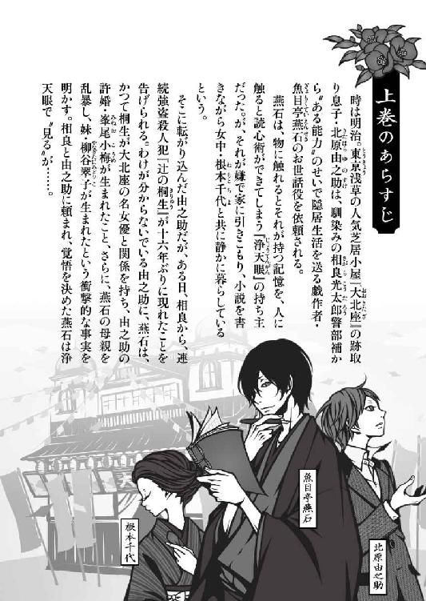
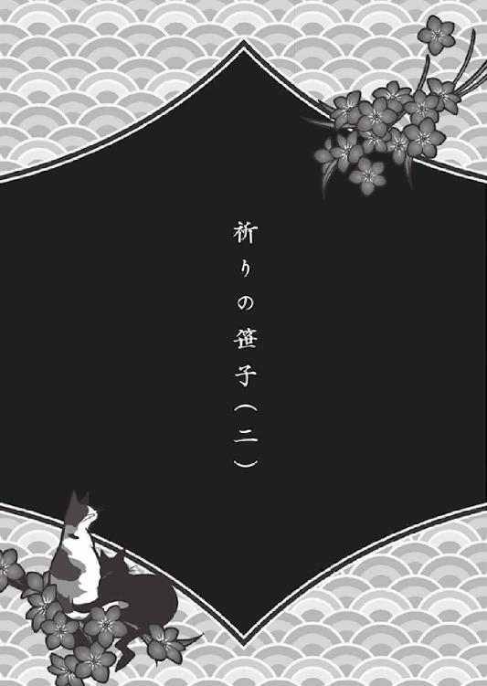
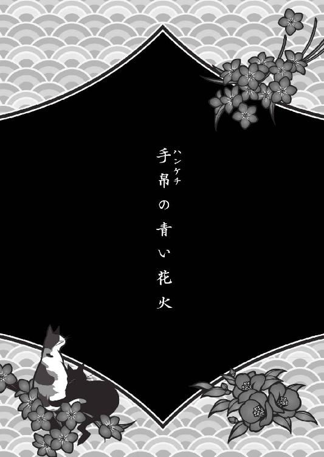
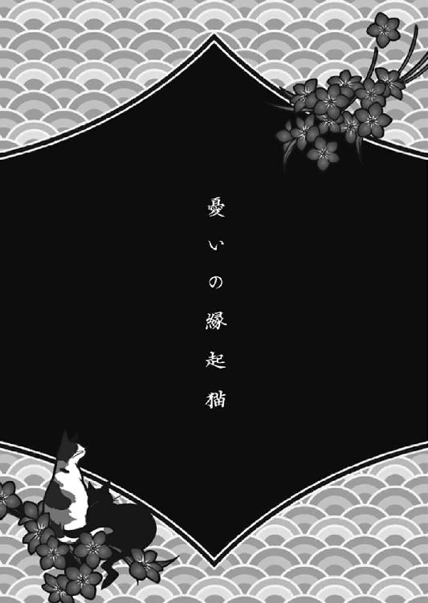
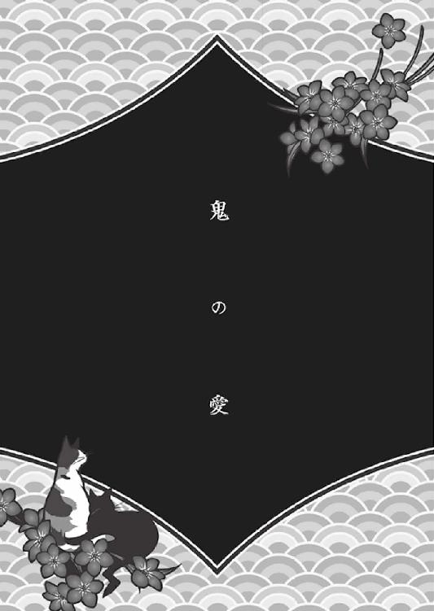

| 浄天眼謎とき異聞録 下 ～明治つれづれ推理（ミステリー）～ (マイナビ出版ファン文庫) | |
| 一色 美雨季 | |
| 株式会社マイナビ出版 (2017) | |
本作品を電子化するにあたり、一部の漢字及び記号等が簡略化されて表現されている場合があります。
本書はリフロー形式で制作されています。本文は文字の書体と大きさを変えることが出来ますので、お好みの設定で読書をお楽しみください。


「相良光太郎警部補を呼んでください！」
茶封筒を抱えた北原由之助が、息せき切って飛びこんだのは、東亰の深川警察署だ。
入口に立っていた制服警官を見て、由之助は大声を上げる。
「北原由之助が来て、魚目亭燕石が〝見た〟と言っていると伝えれば、分かりますから！」
と、その声が聞こえていたのか、建物奥の硝子扉の向こうから相良が駆け出してきた。
そのまま由之助の顔を見るなり、「大北座で揉め事が起きたんですね。分かりました、すぐに向かいます」と、わけの分からないことを言って強引に由之助の腕を掴み、後ろを振り返ることなく夜の町に飛び出す。
「由之助さん、署内で燕石の名を出すのはまずい。浄天眼のことは、巡査の岡田くらいしか知りませんから」
そうだった、と由之助は今更ながらに思い出す。しかも相良は、深川署には内緒で大阪署の知り合いにかけあい、遺留品の手拭いと剃刀を、極秘扱いで取り寄せていたらしいのだ。
「それで、もう燕石は浄天眼を使ったんですね？」
怒気を含んだ疑問符を投げつける相良に、由之助は「はい。でも、今はまだ、相良さんと顔を合わせづらいそうで......」と説明をする。
相良はチッと舌打ちをしたが、その頬は、僅かに緩んでいるように見えた。きっと相良は、母を苦しめてきた忌まわしい過去と真正面から向きあいだした燕石の決意に、気持ちが動く部分があったのだろう。
「桐生荘八の狙いはやはり峯尾小梅でした。詳しいことは大北座で話します。兄達にも話しておかなければいけないことなので」
一瞬、相良はギョッとしたように瞠目したが、すぐに「分かりました」と頷いて、真っ直ぐに前を向いた。
大北座に着くと、ちょうど夜の公演が終わったところで、劇場前は、興奮冷めやらぬ客と、それに群がる高級街娼に淫売婦などでごった返していた。
その人込みを縫うように前に進み、由之助達は頭取室へと向かう。
ノックもせずに室内に入ると、中にいたのは北原由右衛門と妻の初江だけで、ちょうどよかったとばかりに、由之助は扉に鍵をかけた。
「どうしたんだい？」
訝しげに問う由右衛門に、「小梅はいませんね？」と由之助は問い返す。
「ああ、今は、演者の衣装の手入れをしているはずだが......」
言いかけて、由右衛門はハッと腰を上げる。
「もしかして、燕石先生が浄天眼を使ってくださったのかい？」
「そうです。そのことで、お話をしに来ました」
由右衛門はちらりと扉の方に視線を馳せ、人がいないことを確かめると、ふたりに腰かけるよう椅子を勧めた。
「それで？」
「結論から先に言うと、桐生荘八の居場所は分からなかったそうです」
やはりそうか、と相良は舌打ちし、由右衛門と初江は深く嘆息した。が、続けて由之助は口を開く。
「ただ、ひとつだけはっきりしていることがあります。桐生荘八が動き出したのは、〝小梅を殺すため〟だそうです」
「ひっ」
初江は短い悲鳴を上げ、由右衛門は瞬時に顔色を変えた。
「あの手拭いと剃刀からじゃ、そこまで詳しいことは分からないと燕石は言っていました。でも、桐生荘八は表舞台から消えたあとずっと、小梅を殺すことだけを考えて生きてきたそうです」
由右衛門は絶句し、初江は「やっぱり、あの男は極悪人なんですよ」と、目に涙を滲ませた。
「親が子を殺したいと思うなんて、そんな恐ろしい話がありますか」
初江の言うとおりだと、由之助も思う。普通の人間には大罪人の思考など到底理解できない。
しかし、今となってみれば、由右衛門達が小梅の外出を制限していたのは、決してまちがった選択ではなかったのだ。
「燕石が言うには、桐生荘八は小梅の居場所を知っていた。投獄を恐れて大阪に潜伏していたが、もう我慢も限界だったのだろう、と」
「――ということは近く、桐生荘八は大北座に近寄る可能性があるわけですね」
相良は眉間に皺を寄せる。
「つまり、彼奴の潜伏先は分からないにしろ、東亰にいることはまちがいないわけだ」
すると突然、初江は立ち上がり、扉の方に駆け出そうとした。
「落ち着きなさい！」
慌てて由右衛門が腕を摑んで引きとめる。
「だって、あなた！ あの男は昔、古くから続く資産家の一族だなんて嘘をついて、大北座の楽屋まで入って来たじゃありませんか！ 今だって、もう既に小梅に近づいてしまっているのかもしれないんですよ！」
初江の言葉に、由之助の背筋はぞわりと冷たくなる。たしかに、その可能性もなくはない。
しかし相良は、「むしろ、それは好機かもしれません」と恐ろしいことをつぶやく。
「ちょっと相良さん！ なにを仰っているの！」
「要は、小梅さんが傷つけられなければいいということでしょう。小梅さんには、彼奴をおびきよせるための、いわゆる〝囮〟になっていただくんです」
「囮だなんて、そんなこと無理に決まっているじゃありませんか！ 第一、あなた方警察は一度、あの男を捕り逃がしているんですよ？」
「それは大昔のことです。それに、今回は大勢の犯罪者が対象ではなく、あくまでも桐生荘八ただひとり。加えて言うなら、私は当時の担当警部とはちがいます」
なにがなんでも捕まえると、相良は胸を張る。
しかし、当然ながら由右衛門も初江も首を縦には振らない。勿論、由之助も反対だ。
「小梅は、私達にとっては家族も同然の娘です。絶対に危険な目に遭わせるわけにはいきません」
「ならば逆に考えてみてください。これから私達警察は、この広い東亰の中、当て所なく桐生荘八を捜さなければなりません。発見し、逮捕するまでに、長い時間を要することはまちがいないでしょう。何ヶ月、下手をしたら何年も先になるかもしれない。その間、小梅さんはずっと危険に晒され続けることになるんです。あなた方はいつ何時、彼奴が襲ってくるかもしれない恐怖に、ずっと耐え続けなければならないことになるんですよ」
相良は言う。小梅が囮となって彼奴の犯行の好機を作ってやれば、一瞬で片を付けることができる。警察も計画的に動くことができるし、それゆえに安全であることにまちがいない、と。
「しかし......」
万一のことを考えると、やはりそう簡単に納得はできない。
それに、小梅にはどう言えばいいのか。いきなりお前は大罪人に命を狙われていると、だから囮になれと伝えられるはずもない。
話は平行線を辿り、誰もが途方に暮れていた時、ふと由右衛門が、「それはなんだい？」と由之助の手元を指差した。
「あ、すみません、うっかりしてました。燕石から、これも預かってきたんです。あらすじ程度だけど、新しい演目を考えてみたから、兄さんに渡すようにって」
由之助は、自分の手汗でヨレヨレになった茶封筒を差し出す。
受け取った由右衛門は中に入っていた原稿用紙を見るなり、露骨に眉間に皺を寄せた。
そこには、大きな文字で、
『新説・権八小紫』
と表題が記されていた。
『権八小紫』とは、かつて実在したふたりの人物のことを指し、同時に、歌舞伎や狂言、浄瑠璃でも人気の演目のことを意味する。
鳥取藩士だった主人公の青年・平井権八は、父の同僚を斬殺して藩を出奔、やがて江戸の吉原に辿り着き、三浦屋の花魁・小紫と昵懇の間柄となる。
権八は三浦屋の客として小紫と逢瀬を重ねるが、それゆえに困窮。小紫と会う金ほしさに、とうとう辻斬りを行うようになった。
斬ったその数、百三十人。そのあと、権八は品川の鈴ヶ森刑場で処刑され、それを知った小紫は、東昌寺にある権八の墓前で自害したとされている。
しかし、燕石の書いた『新説・権八小紫』は、実話とも、そして、今まで上演された数多の芝居とも、まったく異なった内容になっていた。
「――燕石先生も、残酷なことを仰る」
たった三枚の原稿用紙に目を通し、由右衛門は深い溜め息をついた。
「どうやら燕石先生は、相良さんと同じ考えでいらっしゃるようですよ」
権八の〝辻斬り〟が示すとおり、燕石の『新説・権八小紫』は、明らかに桐生荘八と峯尾紅梅の関係を匂わせるような物語に改変されていた。
けれど、まちがいなく言えるのは、決して紅梅の名誉を傷つけるような内容ではないこと。
そして『必ず峯尾小梅に演じさせること』と赤文字で注釈のついた、特別な意味を持つ役が用意されているということ。
「――つまり燕石は、小梅を、あえて人目に晒せと言っているんですね」
そこになにが書いてあるのか知らなかった由之助も、由右衛門と同じように嘆息する。と同時に、「私の妹」と言っていたくせに、やはり血の繋がりがなければこんなものなのか、とも思ってしまう。
しかし相良の解釈はちがった。後ろ盾を得たとばかりに、「人目に触れると言うことは、それだけ人の目に守られているということなんです」と力説する。
「小梅さんには、桐生荘八のことや囮のことを言わなくて構いません。ただ、舞台に立つことだけを説得してくだされば、それでいいんです」
由右衛門は思案げに両腕を組み、瞼を閉じた。そして小さな唸り声を上げると「――ひと晩、考えさせてください」と言った。
「相良さんや燕石先生のお考えを、端から否定しているわけじゃありません。ただ、これは、人の命がかかったことです。私には、小梅を養う者として、この劇場の頭取として、なにが最良なのかを考える義務があるのです」
相良は「分かりました」と頷いた。
当然、初江は露骨に不満げな表情を見せたが、しかし、家長であり頭取でもある由右衛門の言葉は絶対だ。どれだけ初江が金切り声を上げようと、決して覆されるものではない。
不満に思っているのは、勿論由之助も同じだ。けれど、だからと言って、ほかに小梅を守りきる方法も思いつかない。なにをどうすべきかさえ、もう分からない。
先の見えない焦燥に、己の不甲斐なさが重なって、由之助はギュッと唇を噛み締める。
外から聞こえる街娼婦達の喧騒が、虚しく由之助の耳に響いていた。
§
「ただいま帰りました」
由之助が燕石の家に戻ったのは、翌日の昼過ぎのことだった。玄関先で声を上げたが、女中、根本千代の返答がない。
――裏庭の掃除でもしているのだろうか。
燕石の家は、玄関から屋敷奥に向けて縦に長い。それゆえ、玄関の声は裏庭には届きにくく、ばしゃばしゃと炊事や洗濯をしている時などはなおさらなのだ。
まあいいか、ととくに気にもせず、由之助は靴を脱ぎ、上がり框を上がる。
由之助が気になっているのは、燕石の体調だ。昨夜、桐生荘八の手拭いと剃刀を〝見て〟、あまりの惨さに激しく嘔吐し、精根尽き果てた状態で眠りについてしまったので、そのあとの状態が心配だったのだ。
どうせ眠っているのだからと、由之助は入室の合図をすることもなく、燕石の部屋の襖を開ける。
......と、今まで見たこともない光景に遭遇した。
同じ家にいながらも、顔を合わせることを避けていたはずの千代が、燕石の布団の傍らに座っていたのだ。
「ち、千代さん、どうして......！」
「由之助様、どうかお静かに」
千代は自分の唇に人差し指を押し当て、「このことは、若旦那様には内緒ですよ」と、薄っすら微笑む。
「若旦那様が干乾びてしまってはいけませんので」
見ると、千代の手には清潔な綿紗が握られていた。この綿紗で、千代は燕石の唇を湿らせていたのだ。
「きっと若旦那様のお腹の中は空っぽです。本当なら、お食事を摂っていただくなり、せめて水を飲んでいただくなりすればよろしいのでしょうが、今はそんな状態ではございませんから」
「よくないんですか？」
「さあ......どうでしょう。消耗はしていらっしゃるようですが、たぶん大丈夫なのではないかと思います」
言いながら、千代は左手を燕石の頬に添え、右手に持った濡れた綿紗を、燕石の唇にそっと押し当てる。
手なれているな、と由之助は思った。きっと周囲の人間が知らなかっただけで、おそらく千代は、こんなふうに、いつも眠り続ける燕石の世話をしていたのだろう。
「それより、由之助様。なにか、若旦那様にお話があったのではございませんか？ どうしましょう、あと数日はお休みになったままだと思いますが......」
「ああ、大丈夫です。もし目が覚めていたら話したいことがあったんですが、まあ、それは無理だろうと思っていたので。とりあえず、燕石が目覚めてすぐに読めるように、紙にでも書いておきますよ」
「そうですか。では、今暫くは大北座の方に？」
「はい。新しい演目が決まったので、その準備に追われていまして。――燕石が筋書きを書いた演目なんです」
言いながら、思わず由之助は溜め息をこぼす。
今朝方、頭取室に呼ばれ、燕石の『新説・権八小紫』の公演が決まったと言われた。つまり、小梅を囮にすると、由右衛門が決断してしまったということなのだ。
「楽しみですね。......と、言ってはいけないのでしょうね」
「え、千代さん、知ってるんですか？」
「実は、午前中、光太郎様がお見えになりまして。桐生荘八の遺留品を引き取りにいらっしゃったのですけど、その時に少しだけお話を伺いました。光太郎様は仰っていましたよ、『皆さんに辛い決断をさせてしまったけれど、必ず小梅さんをお守りする』って。それから、『絶対に桐生荘八を捕まえてみせる』って」
だから大丈夫ですよ、と千代は言う。光太郎様は頼りになるお方ですよ、と。
「――そうですね。あの警部補なら」
由之助は頷く。
事態が動き出してしまった以上、もう前を見て進むしかない。そのためには、力を貸してくれる人を信じるよりほかはない。
「ところで、前々から思っていたんですが、千代さんは燕石のことを嫌ったり、恐れたりしているわけではないんですね」
「まあ、由之助様ったら、急になにを仰るんですか」
唐突な由之助の言葉に驚いたのか、千代は無邪気な表情でころころと笑う。
「ええ。嫌いでしたら、この家にお勤めなんて致しません。でも......」
「でも、なんですか？」
「憎い人とは、思っております」
やけにはっきりとした口調で、千代は言った。
「もしかしたら、私にとって若旦那様は、出会ってからずっと〝憎い人〟なのかもしれません」
言いながら、そっと燕石の頬に触れ、また濡れた綿紗をその唇に押し当てた。
§
大北座に戻ってからの由之助は、由右衛門の補佐で大忙しだった。
燕石が書いた筋書きを座付き作家が台本に起こしているその傍らで、ふたりは公演日程の調整を始めた。
大北座には『桐組』と『葵組』のふたつの組が存在し、普段は、たとえば桐組が公演している期間は葵組が次回公演の稽古を、また葵組が公演している時は桐組が稽古を、という交互公演の体系がとられている。
だが、この『新説・権八小紫』は話題作りを重視した一度きりの上演であり、その稽古期間も加味すると、もとから組んであった公演日程が大きく狂ってしまうのだ。
表向きには、この『新説・権八小紫』は、かつての人気女優・峯尾紅梅の〝忘れ形見〟、小梅の出演を目玉にした、特別公演となる。
それを世間に周知させるため、由之助は頭取補佐として、張り紙と広告ビラを作る印刷屋、そして、それを配る広目屋を手配した。由右衛門によると、チラシで話題を煽るには、だいたいひと月くらいかかるという。
とにかく、今回の演目に関しては、桐生荘八の耳に入らなければ意味がない。だから、このひと月で、できるだけ派手に宣伝活動を行わないといけないのだ。
『新説・権八小紫』は、日程の関係という名目で葵組が担当することになった。葵組の座長は大北座の中でも古株で、口にこそしないが、紅梅と桐生荘八のことを知る、数少ない人物だからだ。
「台本さえ上がれば、稽古の方は二週間もあればどうにかなると思いますが。問題は、大道具と衣装、それに小梅ですね」
座長は言う。
今回の演目には小梅のシーンをできるだけ華やかにするための大がかりな舞台装置が必要だし、衣装製作も稽古で普段針子部屋にいる小梅が抜けるため、裏方衆を束ねているお信ひとりで奮闘することになる。
由之助も手が空けば大道具の制作に加わり、初江もお信の補助に加わっているが、それでもギリギリ間に合うかどうかの瀬戸際なのだ。
肝心の小梅だが、こちらはあっさりと出演に応じた。由右衛門の「舞台に立てば、母親が見ていたのと同じ光景を見ることができるぞ」という言葉に、小梅はふたつ返事で頷いたのだ。
そして劇場内には、今日からもう、出入りの業者に扮装した警察官が何人か紛れている。誰も気づいていないが、小梅と、その周りに怪しい人物がいないか目を光らせているのだ。勿論、相良や岡田も、入れ替わり立ち替わり大北座に顔を出す。
燕石が浄天眼を使って以降、桐生荘八の情報は入ってきていない。
そんな慌しい時間を過ごしながら、ふと由之助は千代の言葉を思い出す。
『憎い人』
――あれは、一体どういう意味だったのだろうか。憎んでいるとは言っても、とてもそんなふうには見えなかった。もしかして、あれは由之助をからかうための冗談だったのだろうか。でも、千代のような人が、そんな言葉を軽々しく口にするとも思えない。
考えれば考えるほど分からなくなる。相良ならなにか知っているかもしれないが、しかし、そこに自分が踏み込んでいいのかどうかも由之助には分からない。
どんな人だって、誰にも触れてほしくないものを心に抱えている。燕石は、その触れてほしくないものに簡単に触れてしまえる人間だからこそ苦しみ、千代は、そんな燕石のそばに、子供の頃からずっといた。
――きっと、きっと、ふたりの間には深い事情があるのだろう。だからこそ〝憎い人〟なのだろう。
そんなことを考えながら、打ち合わせを終えた由之助は頭取室を出て大道具倉庫へと足を運んだ。
§
座付き作家が不眠不休で台本をこしらえてから七日目のこと。
いつものように大道具倉庫へと向かっていた由之助は、針子部屋から顔を出した初江に「ちょっと」と引き止められた。
誘われるまま針子部屋に入ると、巻尺を手にしたお信が仁王立ちで待ち構えている。
「なんですか？」
「いえね、ちょっと採寸をさせていただきたいんですよ」
言いながら、お信は由之助の背中に、ピタリと巻尺を当てた。
「シャツなら、もう結構ですよ。小梅に仕立ててもらった新しいのがあるし」
「誰がそんなものを仕立てると言いました？ あたくしが仕立てるのはね、坊ちゃんの舞台衣装でございますよ」
「は？」
一瞬、由之助は自分の耳を疑った。
すると横から初江が、「だって、仕方ないじゃないですか」と、ずいぶん芝居がかった溜め息をこぼす。
「こんなに私が反対しているのに、あの人ったら、勝手に小梅を舞台に立たすなんて決めてしまって。そりゃね、この劇場の責任者はあの人だし、相良さんも大丈夫だって言ってるし、まあ全てを否定しているわけじゃないんですよ？ でもね、やっぱり小梅が心配じゃないですか」
「ええ、義姉さんの気持ちは分かります。でも、そのことと、俺の舞台衣装と、一体なんの関係が？」
今度はお信が巻尺の数字を紙に書きながら、「年寄りは用なしってことですよ」と、憎々しげに口を挟む。
「かわいい小梅になにかがあっては一大事ですからね、あたくしは座長に、『小梅と一緒に舞台に立つ』って言ったんでございますよ。ほら、こう見えても昔、大北手妻一座の女手妻師として看板を張ったことのある人間ですからね。まあ昔取った杵柄とでも言いましょうか、大舞台にはなれておりますし、芝居中に小梅が襲われても、うまく機転を利かすことができるだろうと思いまして。......それなのに、あの座長ときたら、『芝居が壊れるからババアはいらない』と、このひと言ですよ。『それじゃあどうしたらいいのさ』って言い返したら、『若返りな』って。そんなの無理に決まってるじゃございませんか。それでね、あたくし、いいことを思いついたんです。あたくしの代わりに、坊ちゃんに舞台に立っていただけばいいって」
「はあ？」
あまりにも強引で横暴な発想だ。
それなのに初江は、「いい思いつきよねえ。亀の甲より年の功とは、よく言ったものだわ」と、嬉しそうにお信と目を合わせる。
「座長もね、由之助さんならいいって言って、早速、台本を変えてくださったんですよ。小梅と由之助さんが並んで立ったら、さぞかし舞台映えするだろうって」
「義姉さん、なに言ってるんですか。俺、そもそも芝居なんてしたことありませんが」
「あら、小梅だってありませんよ。それに、どうせ台詞のない役なんですよ。舞台の上手から下手に向かって、小梅と一緒にすうっと歩くだけでいいんです。ほら大丈夫、できますよ」
「でも、兄さんは？ 兄さんはなんて言ってるんですか？」
「これは芝居の問題です。座長がいいって言ってるんだから、頭取の意見なんかどうでもいいんです。それにね、あの人だって勝手に決めてしまったんだから、私やお信にだって、勝手に決めることのひとつくらいあったっていいじゃないですか」
――無茶苦茶だ。
けれど、由之助の出演は、初江とお信の中では既に決定事項のようで、ふたりは嬉々として前に後ろに採寸を進めていく。もう由之助の意思などお構いなしだ。
「頼りにしてるんですよ」
初江は言う。
「舞台の上で小梅のそばにいてあげられるのは、もう由之助さんしかいないんです。どうか、よろしくお願いしますね」
思わず溜め息がこぼれたが、由之助も小梅を思う気持ちは同じだ。ここは腹を括るしかないだろうと、諦め半分にそう思った。
由之助が燕石の家を訪れたのは、それから二日後のことだった。
五日間の眠りから覚めて数日経った燕石は、まだ青白い顔にこけた頬をしていたが、体調はそれほど悪くないようで、千代が作った薬膳粥を少しずつ食べているところだった。
膳のすぐ傍に座った由之助は、燕石が眠っていた間のことを詳細に話した。
しかし燕石は、聞いているのかいないのか、じっと粥を見つめたまま答えない。
「......大丈夫ですか？」
「ん？ ああ、すまない。なんだか疲れが取れなくてねえ」
弱々しい作り笑いで燕石は答える。
たったいま語った報告も、きっと燕石の頭には半分も入っていないだろうと由之助は思った。一体どれだけ酷いものを見てしまったのか、ここまで憔悴しきっている燕石の姿は見たことがなく、あまりの回復の遅さに違和感を覚えてしまうほどだ。
「......ええと、それで、由之助も、小梅さんと一緒に〝あの役〟をすることになったんだね」
「ええ、そうなんです」
「しかも、あの初江さんが薦めてるってのが面白いね。きっと、由之助をいっぱしの男と認めたんだろうね」
たしかに燕石の言うとおりだと思った。今までの初江なら、きっと由之助を舞台に上げるどころか、屋敷の中に鍵をかけて閉じ込めておいたことだろう。
「兄さんの方は、なんて？」
「勝手なことをするなと怒ってましたよ。でも、義姉さんとお信が俺の衣装を作ってしまったあとだったので、もう諦めてしまったみたいです」
「そういう由之助は、まるで他人事のようだねえ」
「仕方ないじゃないですか。そりゃ、俺だって恥ずかしいし、本当は舞台になんか立ちたくありませんよ。でも、兄さんでさえ言い負かされている状態なのに、俺ごときが口達者なあのふたりに勝てると思いますか？」
ははったしかに、と燕石はまた笑う。
が、急に真顔になり、「――それで、桐生荘八は、まだ動いてないんだね？」と、粥を掬っていた匙を置いた。
「はい、今のところはなにも情報はないようです。相良さんによると、やはり公演当日に行動を起こす可能性が高いのではないかと」
「そうだね。その方が、彼奴にとっても小梅さんの居場所が掴みやすいだろうしね」
大北座の内部は、思いのほか入りくんでいる。
それは先代の頃より増築を重ねたせいで、客を入れる殿堂はともかく、舞台裏の、とくに大部屋と倉庫が連なっている辺りはゴチャゴチャしていて、どの部屋に誰が入っているのか、由之助でさえ、たまに分からないことがあるくらいなのだ。
桐生荘八はおそらくその辺の事情も熟知している。だからこそ、あえて演者の居場所が分かりやすい本番当日に襲撃してくるのではないかと、相良は踏んでいるのだ。
「相良の話だと、巷じゃ、回向院の曲馬団より大きな話題になってるそうじゃないか。やはり『峯尾紅梅の忘れ形見』には、相当な衝撃があったようだねえ」
「はい。まだまだ峯尾紅梅を覚えている人達は多いですし、それに、その峯尾紅梅が子供を産んでいたなんて、世間の人は知りませんでしたからね」
だからこそ、桐生荘八はどんな思いでこの話題を聞いているのだろうかと由之助は思う。そして、世間に隠されていた実の娘のことを、どうして殺したいなんて思っているのだろうか、とも。
「――ところで由之助、芝居の準備で忙しいんだろう？ 時間は大丈夫なのかい？」
燕石に言われ、由之助はハッとして柱の振り子時計を見る。うっかり長居をしてしまったようだ。
「すみません、帰ります。......あ、それと、一番大事なことを忘れてました」
「なんだい？」
「燕石は、芝居を観に来てくれますよね？」
途端に燕石の顔が曇った。「ああ、それは......」と言い淀み、困ったように眉根を寄せる。
「久しく外になぞ出かけたことがないものだからね。さて、無事に大北座まで辿り着けるかどうか」
燕石はそうとぼけるが、問題はそこではないだろうと由之助は思う。この期に及んで燕石はまだ、桐生荘八と相対する勇気を持てないのだ。
「往来を歩く自信がないのなら、人力車を手配しますよ」
「おや、その気の回し方は、さすがは頭取補佐という感じだね」
茶化す燕石を無視し、由之助は言葉を続ける。
「外出着も、ちゃんと箪笥の中にありますし」
「そりゃ、千代が管理してくれているからね」
「今回の芝居は、燕石が書いた〝筋書き〟なんです。だから、ちゃんと自分の目で観ておかなきゃ駄目だと思います」
「でもねえ......」
「観るべきです！ だって、この芝居は、〝桐生荘八が捕まってこその大団円〟なんですよ！」
「――お前まで、相良と同じことを言うのかい」
ふう、と燕石は大きな溜め息をつく。
辛い過去だからこそ、もう見たくもないし、関わり合いたくないという燕石の気持ちは分かる。でも、関わるからこそ乗り越えられるものもあると由之助は思う。
現に、燕石は自らの筆で『桐生荘八を誘い出す筋書き』を執筆し、その鏑矢を大きく放つことができたのだ。ならば、もっともっと踏み込んで、自分の目で桐生荘八が捕まるところを見ないといけないと思うのだ。
「俺だって覚悟を決めたんですから、そろそろ燕石も覚悟を決めてくださいよ。とにかく、当日は人力車を手配しますから、絶対に来てくださいね」
のらりくらりと躱すのが常の燕石には、こうやって断定的に決めてしまうよりほかに手がない。燕石はしかめ面を見せたが、ここで由之助が退くわけにはいかないのだ。
由之助は燕石の部屋を出、台所の千代に挨拶をした。
暫くは忙しいので、芝居が終わるまでここには顔を出すことができないと伝えると、千代は、そうですか、と頷き、「当日は私も伺いますので」と言う。
「実は、翠子様にお声をかけていただきまして。私は、若旦那様をお見送りしてから、翠子様と一緒に出かけようと思っております」
「え、でも、翠子さんは......」
由之助は戸惑う。なぜなら、千代は、燕石の妹である柳谷翠子の本当の父親もまた、桐生荘八であることを知っているからだ。
すると由之助の心を察したのか、千代は「このことは、旦那様や光太郎様もご存知です」と、聞かれるでもなく言葉を返す。
「翠子様が話題のお芝居を観たいと仰るので、私はお供するだけです。ただそれだけのことです」
「燕石や相良さんは、駄目だって言わなかったんですね」
「はい。〝裏の事情〟が小梅様にとって関係ないことであるように、翠子様にとっても、それは関係のないことでございますから」
「......そうですね」
千代の言うとおりだ。小梅も翠子も、実の父親のことなんて知らなくていいのだ。だから、目の前で桐生荘八が捕まったとしても、それはふたりにとっては、赤の他人である大罪人が捕らえられたというだけのこと。
「若旦那様は、私が責任を持って人力車にお乗せします。ですから、由之助様は、どうかお芝居と小梅様のことに集中なさってくださいませ」
千代の言葉に「ありがとうございます」と頷き、由之助は燕石の家を出た。
公演当日まで、あと僅か。
街中に貼られた『新説・権八小紫』の張り紙を見ながら、由之助は大急ぎで帰路に着いた。
§
『新説・権八小紫』には、ふたりの権八が登場する。
ひとりは、三浦屋の花魁・小紫に懸想する逃亡中の浪人『桐生権八』。そしてもうひとりは、小紫を身請けすることを決めた資産家一族の若者『辻野権八』だ。
辻野権八と小紫は、相思相愛の仲だった。三浦屋に支払う身請け金の用意も整い、あとは身請証文に判をつくだけとなったのだが、しかし、一族の長老が身請けを認めてくれず、辻野権八は日々頭を悩ませていた。
実は、それには理由があった。辻野権八は気づいていなかったのだが、浪人の桐生権八が密かに長老に近づき、あることないことを吹き込んで、ふたりの仲を邪魔していたのだ。
辻野権八の身請けが引き延ばされる中、桐生権八は三日と開けず三浦屋に通い、必死になって小紫を口説いた。しかし、どれだけ通い詰めても小紫は頑として桐生権八を受け入れず、気がついた時には懐にあったはずの金も底を突いてしまっていた。
金がなければ、三浦屋に立ち入ることができない。しかし、なんとしても小紫に会いたい。
怨讐にも似た恋慕を胸に、桐生権八は刀を片手に夜の辻に立った。もともとは父親の同僚を斬殺して藩を出奔した身、ひとり殺すのもふたり殺すのも同じだった。
身なりのよさそうな人間を殺し、懐のものを奪う。
その奪った金で小紫を口説く。
桐生権八に罪悪感など微塵もなかった。ただ、己の欲望のみを満たせれば、それでよかった。
――しかし。
桐生権八が辻に立った日を境に、なぜだか小紫の様子がおかしくなっていった。突然なにもない空中を見上げて怯えたり、悲鳴を上げたりする。朋輩の遊女達を前に、「屍体が見える」「血が溢れてる」と叫んで、そのまま気を失ってしまったこともある。
原因不明の小紫の奇行に、誰もが困惑し、手をこまねいた。
そんなある日、辻野権八は、偶然知りあった修験僧から恐ろしい言葉を聞く。
「あなたの情人は、大勢の死者に呪われている」
桐生権八に殺された人々の怨念が、知らず血に塗れた金を受け取った小紫に向かっていたのだ。
奇行の原因を知った辻野権八は、小紫を救うべく奔走し、奉行所の役人と協力して、ようやく桐生権八を捕まえることに成功する。
この時、桐生権八に斬殺された人の数、百三十人。
全てを白状した桐生権八は、品川の鈴ヶ森刑場で処刑され、晒し首となった。
桐生権八に殺された人々の無念も、これで無事に晴らされた。
一族の長老の誤解も解け、晴れて夫婦になることを許された辻野権八と小紫は、ようやく身請証文に判をつく。
――しかし、実はこの時、まだ小紫への呪いは終わってはいなかった。いや、むしろ、別の呪いの始まりだった。
某吉日、三浦屋の大広間にて、小紫の身請けを祝う見世総仕舞いの祝宴が執り行われる。
大勢の祝辞を受ける中、突然、小紫が悲鳴を上げた。
その視線の先にいたのは、桐生権八の亡霊。
大勢の人を殺した桐生権八の魂は、極楽浄土へ行くことも叶わず、とうとう悪霊へと変化してしまったのだ。
和やかな雰囲気は一転、悪霊の祟りにより、三浦屋には血の雨が降り注ぐ。
血の雨に立つ桐生権八は、死してなお凶剣を振るった。
その凶剣から、必死になって逃げ惑う小紫と辻野権八。
突然の惨状に、祝宴を楽しんでいた客達の阿鼻叫喚が響き渡る。
そして、いよいよ逃げ場を失った小紫と辻野権八は、とうとう桐生権八の凶剣に倒れてしまう。
――もはや、なにもかもが血と闇に閉ざされたように思われた。
陰惨な静寂の中、しかし、そこに思いもかけぬ光が差し込んだ。
それは極楽浄土からの遣い、〝アンジュ〟の姿だった。
§
「義姉さん、これ、ずいぶん派手じゃないですか？」
衣桁に吊るされた自分達の衣装を見て、由之助は小さく唸った。
「最後にちょこっと出てくるだけの役なのに、こんなに派手で大丈夫ですか？」
「あら、なにか問題がありますか？ なんて言ったって、今回の公演の目玉は、あなた達......と言いますか、小梅なんですからね」
初江の言葉に、由之助はまた「うーん」と唸る。
誰もが知っている『権八小紫』は、燕石の手によって、まさかの怪談話に改変されてしまっていた。ふたり出てくる権八も小紫も、死ぬには死ぬのだが、もともとの話と死に方が全然ちがうのだ。
そして由之助と小梅の役とは......この、悪霊の呪いに倒れたふたりを哀れに思い、極楽浄土に導く〝アンジュ〟こと『神の遣い』だった。人外の役ゆえに、衣装も普通の着物ではないことは承知していたが、それにしても、この衣装は果たしてどうなのだろうか。
口をへの字に曲げる由之助に対し、けれど初江は、「そもそもが暗い筋書きですし、せめてあなた達くらいは華やかでないと」と至極当然のことのように口を開く。
「最初はふたりを極楽浄土に導く庵主さんの役だって聞いてましたからね、てっきり尼さんのことだと思ってたんですよ。そしたら急に座長が、『どうやら〝あんじゅ〟というのは、仏蘭西語で〝神の遣い〟のことを言うらしい』って言い出して。なんでそんなものが出てくるのか分かりませんでしたが、まあ、そういうことでしたら、それっぽいものに致しましょうって、お信とふたりで、大急ぎで羽みたいな羽衣つきの衣装を仕立てたんですよ」
言われて見れば、たしかに、燕石の原稿用紙には『ange』とか『アンジュ』とか『あんじゅ』とかの殴り書きがあったような気がする。
江戸の昔に『ange』とは燕石もなにを考えているのやら、なんて思うのは今更のことで、いずれにしろ、物語の舞台は御一新前の江戸だから、西洋絵画に出てくるような神の遣いを登場させるわけにはいかない。そこで初江とお信は、こんなふうに、長い羽衣をたっぷりとまとう天女のような衣装を思いついたらしい。
地味な尼僧からの反動で、つい派手さを増してしまったのだろうが、しかし、金通しの白紋綸子に、箔押しが施された薄絹の羽衣とは、あまりにも行き過ぎのような気もする。
役柄とはいえ、男の自分がこんなにキラキラした服を着なければいけないのか......と由之助が肩を落とすと、小道具の打ち合わせを終え針子部屋に戻ってきた小梅が、「なんて綺麗......！」と感嘆の声を上げた。
「お母さんも、こういう衣装を着ていたんですか？」
「ええ、そうですよ。紅梅さんは、どんな衣装でも見事に着こなしてしまうお人でしてね。私も、娘心に憧れたものですよ」
当時、由右衛門の許婚だった初江は、この大北座の常連だった。それ故に、在りし日の峯尾紅梅のことをよく覚えていた。
「紅梅さんが舞台に立つと、そこだけ強い照明が当てられたように眩しく見えて。芝居も歌も本当に素晴らしくて、紅梅さんに魅了されない観客はいませんでしたよ。あんな女優は、もう二度と出てこないでしょうね」
巷の人が峯尾紅梅の名を覚えていたように、初江もまた、紅梅に特別な印象を抱いていた。だから、尼僧の役でなくてよかった、峯尾紅梅の忘れ形見に相応しい衣装を作ってやれてよかったと、初江は言う。
「今日の通し稽古には、この衣装を着てくださいね。不具合があったら直しますから、ちゃんと言うんですよ。さあ、本番まであと五日。ふたりとも、気を引き締めて稽古を頑張ってくださいね」
「はい」
頷き、何気なく視線を動かすと、入口のところに立った出入り業者と目が合った。
――いや、正確に言えば、あれは出入り業者ではない。それに扮した深川署の警察官だろう。
大北座界隈だけでなく、街中でも警察官達が目を光らせている。それでも、いまだ桐生荘八は見つからない。相良によると、町外れの木賃宿や貧民窟にさえも、その姿は見えないという。
どこでどんな風に身を隠しているのか、そして、どこから小梅を見ているのか、誰にも分からない。
――あと五日。
あと五日もすれば、桐生荘八は、絶対に小梅の前に姿を現すはずだ。
渡された衣装を手に、由之助は小梅と共に入り組んだ通路の大部屋へと向かった。初江に言われたとおり、もっともっと気を引き締めていかねば、と思いながら。
§
そして迎えた、本番当日。
張り紙や広目屋の宣伝が功を奏したのか、平日の昼公演だというのに、予約必須の桟敷席は早い段階で売り切れ、当日券の一般席もあっという間に埋まってしまった。それでもどうにかして観たいという人が道に溢れ、いつもの街娼に淫売婦、ついでに野次馬やダフ屋も相まって、大北座前はちょっとした騒乱状態となっていた。
由之助が手配した人力車で早々に大北座にやって来た燕石は、二階の頭取室で、由右衛門が点てた薄茶を飲んでいた。青白い顔をしているのは入口の人込みに酔ったからだそうで、これだけの人いきれを味わうのは、実に生まれて初めてのことなのだそうだ。
「家内達は小梅につきっきりなものですから、燕石先生への応対が行き届かず、申し訳ありません」
詫びる由右衛門に、「お忙しいのですから、お気遣いなく」と燕石は言う。
「それにしても、凄い恰好だねえ」
由右衛門の薄茶でようやく人心地を取り戻した燕石は、由之助を見ながらぽつりとつぶやく。
「夜道で擦れちがったら、きっと腰を抜かすだろうね。とくに顔。とてもこの世の者とは思えないよ」
燕石の言葉に、途端に由之助は口を尖らせる。身にまとった衣装もさることながら、由之助の顔には、初江の手によって派手な化粧が施されていた。
「仕方ないじゃないですか。このくらいしないと、奥の座席のお客には顔が見えないんですよ。それにこの衣装だって、燕石が筋書きに『あんじゅ』と書いたからですし」
「まあたしかにそうだが、しかし、あれは『庵主』でも『ange』でも好きにしてくれていいという意味だったんだよ。――と言っても江戸が舞台の話だし、おそらく『庵主』の方になるだろうと予想してたんだ。それが......まさか『ange』の方になっているとは......。しかも由之助が出ることになるなんて......」
翼を模した羽衣付きの衣装に、燕石は苦笑いを浮かべる。筋書きを書いた当の本人も、よもや由之助がこんな衣装を着ることになるとは想像もしていなかったのだ。
「まあまあ。これもまた、芝居の醍醐味ですよ」
茶筅を片付けながら、由右衛門も苦笑いを浮かべる。
「それに、演出が派手であればあるほど、今日のお客は喜びますよ。なにせ、惚れた腫れたで有名な人情物が、まさかの怪談話に改変ですからねえ。客席を見たところ、今日は若いお客も多く入っているようです」
「若い人というのは、刺激の強いものが好きですからね。ところで、劇場前が酷いことになっていますが、立ち見券も出すのですか？」
「いいえ、さすがにそれは危険ですので。なんといいましても、今日は商売度外視の公演ですから」
そうですね、と燕石は頷いた。
一見して分からないが、劇場前には野次馬に扮した警官が紛れ込んでいるし、勿論、楽屋には出入り業者を装った警官が目を光らせている。
劇場の内外にこれだけ多くの警官が配備されているのだから、きっと桐生荘八も小梅を襲うことはできないだろう。当然、それはそれでいいことなのだが、しかし、本当にそうなってしまっては、小梅を囮にした意味がないのではないか。
由之助はそう思ったが、相良に言わせれば、逆にこのくらいでちょうどいいのだという。そのくらい、桐生荘八は抜け目のない男なのだそうだ。
「長い潜伏期間中に、彼奴の腕が鈍ってくれていればいいがねえ......」
燕石のつぶやきに、由之助はこくりと頷く。
と、一緒に話を聞いていた由右衛門が、急に立ち上がった。
「それでは燕石先生、私は仕事がありますので、階下に移動させていただきます。開演が近くなりましたら裏方の者が迎えに参りますので、客席の方にお移りください。妹さんと一緒に観劇できるよう、桟敷席をご用意しておりますので」
「あ、いえ、私は......。できましたら、舞台袖から観させていただけたらと思っておりますが」
一瞬、由右衛門は驚いたような表情を浮かべた。が、すぐに千代と顔を合わせないという燕石の家の事情を思い出したようで、
「これは申し訳ありませんでした。今日は妹さんのお供に女中の方もお見えでしたね」
と頭を下げた。
「こちらこそ、気を遣わせてしまって申し訳ありません。それに、実を言いますと、舞台裏というのを見学させていただきたいのです。こういう機会でもないと、劇場の仕事というのは見ることができませんので。今日に限っては、ついでに警察の仕事も見られますし」
そうですか、と由右衛門は頷いた。
「それでは、どうぞご自由に見学なさってください」
「ああそれと、出番前に、少しだけ小梅さんとお話しがしたいのですが」
「ええ、構いませんよ。由之助、楽屋に案内してさし上げて。......ただし、桐生荘八にはお気をつけください。どこに潜んでいるのか分かりませんので」
「承知しております」
それでは失礼、と由右衛門が部屋を出ていく。燕石はふう......と小さく嘆息し、「なんだか緊張するねえ」とつぶやいた。
緊張しているのは由之助も同じだった。桐生荘八のことと、大舞台に立つこと。どちらも緊張の度合いが強すぎて、もし家族や燕石が一緒でなければ、この場で吐いてしまいそうなくらいだ。
「では、小梅の楽屋に行きますか」
ちなみに小梅はというと、初江やお信と一緒に、大部屋を区切って作られた急ごしらえの楽屋に隔離されていた。あまりにも不自然な隔離の仕方だったが、小梅やそのほかの座員には「今日の目玉なのだから、出番が来るまで誰にも見つからないように」と言ってあるので、誰も疑問に思っている様子はなかった。
「楽屋は、たしか一階だったねえ。......あ、しまった」
傍らに置いていた風呂敷包みを手に取り、燕石は珍しく舌打ちをした。
「これを由右衛門さんに返すのを忘れていたよ」
「なんですか？」
「小梅さんの着物だよ。ほら、母親が背守りを縫ったという赤ん坊の時の」
そういえば以前、桐生荘八の手掛かりをつかむために〝見て〟もらおうと由右衛門が頼んで以来、燕石の家に置きっぱなしだった、と由之助は思い出す。なんだか色々なことがありすぎて、そこにまで気が回らなかったのだ。
「――まあ、いいか。直接、小梅さんに渡すことにしよう。ついでに話したいこともあるし」
「ついでにって、もしかして峯尾紅梅のことですか？」
「うん、まあね」
ゆっくりと立ち上がる燕石を先導し、由之助は一階へと向かう。
開演目前の大部屋前は、いつものように演者と裏方衆でごった返していた。大部屋の入口の戸はきっちりと閉じられ、出入り業者に扮した警官が数人、まるで値踏みでもするように、初めて大部屋に足を踏み入れる燕石の顔に目を向ける。
お勤めご苦労様です、と心の中で挨拶をし、由之助と燕石は戸を開けて、大部屋の一番奥、衝立で区切られた一角の前まで歩を進める。
「由之助です。入ってもいいですか」
はい、と初江の声が聞こえた。
由之助が衝立を動かすのと同時に、中にいた三人がこちらに顔を向けた。
連れの男に一瞬身構えたのだろう、その訝しげな視線は由之助を通り越して、すぐさま燕石に移った。
「こちらは、俺がお世話になっている魚目亭燕石先生です」
由之助が言った途端、三人は驚いたように椅子から立ち上がる。
「まあ、燕石先生、ご挨拶が遅れまして。由之助の義姉の初江でございます。こちらは、うちの座員のお信と、峯尾小梅で」
「お噂はかねがね伺っております。こちらこそ、ご挨拶が遅くなって申し訳ありません。この度は、開演おめでとうございます」
初江とひととおりの挨拶を交わすと、燕石はそばで控えるお信にも会釈をした。
そして、小梅に目を向ける。
「初めまして、小梅さん」
「初めまして、燕石先生。この度はお越しいただき、ありがとうございます」
由之助同様、小梅も既に化粧をし、衣装を身に着けていた。由之助とちがって違和感がないのは、やはり女優であった母親の血なのだろうか。
由之助は、ちらりと視線を滑らせるようにして燕石の顔を見た。初めて会う血の繋がらない妹に緊張しているのかと思いきや、燕石はいつもと変わらない飄々とした笑みを浮かべている。
「実は、小梅さんにお返ししないといけないものがあるのです」
「なんですか？」
「これです」
燕石が差し出したのは、例の風呂敷包みだった。
「〝戯作の資料として〟由右衛門さんにお借りしていたのですが、うっかり忘れておりまして」
そう嘯いて、申し訳ありませんと頭を下げる燕石に、小梅は「あ」と声を上げる。
「これは、私が赤ちゃんの頃に着ていた着物ですね？」
「ご存知でしたか」
「はい。亡くなった母が、浜千鳥の背守りを縫ってくれたと聞いています」
「ええ、そうです」
頷きながら、燕石は小さな背守りをそっと指で撫でた。
「これは面白い柄なんですよ。『千鳥』は群れを成す習性から、家内安全や家族円満を意味したり、また『千取り』とも言って、大願成就の祈りを表す柄なのですが、これに波模様を加えた『浜千鳥』になりますと、荒波を乗り越えて羽ばたいていくという意味に変化するんです。峯尾紅梅さんは、きっと色々な願いを込めながら、この小さな背守りを縫ったのでしょうね」
そうだったんですか......と、小梅は愛しそうに薄紅色の着物を受け取った。その目は、微かに潤んでいるように見えた。
「そんな意味があるなんて、今まで知りませんでした。燕石先生、ありがとうございます。私、母のことを思いながら舞台に立ちます」
「ええ、峯尾紅梅さんも、きっとお喜びになることでしょう。......ああ、そうだ、もうひとつ、言わなければならないことがあった。この浜千鳥にはね、実を言うと、峯尾紅梅さんなりの別の意味もあったようですよ」
「なんですか？」
ふふ、と、燕石は意味ありげに微笑んだ。
「この浜千鳥はね、実は、『笹子』でもあるんです」
「笹子って、なんですか？」
怪訝な瞳で問う小梅に、「あらまあ、恥ずかしいことを聞くんじゃありませんよ」と、お信が横から口を挟む。
「笹子ってのはね、まだ上手に啼けない鶯の若鳥のことを言うんですよ。ほら、冬の季語で『笹鳴き』ってのを聞いたことがあるでしょう。要するに、アレのことですよ」
「さすが、お信さん。そのとおりです」
言いながら、燕石は小梅の手の中の浜千鳥を指差した。
「この浜千鳥は、灰緑色の糸で縫ってありますよね？ これは鶯の色です。昔から鶯は春告鳥と呼ばれ、〝梅に鶯〟は調和の取れた美しいものとされてきました。――どうやら峯尾紅梅さんは、自分とあなたの名前に引っかけて、この浜千鳥に込めた母の想いが、梅の花と調和する鶯のように、いつまでも小梅さんのそばにあるように......と、祈りを込めて縫っていたようです」
「あの、燕石先生、もしかして、わざわざ〝見て〟くださったんですか？」
小梅の言葉に、燕石はなにも言わず、ただ、ふふふ、と笑う。
浄天眼について由右衛門達から話を聞き、それでも半信半疑でいた小梅だが、思いやりのある燕石からの言葉を受けて、改めて背守りに視線を落とした。
木綿地の梅小鉢紋様の中を飛ぶ、小さな鳥。
古来より背守りは、幼子の背後から悪いものが入ってこないようにと、一針、一針、願いを込めて縫われるものだとされている。
燕石の言葉を信じるならば、この背守りには、小梅が考えていた以上に深い母の想いが込められていたのだ。
ありがとうございます、と、小梅は改めて燕石にお礼を言った。
「私、母との思い出なんて殆どなくて......。だから、母がどんな気持ちで背守りを縫ってくれていたかなんて、今まで考えたこともありませんでした」
「ああ、それは仕方ないことですよ。この背守りは、まだ『笹子』ですしね」
「え？」
「まだ上手に啼けない雛鳥なんです。だから、自分に託された紅梅さんの気持ちを、うまくあなたに伝えることができなかったんです」
冗談とも本気ともつかない燕石の言葉に、その場にいた全員がきょとんと顔を見合わせた。
けれど燕石は、真顔のまま、「いつか成長しますよ」と小梅に言う。
「時期が来れば、笹子は鶯になり、その美しい啼き声をあなたに聞かせるはずです。その時は、ちゃんと聞き留めてあげてください。その啼き声を、あなたのお母さんの声だと思って」
「――分かりました」
こくりと、小梅は頷いた。
その時、劇場の方から怒号のような歓声が聞こえてきた。いつの間にやら、舞台の幕が上がっていたようだ。
「燕石、舞台袖に移動しましょう」
そうだねえ、と燕石が椅子から腰を上げた途端、今度は大きな甲高い悲鳴が聞こえてきた。
「何事だい？」
驚いて聞く燕石に、「たぶん辻斬りの場面だと思います」と由之助は答える。
「座長がひねりを聞かせて、桐生権八が辻斬りをする場面から始まるように、進行を変えたんですよ。物語が進むにつれて、それは小紫に会うためだと分かるようになるんです」
「たしかに、その方がお客の気を引きやすいかもしれないねえ」
「辻斬りの場面は、本当に派手ですよ。懐に血糊を仕込んで、盛大に血飛沫が飛び散るように細工したんです。後半の三浦屋の場面なんて、もっと凄いですよ。壁や天井から血糊がドバッと飛び出して、本当に舞台上が血の海になるんですから」
「なんだってまたそんな」
「一度きりの芝居だし、どうせだから派手にやろうって座長が。棟梁は仕掛けの設計に難儀してましたが、千代さんに相談したら、ささっと図面を引いてくださって」
棟梁が褒めてましたよ、と言う由之助に、燕石は眉を顰め、ああ......と、情けない呻き声を上げる。
「千代か......。あれのことだから、きっと容赦ない仕掛けを思いついたんだろうねえ。申し訳ないが、私は、今暫くここにいることにするよ」
「え？ 観ないんですか？」
「由之助だって知っているじゃないか。ほら、私は、そういう血がドバッと出るような、恐ろしいのは嫌いでね」
「え、血糊のなにが恐ろしいんですか？ そもそも『新説・権八小紫』は、自分で書いた筋書きでしょう？」
「ああ、それはだね、贔屓客に悲恋物が人気と聞いたし、若い客を集めるのなら怪談がいいだろうと思ってのことだよ。まあ自分が書いたものなら大丈夫かもしれないと思ったが、しかし、客席から悲鳴が上がるほどの恐ろしい演出になっているのだとしたら、私にとっては、ちょっといただけないね」
まあ怪談で悲鳴が上がるのはいいことなんだけどねえ、と言いながら、燕石は初江のすすめる椅子に腰を落ち着けた。
こうなると、もう燕石はビクとも動かない。初江はクスクス笑い、「それならば、この子達の出番までここにいてくださいませ」と言って、衝立の陰でお茶の準備を始めた。
「せっかくですから、燕石先生の楽しいお話を聞かせてやってくださいな。きっと由之助や小梅の緊張もほぐれますでしょう」
お信も、「それがようございます」と嬉しそうに頷く。
――まあ、これだけ怖いものが苦手の燕石だって、一応は大人の男だ。桐生荘八がいつ現れるか分からない今、初江達は、きっとひとりでも多く男がそばにいてくれる方がいいと思っているのだろう。
舞台裏の見学はまた今度、と言って、客席の悲鳴を背景に、燕石は世間話を始めた。
とはいっても、あまり家から出ることのない燕石だから、話のネタもそこまでない。大半は庭にやって来る野良猫や雀のこと......そして、妹の翠子の話だ。
同世代の友人がいない小梅は、翠子の話を食い入るようにして聞いた。それが分かったのか、燕石もだんだん、翠子の思い出ばかりを面白おかしく話して聞かせる。
喧嘩で年上の男の子に勝ったこと、女学校で誂えた海老茶色の袴が気に入らず、燕石の袴を勝手に拝借して出かけようとしたこと、そして、友人から黒焦げのイモリが入った小箱を渡され、呪いだと大騒ぎをしたこと......。
――わざとだ、と、由之助は思った。
舞台裏が見たいと言ったり、それなのに血糊が怖いから舞台裏に行きたくないと言ったのは、全て燕石の計算だ。小梅に翠子の話を聞かせるために、けれど偶然話してしまったと見えるように、燕石はわざわざ頭の中で筋書きを組み立てたのだ。
「翠子さんって、楽しい方ですね」
朗らかに笑う小梅に、燕石は、「今日は客席に来ていますよ」と言う。
「そうだ、もしご迷惑でなければ、芝居のあと、こちらにお邪魔させてもよろしいですか？ あれのことだから、興奮して大騒ぎするかもしれませんが」
「嬉しいです。ぜひ、翠子さんにお会いしたいです」
――燕石の狙いは、きっとこれだったのだろう。
秘めた兄心と言うべきか。燕石は、血の繋がった姉妹であるふたりを、自然な形で引き合わせてやりたかったのだ。
「そろそろ出番だ。移動しよう」
と由之助が言うと、「舞台袖まで護衛します」と、不意に、衝立の向こうから男の声が聞こえた。
由之助が衝立の隙間から覗くと、見なれぬ顔の若い男が、丸めた台本を片手に立っていた。裏方衆を装ってはいるが、おそらく警察の人間なのだろう。
由之助は軽く唾を飲んだ。
いよいよだ。
俄に緊張を覚えたが、しかし、ここで逃げ出すわけにはいかない。
「それでは、ふたりとも、行きますよ」
お信の言葉を合図に、由之助と小梅は立ち上がった。
初江が、「稽古のとおりにやれば、大丈夫ですからね」とふたりの肩を叩く。
「転びさえしなければ、大成功なんですから」
初江の言うとおり、由之助と小梅の役に台詞はない。だから、すました顔で舞台に立ち、そのまま主役ふたりを伴って舞台袖に帰ってくれば成功、無事幕をおろすことができるのだ。
護衛の警官を先頭に、由之助達はぞろぞろと舞台袖に移動する。ちらりと、視線を滑らせると、大道具の陰に立つ相良と岡田の姿が見えた。
――まだ、桐生荘八は現れない。
由之助は小梅に気づかれないよう、燕石と目配せをした。
『新説・権八小紫』の舞台を成功させたとしても、それは、まだ本当の意味での成功ではないのだ。
由之助達が舞台上手袖――客席側から見て舞台の右側に着くと、先導していた警官は由之助達に軽く会釈し、そのまま舞台の裏へと向かい、下手袖に行ってしまった。
舞台を覗き見ると、場面はちょうど山場を迎えていて、舞台中央では、切られた小紫と辻野権八が大道具から吹き出した血糊の海で悶絶していた。
「うわあ......」
客席から聞こえる悲鳴に合わせて、燕石が情けない声を上げる。贋物のだと分かっていても、やはり流血は好きになれないらしい。
「燕石先生」
ふと、一緒に舞台を覗いていた小梅が振り返って口を開いた。
「ひとつ、伺ってもいいですか？」
「なんです？」
「あの......もしかして、この小紫と辻野権八って、私の両親のことじゃないですか？」
一瞬、燕石は瞠目した。
「どうして、そう思うんですか？」
「お信さんから聞いたんです。私の母は人気女優だったけど、その分、謂れのない妬みや嫉みを受けることが多くて、だから、両親ともに早く亡くなってしまったんだって。それで、なんとなく......」
燕石は口を噤んだ。
が、ふふふ、とやにわに笑うと、「ばれてしまいましたか」と悪戯っぽく口の端を上げた。
「この話を思いついた時、ふと、由之助から聞いた峯尾紅梅さんの話を思い出しましてね。それでまあ、少しばかり人物像を拝借してしまったわけです」
勝手なことをして申し訳ありません、と燕石は頭を下げる。
当然、由之助はそんな話などしていない。けれど小梅には、それが真実と取れたのだろう。
「だから、極楽浄土に連れていく役に、私を薦めてくれたんですか？」
と、やや興奮気味に聞く。
「ええ、そうですよ。若くして亡くなったおふたりを極楽浄土に連れていくのは、やはり、娘である小梅さん以外に思いつかなかったので」
――勿論、これも嘘だ。
小梅の父親、桐生荘八は、まだこの世のどこかに生きている。ただ死んだことにしてしまった方が都合がよかっただけで、古株の座員はおろか、かつての峯尾紅梅の後援者達も、みな同じように口裏を合わせているだけのことなのだ。
それなのに小梅は目を潤ませ、「ありがとうございます」と燕石に頭を下げた。「親孝行の機会を与えてくださって」と。
その時、緞帳の裏に隠れた座長が右手を上げた。出番の合図だ。
「行こう」
由之助が声をかけると、小梅は燕石に再度頭を下げ、正面を向いた。
その顔は別人のように引き締まっていて、峯尾紅梅が舞台に立つ前も、きっとこんな顔をしていたのだろうと由之助は思った。
目映い照明の方に向かって、一歩、足を踏み出す。
その瞬間、客席からまるで獅子の咆哮を思わせるような喝采が沸き起こった。その歓声は由之助と小梅を大きな渦の中に巻き込む洪水のようで、一瞬、動揺から、由之助の足は動きを止めた。
しかし、小梅は足を止めることなくゆっくりと進んでいく。ハッとして由之助も歩を進める。慌てて追いかけるのではなく、稽古どおり小梅に付き従うように、ゆっくりと、ゆっくりと。
床にできた血溜まりが白い衣装を赤く染めるが、それも座長の演出のうちだ。稽古のとおり舞台中央に立ち、そして正面を向くと、洪水のようだった歓声はさらに大きなものとなった。
口を開け、力いっぱい拍手している客の姿が見えた。泣いている客も、神仏を拝むように手を合わせている客もいた。
客席にいる全員が興奮している。これだけの興奮を作り上げたのは、舞台の上にいる演者達。
――そして、これこそが、女優、峯尾紅梅が見た景色なのだ。
なにを思ったのか突如、呆然と立ち竦んでしまった小梅を、今度は由之助が先導するように歩き出す。
今の小梅は、芝居の目玉である〝峯尾紅梅の娘〟であると同時に、権八と小紫を極楽浄土に導く天の遣い〝アンジュ〟だ。つまり、血塗れで倒れている主役のふたりを極楽浄土に見立てた舞台袖に引っ込めさせなければ、舞台の幕をおろすことはできないのだから。
由之助と小梅が手を差し出すと、息絶え、倒れていた主役ふたりは、まるで魂を取り戻したかのように立ち上がった。
そして、舞台下手側に向かって歩き出す。
ふたりの〝アンジュ〟に導かれながら、ゆっくりと、ゆっくりと。
あと十五歩も歩けば、一回限りの芝居『新説・権八小紫』は終わる。
場内は、割れんばかりの拍手と歓声に包まれていた。演者も観客も感動していた。
――と。
由之助の耳が、なにか鋭く甲高い笛のような音を捉えた。
大きな拍手と歓声の中でも明確に響いたその音に、由之助は芝居を忘れて足を止め、おもむろに視線を巡らせる。
――まさか、そんなはずはない。ここは劇場だ。だから聞こえるはずがない。〝鶯の啼き声〟なんて......！
「小梅ぇぇぇ！」
次の瞬間、太い怒声と共に、由之助の視界に冷たい銀色の光が走った。
舞台下手側の緞帳の陰に立っていた男が、叫びながらこちらに向かって走ってくるのが見える。
あれは、由之助達を舞台袖まで先導した若い警官――いや、ちがう。
「......！」
――若くない。
化粧で若く見せていたのだ。ボロボロと汗で剥げ落ちた化粧の下から、大きなシミや細かい皺が見える。
そして男が手にしているのは、丸めた台本ではなく、抜き身の短刀。
――まさか。まさか、あの警官が......!?
「小梅！ 逃げろ！」
咄嗟に由之助は小梅を突き飛ばし、男の前に立ちはだかった。しかし、小梅は突き飛ばされた弾みで転倒し、動くこともままならない。
由之助は小梅に覆いかぶさる。同時に、右肩に強い痛みを覚えた。
それは、熱した鉄棒で殴られたような痛み。
斬られたのだと由之助は理解したが、それでも由之助は動かない。
桐生荘八に小梅は渡さない。
小梅は殺させない！
だが、桐生荘八の短刀が、再び由之助達を襲うことはなかった。
「由之助！ 無事かっ？」
燕石の声に顔を上げると、短刀は既に床に落ち、桐生荘八は方々から飛び出してきた警察官に取り押さえられていた。
客席に明かりが灯り、すぐに客席入口が開けられた。痛みに意識が朦朧とする由之助の目にも、逃げ出す客や泣き喚く客、立ち上がり、前のめりに舞台上を覗き込む客の姿が見える。
もう大丈夫だ、と由之助は安堵の吐息を漏らしたが、体は思うように動かず、半身を起こしたものの、それ以上は起き上がることができない。
小梅も、由之助にしがみついたまま、まるで発条仕掛けの人形のようにガタガタと小刻みに震えている。
白い衣装は血糊と由之助の血が混ざり合って深紅に染まり、この世の者ざる雰囲気を醸し出す。その惨状に、客席からさらなる大きな悲鳴が響いた。
舞台を覆いつくす血溜まりは、天井の照明を反射して煌々と光り、現実では考えられない歪さの中に、えもいわれぬ強烈な美しさを孕んでいた。
――きっと、これが、桐生荘八の見てきた世界なのだ。
殺して、殺して、......そんな血塗れの世界の中に、桐生荘八は夢を見ていた。
この深紅に染められた世界が美しいからこそ、この中に峯尾紅梅と、そして生まれてくる子供との、幸せに満ちた世界があると信じていたのだ。
「因果だ......」
思わずつぶやき、由之助は腕の中の小梅を強く抱き締めた。
小梅が生まれるまでに、たくさんの無辜の血が流れた。そして今、小梅は、その血の中で殺されようとしていた。
それはもう、因果以外のなにものでもない。
「誰か！ 早く由之助さんの手当てを！」
演者数人が、叫びながら由之助達を抱え上げようとする。
――ホー、ホケキョ。
「――あ」
また、鶯の啼き声が響いた。
けれど、先ほどとはちがい、それは酷く穏やかな優しい啼き声で。
「こ、こうばい......！」
鶯の啼き声と重なるようにしわがれた男の声が聞こえた。
すると、その途端、今度は、その声の主、桐生荘八を取り囲んでいた警官達から太い悲鳴が上がった。
「小梅、見るな！」
咄嗟に、由之助は動く左手で小梅の頭を抱え込み、小梅の視線を悲鳴の方から妨げた。
警官の人垣の隙間から、由之助が見てしまったもの。
それは、目を剥き、口から血を吐いた、桐生荘八の壮絶な死に顔だった。
§
由之助が燕石の家を訪れたのは、それから半月後のある晴れた日のことだった。
部屋に入ると、燕石はいつものように文机に肘を置き、ぼんやりとお茶を啜っていた。
「やあ由之助。久しぶりだね。傷はどうだい？」
「まだ痛みますが、大丈夫です。桐生荘八の腕が鈍っていて助かりました」
それはよかった、と燕石は微笑む。
実際、由之助の怪我はそこまで深いものではなかった。まだ傷口は完全に塞がっていないが、こうして自由に出歩くこともできるし、医者によると、後遺症と言えばせいぜい薄く傷跡が残るぐらいのことだろうという。
それよりも、これまで生死の境に直面したことのなかった由之助にとっては、桐生荘八の死に顔の方が辛かった。鉄に浮き出た赤錆のようにしつこく脳裏にこびり付いて、今でも夢の中に出てくるほどだ。
「燕石は、いつも浄天眼であんなものを見ているんですね......」
由之助の小さなつぶやきに、燕石は静かな笑みを浮かべる。燕石が浄天眼を使いたくないという気持ちも、今の由之助ならなんとなく理解できるような気がする。
ちらりと視線を滑らすと、文机の上にあの時の新聞が見えた。一面には『連続殺人鬼・桐生荘八』の文字が大きく踊っており、人相の悪い男が逮捕される風刺画と、さらに大きな文字で『獄中にて病死』の文字が付け加えられていた。
その見出しが嘘であることを、由之助は知っている。
けれど、大北座の舞台上ではなく獄中死と発表されたのは、全て相良をはじめとする警察側の心配りだ。大北座に悪い噂が立たないよう、あえてそのように発表してくれたのだ。
――あの時。
倒れた由之助の角度からはよく見えなかったが、飛び出してきた警察官達に取り押さえられた桐生荘八は、咄嗟に懐から小壜を取り出したという。そして警察官が止める間もなく、その小壜の中の液体を口に含み、自ら命を絶った。
のちの調べによると、その液体は昇汞水――つまりは、塩化水銀だったらしい。
「昇汞水って、あんな簡単に死ねるものなんですね」
由之助の言葉に、燕石も小さく頷く。
「話には聞いたことがあるがね、私も、実際に目にしたのは初めてだよ」
幸か不幸か、舞台の上は既に血糊で赤く染まっていたし、客席は予想外の暴漢登場による極度の恐慌状態だったから、桐生荘八が吐血のうえ絶命したと気づいた客は誰ひとりとしていなかったと燕石は続けた。話題の舞台について芸能記事を書こうと関係者席にいた記者達でさえ気づくことができず、それ故に、警察発表を疑う者もいなかったという。
運も味方していたのだと改めて納得する由之助に、燕石も、同意するようにこくりと頷く。
「彼奴が峯尾紅梅の熱狂的な崇拝者だったことは、当時の新聞にも書かれていたことだしねえ。丸めた台本の中に短刀を隠し、峯尾紅梅の娘が立つ舞台に侵入したとしても、誰も不思議には思わないだろうさ」
かつての崇拝者の中には、紅梅が密かに子供を産んでいた事実に、それは贔屓に対する裏切り行為だと憤慨する者が少なからずいたという。だから、桐生荘八の凶行も、世間の目から見ればそこまで異様なものではなかったのだ。
桐生荘八の遺体はすぐさま大北座から運び出され、そのあと、大北座の座員と燕石も含めた関係者全員が取り調べを受けたが、当事者の由之助と小梅でさえ、簡単な調書だけ書くと即座に解放された。
これも全て相良の根回しと立ち回りのお陰だった。
桐生荘八が大北座に現れるという情報を掴んだのは〝相良と岡田の捜査の賜物〟ということになっていたし、大北座と燕石はただの捜査協力者ということで、勿論、浄天眼のことも、そして小梅の父親が桐生荘八であることも、誰にもバレることはなかった。
「ともあれ、これは大団円と言っていいんじゃないかねえ」
ふう、と燕石は小さく嘆息した。
「あの昇汞水は、彼奴に残った最後の良心だったんだよ。あれだけの極悪人が最後に殺したのは、結局、自分自身だったわけだから」
ふと由之助は頭に浮かんだ疑問を聞く。
「どうして桐生荘八は、舞台の上で小梅を殺そうとしたんでしょうか。楽屋でだって、襲う機会はあったはずなのに」
「それはね、紅梅に瓜ふたつな自分の娘が、舞台に立つ姿を見たかったんだよ。かつて舞台で輝いていた紅梅は、桐生荘八にとって目映いばかりの希望の光だった。その光を、もう一度、娘に重ねてみようとしたんだ」
「......〝見た〟んですね」
ああ、と燕石は頷いた。
大北座から桐生荘八の遺体が運び出される際、燕石はどさくさに紛れて触れたらしい。燕石も遺体に浄天眼を使うのは初めてのことで、実際に〝見える〟のかどうか自信はなかったそうだが、どうにか生前の桐生荘八の思考を読み取ることができた。
桐生荘八は、唯々孤独な男だったという。
「あの男は、幼い頃に軽業一座に売られ、善悪を教えられることなく育ったんだよ」
善悪が分からないから、自分が幸せか不幸かなのかも分からなかった。大人になって、辻斬りが見つかり、警察に追い詰められて、軽業一座の隠し金を持って仲間から離れた時、ようやく『孤独は不幸だ』ということに気づいた。
峯尾紅梅の後援者達に近づいた理由も単純で、自身が峯尾紅梅の崇拝者であったから、同じ崇拝者である後援者達との語らいが、たまらなく楽しかったからだという。
けれど、その楽しさを持続させるためには、どうしても金が要る。だから桐生荘八は人を斬った。もともと善悪なんて知らない男だったから、それが悪いことだなんてまったく思ってはいなかった。
「仲間がいて、紅梅がいる。辻斬りさえしていればずっと幸せでいられるのだと、桐生荘八は思い込んでいた。だけど、それも長くは続かなかった。紅梅に子供ができてしまった。その責任を取ることで素性がバレ、『資産家一族の辻野桐也』は『辻の桐生』であると、周囲に気づかれることを恐れたんだ」
また、桐生荘八の孤独の日々が始まった。
やがて長い月日が経ち、そして......。
「――ある日、もう自分は長くはない、と悟ったのだよ」
貧民窟を転々と逃げ暮らしていた桐生荘八は、不衛生な環境と疲労から、すっかり体を悪くしていた。
そして、そう遠くないうちに朽ち果てるのだと気づいた時、ふと、紅梅の腹の中にいた子供に会いたくなった。生まれているのかどうかも分からないが、もし生きているのだとしたら、事情を知っている連中からおそらく酷い仕打ちを受けているにちがいない。罪人の子だと蔑まれて生きていくくらいなら、いっそのこと、自分と一緒にあの世まで連れていってやろうと思った。
「――つまり、小梅と親子心中をしようとしていたってことですか」
「ああ。あれは人の情を知らない男だからね、我が子が普通の娘として暮らしているなんて、微塵も考えやしなかったんだよ」
それなのに、ようやく見つけ出した娘は、想像とちがってあまり不幸そうには見えなかった。むしろ、とても大事に育てられているように見えた。
おかしい。そんなはずはない。罪人の子供が大事に育てられているわけがない。
だから桐生荘八は、やはり小梅を殺すべきだと思った。......否、そうするべきだと自分自身に思い込ませた。
酷い孤独感に苛まれていたからこそ、もう孤独の中で死にたくない、我が子を道連れにしたいと、そう考えたのだ。
けれど、刀を振り上げた瞬間、桐生荘八の中に躊躇いが生じた。
「彼奴は気づいてしまったんだよ。小梅さんを殺すことは、同時に〝幸せだった過去の自分〟を殺すことにもなるのだと」
目映い照明を浴びて舞台に立つ小梅の姿に、在りし日の自分と紅梅の思い出が重なった。
愛し、愛され、人生の中で最も幸福だった頃の自分。その幸福によって創りだされた命が、今、愛した女と同じ姿で目の前にいる。
――けれど。
桐生荘八を見つめるその顔は、ただ怯えていた。
紅梅なら微笑み返してくれたのに。
愛してると言ってくれたのに。
「桐生荘八は、怯える小梅さんの姿を見て、ようやく自分が〝取り返しのつかない、親としての過ち〟を犯したと悟ったんだ」
それは、桐生荘八の中に、本当の意味での娘に対する愛情が生まれた瞬間だった。と同時に、もう親として後戻りすることはできないのだと悟った瞬間でもあった。
だから、躊躇うことなく昇汞水の壜を開けた。
自分がこの世から消えることが、唯一、娘のためになることだと信じて。
「もっと早く自分の中の親心に気づくべきだったねえ......」
虚しさを滲ませた燕石のつぶやきが、静かに空気の中にとけていく。
「実は俺、舞台で、鶯の啼き声を聞きました」
少し躊躇うように、由之助は言った。
「ほう」
「小梅も聞いたと言っていました。桐生荘八が襲いかかってきた時と、昇汞水を飲む直前に」
「おや、そうかい」
燕石はそれ以上なにも言わなかったが、由之助は、おそらく背守りの笹子が助けてくれたのだろうと思った。
――小梅の命を守るために。そして、桐生荘八に子殺しをさせないために。
啼けない雛鳥だった笹子は、〝峯尾紅梅の祈り〟を伝えるために、啼ける鶯へと変貌したのだ。
「じゃあ、俺、そろそろ帰ります」
「おや、夕餉は食べていかないのかい？」
「まだ傷が治ってないのにって、兄夫婦が怒るんですよ。ここに来るのだって今日やっと許可が出たくらいなんですから」
「ふふ、相変わらずの過保護っぷりだねえ」
そうなんですよ、と由之助は立ち上がり、襖の引手に手をかけた。が、ふと燕石を振り返る。
「あの......ひとつ聞いてもいいですか？」
「なんだい？」
「――もしかして、燕石は、最初から桐生荘八が死ぬつもりだったことを知ってたんじゃないですか？」
一瞬、燕石の口の端が引きつったのを、由之助は見逃さなかった。
「どうして？」
「浄天眼を使ったあとの眠りから覚めた時、なんだかいつもと様子がちがったので。それで、もしかしたら、全て見えていたのに、わざと言わなかったんじゃないかなあ、と」
芝居を見たくないと言ったのは本心を悟られないようにするためで、実際はまちがいなく彼奴は死んだのだと自分の目で確認し、世間に......とくに被害者である母に、その死を知らしめてやりたかったのではないかと由之助は考えた。
だから由之助に、小梅を殺そうとしているということだけを伝えた。そして目論見どおり、桐生荘八は燕石の筋書きの中で自死した。
「私は桐生荘八の野垂れ死にを許さなかった......か。ふふ、由之助もいっぱしの戯作作家のようだねえ。まあたしかに、私には動機があるから、そのように思われても仕方ないだろうが」
燕石は腕を組み、ひと呼吸つくと、由之助の目をじっと見つめた。
「......もし、そうだとしたら、お前は私を軽蔑するかい？」
――知っていたのなら、桐生荘八の死を防ぎ、法のもとで刑罰を与えるべきだっただろう。たとえ相手が大罪人であったとしても、それが人としての道義であり責任というものだ。
「いいえ、とくには」
しかし由之助は、大きく首を横に振る。
「どうして？」
「桐生荘八の死によって、誰も不幸になっていないからです」
由之助は言う。もう誰も、桐生荘八の影に怯えなくていいのだと。
先日、小梅と初江は、屈強な裏方衆も連れず、初めてふたりきりで買い物に出かけた。また、あの事件のあと引き合わされた小梅と翠子は思いのほか気が合ったらしく、近く、一緒に甘味屋に餡蜜を食べにいく約束をしたようだ。
そして由之助も、「その気があるなら、学校に通ってもいい」と由右衛門に言われた。
「本当は、ずっと前から、お前が学校に行きたがっていたことに気づいていた。お前には可哀想なことをしたなあ」と。
「ほう、学校に行くのかい？」
それらの話を聞いた燕石が興味深そうに言った。
「いえ、まだ分かりません。まだ考えている途中なんです。......まあ、どちらにしろ、燕石の筋書きはまちがっていなかった。俺達は普通の生活を手に入れたし、燕石は積年の恨みを晴らすことができた。だからよかったと、俺は言いたかったんです」
そうかい、と、燕石はグシャグシャと自分の頭を搔いた。その顔は泣き笑いのような、複雑な表情をしていた。
「それでは、また」
再度、別れの挨拶をして、由之助は燕石の家を出る。夕刻にはまだ早く、小路には子供達の高い笑い声が響いていた。
ふと足を止めて、由之助は空を見上げる。澄み切った空は青く、頬を撫でる風は優しかった。
――終わったのだな、と由之助は思った。
燕石と初めて会ったのは、まだ雪のちらつく寒い冬のことだった。
そして今、由之助は、夏へ向かう季節の中で、これまでのことを思い返している。
ひとつ終われば、また次が始まる。変化というのは、嬉しかったり、哀しかったり、色々な感情を人にもたらすものだ。きっと、その感情の変化が、人を大人へと変えていくのだろう。
由之助は、雲のない空に向かって、小さく口笛を吹いた。まるでそれは、笹子から成長した鶯の声のように響いた

本日の大北座は、夜公演も大入り満員で幕を閉じた。
裏方衆の一員として走りまわっていた由之助は、観客を最後のひとりまで送り出し、ようやく劇場裏にある自宅に帰り着く。
『辻の桐生』の一件以降、大北座は一時休業し、由之助は自宅療養を続けていたのだが、そのあとは燕石の家に戻ることもなく、こうして営業を再開した大北座の仕事を手伝っている。燕石も、そうすることを勧めてくれたからだ。
「ただいま」
由之助が居間に入ると、ちょうど小梅が、裁縫箱から取り出した青い絹糸をピンと張り、指先で糸を扱いていた。
「お帰りなさい、由之助さん」
「次の衣装でも仕立ててるの？」
由之助が聞くと、「いいえ、私物です。絽の半襟に刺繍を刺しているんですよ」と小梅は答える。
「先日、翠子さんに、日本橋の甘味処に連れていっていただいたんです。そのお礼に、夏用の半襟を差し上げようと思って」
ふうん、と気のない由之助の返事を他所に、小梅は小さな絹布に青い絹糸を刺していく。どうやら、鉄線花紋様を刺しているらしい。
桐生荘八の事件以降、翠子はちょくちょく大北座に顔を出すようになった。
最初は負傷した由之助の見舞いだったのだが、そのうちに小梅とも親しくなり、気がつけば由之助そっちのけで、小梅と翠子ふたりだけで話し込んでいることが多くなっていった。今では大の仲よしだ。
血というのは不思議なものだと、由之助は思う。姉妹であることを知らず、性格も正反対なのに、それでもなぜか惹かれあう。まるで、そうなることが運命であったかのように。
「日本橋は楽しかった？」
「ええ、とても。あ、そのあと、翠子さんとふたりで、燕石先生のお宅にも伺ったんですよ」
「え、どうして？」
「翠子さんが、『由之助さんがいなくなった時には、まずここから捜すといい』って案内してくださったんです」
俺はいなくなったりなんかしないよ、と由之助は膨れたが、小梅はこちらを振り返ることもなくクスクス笑う。
「それで？」
「あいにく燕石先生はお忙しくて、お会いすることができなかったんですけど、千代さんとはお話しできました」
「燕石は元気にしてるって？」
「ええ、たぶん。とくにお加減が悪いというようなことは聞きませんでしたから。......といいますか、由之助さんが直接伺ったらいいじゃないですか」
手を止め、ようやく小梅が振り返った。
「千代さんが仰ってたんですけど、燕石先生、由之助さんのことを心配なさっているみたいですよ。このところ、顔を見ていないからって」
小梅の言うとおり、由之助はここ暫く深川の燕石宅に顔を出していない。燕石の世話役を辞めてしまったわけではないのだが、大北座の仕事が忙しかったせいで、なんとなく実家に戻ることになってしまったのだ。
「そうだなあ。たまには、燕石に会いに行くかなあ」
由之助のつぶやきに満足したのか、「はい、そうして差し上げてください」と返して、小梅はまた針を動かし始めた。
由之助は、小梅の手の中の半襟を見つめる。青い花を縁取るように、独特の蔓紋様が糸で描かれていく。
「綺麗だね」
由之助がつぶやくと、小梅は「本当ですか？ 翠子さんが気に入ってくださるといいんですが」とはにかんだ。
そんな小梅を、由之助は微笑ましく思う。
このところの小梅は、これまで以上に生き生きしているように見えた。つまりそれは、翠子という〝同世代の女友達〟を得、伸び伸びと外出もできるようになったせいなのだろう。
実は、由之助が燕石の家に顔を出せなかったのには、大北座が忙しかったからだけではなく、もうひとつ理由があった。
学校に通うべきかどうか、まだ考えあぐねていたからだ。
どうするべきか決めてから会おうと思っているうちに、ずるずると時間だけが過ぎ去り、気がつけば燕石とはすっかりご無沙汰になってしまっていた。
小梅の言葉はいいきっかけになったわけで、翌日、昼の公演が終わると、さっそく由之助は燕石宅に足を向けた。
日差しが強い。小路に入ると、水遊びする子供の歓声と、庭木に縋る蝉の声が、喧しいほど賑やかに重なった。
どこかのおかみさんが、門前で打ち水する姿も見える。こんな時間帯にしても逆効果だろうと思うのだが、夕餉の準備のことを考えれば、こんな時間しかできないのかもしれない。
そんなことを考えながら辻を曲がると、急に甲高い女の金切り声が聞こえてきた。
嫌な予感がして駆け出すと、案の定、燕石の家の前でふたりの女が揉めている。
「ど、どうしたんですか？」
揉めていたのは、千代と見知らぬ女だった。由之助が聞いた金切り声は、この見知らぬ女のものだったのだ。
由之助に気づいた千代が、強張った表情をパッと変えた。
「まあ由之助様、お久しぶりでございます。さあさ、どうぞお上がりくださいませ。若旦那様がお待ちでございますよ。こちらのお方は、もうお帰りですから」
「ちょっとアンタ！ 勝手なことを言わないでおくれよ！ アタシはセンセと話がしたいンだからさ！」
癖のある、はすっぱな物言いの女は、ぐいっと由之助を押しのけた。
それを見た千代は、「おやめくださいませ！」と、毅然として女の前に立ちはだかる。
なにがなんだか分からぬまま、由之助は女を凝視した。
奇妙な風体の女だった。目を引く華やかな洋装を身にまとっているが、よく見れば袖口のレースは綻びているし、スカートの皺も酷くて、とても上等のものとは言い難い。濃い化粧から考えても、おそらく市井の女ではないのだろう。
と、女は由之助の視線に気づいたのか、急にニヤリと口の端を上げた。
「ねえ、そこのキレイな顔の坊ちゃん？ ちょいとセンセをここに呼んできてくださいな。アタシはね、わざわざセンセの住まいを探して、遠いところからやって来たンですよ。それなのに、この女中が、アタシをセンセに会わせないなんて言うモンだからサ」
「え、でも」
「心配なんかいりませンよ。ちょっと聞きたいことがあるだけなンです。それに、アタシはセンセの顔見知りですから。いえ、ナンなら、顔じゃないところも知っていますがね。というか、『男にとっては〝顔よりも大事なところ〟を知ってる女』と言えば、坊ちゃんでも分かりますかね？」
「顔よりも大事なところ？」
由之助が鸚鵡返しにつぶやいたその瞬間、千代の顔がみるみるうちに真っ赤になった。
ああメゾン・クローズの娼婦か、と気づいた時には手遅れで、玄関先には「は、破廉恥でございますよ！」と叫ぶ千代の声が響き渡っていた。
「ええ、破廉恥で結構。破廉恥はアタシの商売道具ですからネ。ところでアンタ、センセのお手つき？ ちがうの？ まあどっちでもいいけどね、とにかく、アタシとセンセはそういう関係なの。だからさ、センセに会わせてよ。こっちは大事な話があるんだからサァ」
「お、お引き取りくださいませ！」
千代が肩を怒らせた。――と、次の瞬間。
「おーい」
間延びした声が、屋敷の奥から聞こえてきた。
燕石の声だ。
「もういいから、上がってもらいなさい」
その言葉に、女はきゃあ！と声を上げ、由之助を押しのけて上がり框に足をかけた。脱ぎ捨てられた靴が三和土に転がったが、そういうのは気にならない性質の女らしい。
千代は「はしたない」とつぶやきながら、上がり框に膝をついた。そして、脱ぎ捨てられた女の靴を、震える手で沓脱石の上に揃えた。
女は千代の案内も待たぬまま、勝手に燕石の部屋の方向に歩いていく。
礼儀もなにもあったものではない。勝手に部屋の障子を開けては、せわしなく「センセの部屋はどこですかあ？」と繰り返す。
ようやく女が燕石の部屋に辿り着いたのを見とどけると、由之助はやれやれと額に滲んだ汗を拭い、千代と一緒に台所に行った。
千代は、土間に下りると竈で湯を沸かし、水屋から来客用の汲出を出した。
「お茶、出すんですか？」
由之助が聞くと、「ええ、若旦那様のお客様ですから」と千代は答える。
「若旦那様ご自身が招き入れてしまわれたのですから、女中の私がとやかく申すわけにはまいりませんので」
しかし、その言葉とは裏腹に、千代の指先は、いまだ怒りでぶるぶると震えている。
――まあ、それも致し方ないことだろう。大北座に群がる淫売婦のせいで、ある程度は下品な言葉にもなれている由之助とはちがい、上客しか足を踏み入れることのない高級料亭『燕柳館』で生活していた千代は、あの手の女とは、かつて一度も接触したことがないだろうから。
「そのお茶、俺が持っていきますよ」
「いいえ、お客様にそのようなことをさせるわけにはいきません」
「遠慮は無用ですよ。それに......さっきの人、また聞き苦しいことを言うと思いますよ」
由之助の言葉に、千代は、う、と言葉を詰まらせる。
主と顔を合わせない女中を不思議に思わない人間などいない。それはメゾン・クローズの娼婦だって同じだろう。しかも、先ほどのとおりの口の悪さだ。それを餌に、どんな暴言を吐くか分かったものではない。
それじゃあ、と由之助は千代から盆を受け取り、燕石の部屋に向かった。
中に入ると、燕石は困惑顔で腕組みをしており、その正面には、メゾン・クローズの娼婦がニヤニヤしながら腰をおろしていた。
室内はそこそこに暑く、その熱を追い出すために窓が開けられていたが、燕石の額に汗が滲んで見えるのは、きっと気温の高さだけが原因ではないだろう。
由之助は娼婦に座布団を勧め、お茶を出した。
「アタシ、あの女中の機嫌を損ねちまったみたいですねえ」
娼婦はフフンと笑って、意味深な目配せをする。当然、燕石の眉間の皺が深くならないわけがない。
「分かっているんなら、玄関先であんなことを大声で言わないでほしいねえ。こっちも家に上げるしかなくなるじゃないか。ええと......」
「富子ですよ、富子。メゾン・クローズの富子。忘れちまったンですか？」
はて......と燕石は頭を掻く。
「まあ、センセは娼婦を取っ替え引っ替えしてましたから、いちいち相手のことなんて覚えてないンでしょうけどね」
富子の言葉どおり、どうやら燕石は本当に覚えていないようだ。
仕事の途中だったのか、文机の上には書きかけの原稿用紙が無造作に積まれていた。
由之助は、その原稿が風で飛ばないよう文鎮で押さえ、そのまま退出しようとする。と、燕石は縋るような目で由之助を見上げ、「すまんが、今暫く」と由之助を引き止めた。
「嫌ですよ、センセ。なにも、アタシはセンセを取って食おうとしてるんじゃないんです。実はね、ちょいと聞きたいことがあって伺ったンですよお」
「な、なんだい？」
「センセ、〝あの時〟言ってましたよね？ 『あの女に、ハンケチでも渡してやればよかった』って。ソレなんですかってアタシが聞いたら、センセは『たった今、女と別れてきたんだ』って」
ああ、うん、まあ、と曖昧な返事をして、手元に置いてあった団扇でバタバタと顔を扇いだ。
富子が言う〝あの時〟というのは、つまり、燕石が富子をメゾン・クローズで抱いた時ということでまちがいないだろう。
どうにも居心地の悪い話だ。やはりここは退座したほうがいいだろうと由之助が腰を上げると、また燕石が「由之助、このまま」と、縋るような目を由之助に向ける。
仕方なく、由之助は腰をおろした。
「それで、富子さんはなにが聞きたいんですか？」
燕石の目配せを受け、富子にそう代わりに問いただす。
「ええ坊ちゃん。ですからね、その時のアタシは、ハンケチというものをまるで知らなかったンですよ。それで、『そのハンケチとやらと、女と別れてきたことと、一体なんの関係があるンです？』って聞いたンです。そしたらセンセが、『ハンケチってのは西洋の手拭いで、手帛のことだ』って。それでね、『手帛はテギレとも読むから、昨今は別れの際に、ハンケチを贈るのが流行っているんだ』って言ったンですよ」
それについては、由之助も聞いたことがある。
もともとは、とある流行小説の中で主人公が出征する夫を見送る際に絹のハンケチを振ったことが始まりらしいのだが、流行や理屈は時代の流れに乗って変化するもので、今では別れの際の手向けにハンケチを贈る風潮となっていた。
「実はアタシ、別れたい男がいたンですよ。それでね、先生の言ってたことを思い出して、その男にハンケチを贈ることにしたンです」
わざわざ銀座まで買いに行ったンですよ、銀座まで！と富子は力説する。
「それで、ハンケチは受け取っていただけなかったんですか？」
「いいえ、ちゃんと受け取ってもらいましたとも」
「では、お相手は、そのハンケチの意味を理解してくれなかったんですか？」
「とんでもない！ あのヒトはアタシより八つも歳下ですけど、学のあるお人ですからね。アタシが言いたいことも、ちゃあんと理解したはずなンです」
厚化粧でよく分からなかったが、富子は、実は相当の年増だったようだ。内心驚きつつも、「それならよかったじゃないですか」と由之助は返す。
すると、富子は鼻頭に皺を寄せ、「いいえ坊ちゃん。それが、ちっともよくないンですよ」と、やけに芝居がかった溜め息をついた。
「あのヒト、ちゃあんと理解してくれましたがね、どうにも煮え切らないことをするンですよ。なにが言いたいのか、さっぱり分からないようなことをね」
「だったら、直接本人に確かめたらいいじゃないですか」
「あら嫌ですよ。そりゃ、坊ちゃんみたいな歳若いヒトには分からないかもしれませンが、男と女の間には〝情〟ってのがありましてね、うっかり相手の姿を見ちまうと、その〝情〟ってのがムクムクと顔を出してきて、そしたらもう別れられなくなっちまうンですよ。ってェことは、アタシが贈ったハンケチも、無駄になっちまうってことなンですよお」
「はあ......」
饒舌な割に、富子の言葉はいまいち要領を得ない。
相手の男と別れたいようにも聞こえるし、銀座で購入したハンケチが惜しいようにも聞こえる。そもそも、燕石に一体なにを聞きたいのかが分からない。
ちらりと燕石を見ると、やはり燕石にも理解できないようで、あからさまな困惑の表情を浮かべていた。しかし、このままでは埒が明かない。
「つまり、私になにが聞きたいんだね？」
ようやく腹を決めたのか、燕石は眉間に皺を寄せたまま口を開いた。
「ですから、アタシは、ハンケチの意味を知りたいンですよお」
言いながら、富子は手にした小ぶりのハンドバッグを開けた。取り出したのは、真っ白な絹のハンケチだった。
「これがね、今、アタシがセンセに話したハンケチですよ」
「どういうことだい？ 相手の男に贈ったんじゃないのかい？」
「ええ贈りましたよ、ちゃあんとね。そしたら、三日後、仕事を終えたアタシのところに、朋輩がこれを持ってきたンです。『富子に渡してくれって、例の男が持ってきたよ』って」
「ほう、では、突き返されたってことかい？」
「それがよく分からないンですよ。だってね......」
富子はささくれ立った指先をふわりと動かし、手の中のハンケチを広げた。
それを見た燕石は「ん？」と口の端を曲げる。
「それは、なんだい？」
燕石はハンケチの真ん中を指差した。そこには、絵の具のようなもので、小さな青い印が描かれていた。
富子が別れたいと言っていた男は、まだ二十歳を過ぎたばかりの学生で、貧民窟近くの安下宿に住んでいた。土方で働きながら学費を稼ぐ、いわゆる勤労学生だという。
「そりゃね、飛び抜けて頭がよかったり、坊ちゃんみたいにひと目で分かるキレイな顔立ちをしているなら、どこかの酔狂なお金持ちが生活の援助でもしれくれるンでしょうがね。あの人は、全てが十人並みの男ですから、自分で自分を養わなきゃいけないンですよ」
そんな学生が、ある日、思いもかけず小銭を手に入れた。それは土方仕事の親方から給金とは別にもらった小遣いで、本来なら学費や食費に回すべき金なのだが、その時の学生は、つい、いつもとちがうことを考えた。
日頃よりの好奇心と、たまには贅沢をしてみたいという気持ちが相まって、生まれて初めてメゾン・クローズの門を潜ったのだ。
そして、富子と出会った。
「全てが十人並みでしたが、そもそもが純なお人でね。こっちも、ついつい情に絆されちまったンですよ」
娼婦と客として出会ったふたりは、あっという間にその関係を変えた。富子にとっては、生まれたての仔猫を愛でるにも等しい感覚だったのだろう。三日とあけず逢瀬を重ね、恋人としてそれなりに楽しい日々を送ってきた。
しかし、所詮は娼婦と勤労学生。双方共に金がない。楽しい日々を送るには相応の金が必要であって、金がなければ、その楽しい日々も苦痛の種となる。
だから、富子は別れを決意した。燕石の話を思い出し、なけなしの銭で真っ白な絹のハンケチを買った。
そして男は別れ話に頷き、富子からハンケチを受け取った。
――それなのに。
「朋輩を介して返ってきたハンケチには、どういうわけだか、こんな落書きみたいな印が描かれていたンですよ。ねえ、センセ。男が別れのハンケチを返してくるってのは、一体どういう意味なンでしょうね？ この青い印みたいなのは、一体なんなンでしょうね？」
燕石は腕を組み、「うーん」と小さな唸り声を上げた。
「嫌がらせのつもりですかね？」
富子は問うが、さすがの燕石も、相手の男の心情までは汲み取れないらしい。
ハンケチに描かれた青い印は、とても単純な線で描かれていた。中央に小さな点があり、その周囲には無数の放射状の線が延びている。「アタシには青い花火に見えるンですよねェ......」と富子は言ったが、たしかにそんなふうに見えなくもない。
由之助は触れようとしない燕石を見て、さり気なく富子からハンケチを受け取り、顔を近づけた。青い印からは、由之助も知っているにおいがした。
「この印、テレピン油のにおいがします」
「なんだい、それは」
「油彩画などで使う油のことですよ。うちの大道具でも、塗料の溶剤として時々使うんです。もしかして、富子さんのお相手という方は、美術学校の学生さんですか？」
富子は「いいえ」と首を横に振る。
「外国語を勉強してらっしゃるヒトですよ。あ、でも下宿の隣の部屋が美術学校の学生さんらしいから、そのお人に借りたンじゃないですかね」
勉学に使う黒いインクや鉛筆、朱墨などは学生の部屋で見た記憶があるが、余裕のない暮らしをしている学生の部屋に、油絵具はないはずだと富子は言う。
ということは、富子の相手の学生は、富子に対してなにかの意思表示をするために、わざわざ隣人に青い油絵の具を借りたということだ。
「センセ」
富子は焦れたように体をくねらせた。
「早くこの印の意味を教えてくださいな。センセは物知りだから、この印の意味が分かってるンでしょう？ ええ、勿論〝タダで〟なんてケチなことは申しませンよ。と言いましてもね、アタシも金がないもンですから、それ以外のものでお支払いするつもりでいるンですけどね」
「なんのことだい」
「ですからねえ、このアタシの体でお支払いするって言ってるンですよう」
燕石は「え」と瞠目した。
「じょ、冗談じゃないよ。そもそも、私は報酬を寄越せなどとは言っていないだろう」
「じゃあ、タダで教えてくださるんですか？」
いや、それは、ちょっと、と燕石は口篭る。
タダかどうかではなく、燕石は浄天眼を使いたくないし、だからと言って、これは浄天眼なしでは分からない案件だ。
八方塞がりになった燕石は、ギュッと口を噤んだ。
仕方がないので、由之助が助け舟を出す。
「富子さん、頼みますよ。この家で、そういう破廉恥なことは口にしないでください。燕石だってなにも言えなくなってしまいますよ」
「あら、どうして駄目なンです？ 体はアタシの大事な売り物ですよ。その大事な売り物を報酬にするって言ってるンだから、なにも悪いことはないじゃないですか」
日常的に春を売っている富子にとって、己の体で支払いをするということは、菓子屋が饅頭で礼をするというのと同じことだ。そして富子は、こちらになにを言われても、引きさがる気など微塵もないのだ。
「ねェ、センセェ」
おそらくは商売用と思われる富子の猫なで声に、「そう言われてもねえ」と、燕石は首を横に振った。
「申し訳ないが、私には、この印の意味なんてかいもく見当もつかないよ。こう言ってはなんだが、やはりもう一度相手に会って、きちんと意思を確認するべきじゃないのかい？」
「あら、やっぱりセンセも、向こうは別れを納得してないって思います？」
なにを思ったか富子は身を乗り出し、そんなことを言った。
「いや、私にはそこまで分からないよ。だから、もう一度会ってだね......」
嫌な堂々巡りだ。それが分かっているのか、燕石も深く嘆息した。
富子は、また体をくねらせる。
「ねェ、センセ。アタシがここまで来るのに、どれだけ苦労したか分かってるンですか？ メゾン・クローズを出て、銀座の出版社まで歩いていって、センセを知る人にあの手この手で住所を聞きだして、それからまたここまで歩いて。そうやって暑い中を延々と歩いてきたンですから、もう体も心もクタクタなンですよお。それなのに、手ぶらで帰らすなんて酷いこと言わないでくださいましよお」
「しかしだね」
「アタシにハンケチなんて洒落たもン教えてくれたのは、センセじゃないですかあ。どうしてもセンセが教えてくださらないってンなら、アタシ、今日はここに泊まらせていただきますからね。ええ、お気遣いは結構ですよ。夕餉は入りませンし、夜だって、センセの布団にちょいと潜り込ませていただければ十分ですから」
燕石は頭を抱えた。
そして暫く沈黙したあと、「――少し、待っていてくれないか」と言い出した。
「今、そう、たった今思い出したんだが、その印について書かれた本が、うちにあったような気がする。しかし、どこに仕舞ったか覚えていないんだ。由之助、私と一緒に来て、その本を探すのを手伝ってくれないか」
まったく大北座の座長達が聞いたら、即座に駄目出しするような、ヘタクソな台詞回しだ。
由之助は嘆息混じりに「はい」と頷き、富子のハンケチを持って、燕石と共に隣の部屋へ向かった。
燕石の考えていることは、おおよそ分かっている。由之助は、しっかりと襖が閉まったのを確認すると、ずいずいっと燕石に顔を近づけた。
「――もしかして、浄天眼を使う気ですか？」
「仕方ないだろう。そうでもしないと、富子は帰ってくれないよ」
いつものことだが、燕石は過剰な押しに弱い。
悪夢のようだよ、と、燕石はつぶやく。
「富子の強引さは、相良よりタチが悪い。まさかメゾン・クローズの女が、ここにやって来るなんて」
燕石は一度大きく嘆息すると、由之助からハンケチを受け取った。そして目を閉じる直前、「もしもの時は、頼んだよ」と由之助に言った。
まばたきする間の一瞬のことだった。
「――Vergissmeinnicht」
それは、聞いたことのない異国の言葉だった。
一体なにを見たのやら、燕石は顔色も変えずに目を開けると、手の中のハンケチをじっと見つめた。
富子が待つ部屋に戻った燕石は、また先ほどと同じ場所に腰をおろした。由之助も、それに続く。
「本は見つかりましたか？」
前のめりになって聞く富子に、「ああ」と燕石は頷いた。
「じゃあ、この印の意味が分かったンですね？」
「ああ、分かったよ。これは『Vergiss mein nicht』だ」
え？と富子は首を傾げた。
「ふ......ふえあ......？」
「『フェアギス・マイン・ニッヒト』。花の名前だよ」
燕石が差し出したハンケチを富子は受け取る。
「これ、花だったンですか......」
「そのようだね。誰がどう見ても、花火か記号にしか見えないけどね」
「そりゃ、あのヒトに絵心なンてありませんもの。学問と土方仕事ばかりしている男でしたからね。絵筆なンて、今まで一度も握ったことないでしょうよ」
なるほどね、と燕石は笑う。
「それでセンセ。どうして、あのヒトは花を？」
「それは――ああ、その前に昔話をしよう。古い独逸の話だ」
富子は怪訝な顔をしつつも居住まいを正した。同じように由之助も正座をする。
「昔、ルドルフという騎士が、恋人のベルタと共にドナウ川の畔を歩いていた。ルドルフは川辺に美しい花を見つけ、ベルタのために摘もうとした。が、誤って川に転落してしまった」
「そりゃ間抜けな男でございますね」
合いの手のような富子の言葉に、ふふ、と燕石は笑う。
「それで、どうなったンです？」
「ルドルフは激流に飲まれた。あっという間に岸から離され、ドナウの急流が鼻と口を塞ぐ。意識が遠くなり、もう駄目だと死を覚悟した時、ルドルフは手にした花をベルタに投げた。そして叫んだんだ。――『Vergiss mein nicht!』」
「え？」
「『フェアギス・マイン・ニッヒト』。独逸語で、『私を忘れないでください』という意味だよ」
一瞬、富子は瞠目した。
紅で真っ赤に塗った唇を半開きにし、感極まった様子で頬をわななかせた。
「あ......あのヒト、それが言いたかったンですか？」
富子の目に、淡い涙の膜が張る。
愛する富子に別れを告げられたことで、男の心は死んだ。それでも富子を愛していた。だからこそ、手切れのハンケチに『私を忘れないでください』と刻んだ。
ベルタに勿忘草を投げた、ルドルフのように。
「そんな意味があったなンて......」
富子は、自分の目に滲んだ涙を勿忘草のハンケチで拭った。
ところが燕石は、「うーん、まあ、そういう意味もあるだろうし、ちがう意味もあるかもしれないねえ」と、ぽつりと、気のない言葉をつぶやく。
「え？ どういうことです？」
うーん、と、燕石は言いにくそうに頭を掻いた。
「教えてくださいましよ！」
富子が焦れたように言い、ようやく燕石は、「実は、話には続きがあるんだよ」と言いにくそうに口の端を歪めた。
「ベルタは、ルドルフの遺言をちゃんと守ったんだ。この花を髪に飾り、生涯ルドルフを忘れなかった。そしてベルタは、死ぬまで純潔を貫いたんだ」
「純潔？」
「つまりベルタは、自分なりの〝真実の愛〟を実行したんだよ。ほかの男に抱かれないことが、ベルタにとっての〝真実の愛〟だったんだ」
次の瞬間、富子の表情が変わった。
燕石は団扇でバタバタと扇ぎながら、「勿忘草には、そういう意味もあるんだよ」と苦笑いを浮かべる。
「じょ、冗談じゃありませンよ！ アタシはメゾン・クローズの娼婦です！ 娼婦が純潔を貫いたら、おまんまの食い上げですよ！ 飢えて死ねと言ってるのと同じじゃありませンか！」
「だから、遠回しにしか伝えることができなかったんだろうねえ」
しかし彼は死ねと言いたかったんじゃないと思うよ、と燕石は言葉を補足したが、そんなのあとの祭りだ。
涙は一変、富子は目尻を吊り上げ、「だからアタシは別れようと思ったンですよ！」と癇癪を起こす。
「どんなに好いた男でもね、夢みたいなことばかり言ってちゃあ生きていけないンですよ！ 別れてからもほかの男に抱かれるなって言うンなら、アタシが暮らしていけるだけの金を置いてきゃいいンです！ アイツ、アタシから小遣いもらってたクセに何様のつもりなのさ！ アタシはね、生きていくために娼婦をしてるンですよお！」
富子は手にしたハンケチを畳に叩きつけた。由之助は慌てて、「落ち着いてください！」と、いきり立つ富子を制止する。
これが、ひと組の男女の成れの果て。
女は現実に生き、男は理想を夢見ていた。このまま関係を続けたところで、ふたりは遠からず道を分かつことになったにちがいない。
ふああ......と燕石が大きな欠伸をした。どうやら、例の睡魔が近くまで来てしまったらしい。
「――さて、印の意味が分かったことだし、そろそろお引き取りを願ってもいいだろうか。実は寝不足でね、少しばかり休みたいんだよ」
燕石の申し出に、「ええ」と富子は返す。
「センセのお陰でスッキリしました。あの男、やっぱり別れて正解でしたよ」
「そうかい」
「帰って仕事に精を出すことにします。センセ、このお礼は改めて。またメゾン・クローズにも来てくださいましネ」
燕石は富子の言葉を聞きながすように曖昧な笑みを浮かべ、「申し訳ないが、見送りはしないよ」とだけ言った。
「あの、富子さん。このハンケチはどうしますか？」
由之助は、畳に落ちたままのハンケチを指差した。
富子はそれに一瞥をくれると、「捨てておいてくださいな」と言う。
「もうアタシにはいらないものですよ。落書きされた絹のハンケチなんて、なんの価値もありませンからね」
すっくと立ち上がり、「それじゃあご機嫌よう」と部屋を出ていく富子の後ろ姿は潔かった。
富子の目には、もう厳しい現実の世界しか映っていないのだろうと由之助は思った。
「せっかく来てくれたのに、お前には悪いことをしたねえ」
ゴロリと畳に寝転びながら、やれやれ、と燕石は嘆息する。
「積もる話もあるっていうのに、まさか、ああいう突飛な来客があるとはね」
「仕方ないですよ。俺、また改めて来ますから。まあ、その前に、小梅と翠子さんが訪ねてくるかもしれませんけど」
「ああ。あのふたり、本当に気が合うようだからねえ」
モゴモゴと寝言のようにしゃべる燕石に頷きながら、由之助は布団の用意を始める。
「それにしても、どうして富子さんに全部話したんですか？ 『私を忘れないでください』で止めておけば、富子さんも怒ったりすることはなかったのに」
「仕方ないさ。それが真実なんだから」
決して嫌がらせで言ったんじゃないぞ、と燕石は念を押す。
燕石の目には、初めての恋に執着する若い男の姿が見えていたのだという。夢見がちな男は、女に本心を伝える術さえ夢見がちだった。夢見がちゆえに真心が曖昧になり、それゆえに女に愛想をつかされたのだ。
燕石は、また、ふああ......と大きな欠伸をした。
「――そういえば、由之助は勿忘草の別名を知っているかい？」
「え？ いいえ、聞いたこともありませんが」
「『藍微塵』だよ。ほら、勿忘草は、淡い藍色の小さな花が、微塵になって咲いているだろう？」
ふふふ、と燕石は笑う。
「皮肉な名前だよ。〝私を忘れるな〟とか〝真実の愛〟とか言っておいて、結局、〝愛は微塵〟になるんだ」
「なんですか、駄洒落ですか。まあたしかに、富子さんと学生さんの関係そのものですが」
そのとおりだ、と笑う燕石に、つられて由之助も笑った。
由之助が布団を敷き終わると、燕石はまるで芋虫が転がるようにゴロゴロと潜り込んだ。
涼やかな麻の敷布に、遠くから聞こえる蝉の声が染み入る。
燕石は瞼を閉じた。
そして眠りに就く直前、ふと思い出したようにボソボソと語り始める。
「実際のところ、あれを青い花火だと言った富子の勘は、まちがってはいなかったということさ。パッと咲いて、パッと散って、愛微塵......。なあ由之助、あのハンケチの花はヘタクソだったけど、それでも綺麗な花だったじゃないか、ねえ......」
ある朝、布団の中で目を覚ました燕石は、柱にかかった時計を見て驚いた。
六時四十五分。
こんなに早い時刻に、しかも由之助の声や千代の起床鈴なしに目覚めるなんて、果たして何年ぶりのことだろうか。
目覚めついでに布団から出て身支度でも整えればいいのだが、もとよりそんな習慣のない燕石は、枕に頭を押しつけたまま、ぼんやりと窓の向こうの雀の声に耳を傾ける。
こんなことになってしまったのも、全ては由之助のせいだと燕石は思う。
メゾン・クローズの富子が現れて以降、由之助は、毎日のように燕石のもとに顔を出していた。荒んでいた昔を思い出して、燕石が気を病んでしまうのではないかと心配してくれたらしい。
それなら、いっそのこと以前のように燕石の家に泊まってしまえばいいのにと思うのだが、桐生荘八の一件で一時休業していた大北座は、営業再開以降、大入り満員の日が続き、今では猫の手も借りたいほどの忙しさなのだという。
当然、由之助がやって来るのは、公演時刻の隙間にできた僅かの時間で、その由之助の都合に合わせているうちに、気がつけば、燕石の生活も規則正しいものになってしまっていた。
朝餉の時刻にはまだ早いし、さてどうしたものかと思っていると。
――チリン。
襖の向こうから、鈴の音が聞こえた。
千代の起床鈴だ、と燕石は視線を動かす。
由之助が来る前は、こうして、いつも千代が鈴を鳴らして燕石の起床を促した。由之助が大北座に帰った今、かつての習慣がまた復活したのだ。
さてそろそろ布団から出るか、と、燕石は半身を起こす。燕石が起きた気配を感じれば、千代はいつものように部屋の前から去っていくだろう。
が、今日はなにかがちがった。
それは唐突に湧き起こった感情で、まるでなにかに突き動かされるように、燕石は口を開く。
「千代」
燕石の声に、襖の向こうの気配が止まった。
もう一度、燕石は口を開く。
「――千代。申し訳ないが、顔を見せてくれないか」
微かに聞こえた衣擦れの音に、燕石は千代の戸惑いを感じた。
千代とは、ここ数年顔を合わせていない。やはり駄目か......と、燕石が嘆息した瞬間、すうっと静かに襖が開いた。
敷居の向こう側で三つ指をつく千代に、燕石は瞠目する。が、自分で呼びつけたくせになにを驚いているのかと自嘲し、「すまないね」と声をかける。
千代が顔を上げた。
「こうして顔を見るのは久しぶりだな」
「はい、若旦那様」
「大事な話があるんだ。近くに来てくれないか」
静かに千代が室内に入ってくる。
襖を閉め、布団の上に座ったままの燕石の正面に腰をおろした時、燕石は気持ちを固めるかのように小さく唾を飲み込んだ。
久しぶりに見た千代の顔は、以前と変わらず美しかった。そういえば、最後に見た顔は泣き顔だったことを思い出し、ちくりと胸が痛んだが、今はそんな感傷に浸っている場合ではない。
張り詰めた緊張感の中で、燕石は会話の糸口を探すように、「実は、子供の頃の夢を見てね」とつぶやく。
「私と相良とお前と、三人で庭の柿の木に登った時のことを覚えているかい？ あれは、まだ翠子が生まれる前のことだったね。お前は木の途中から動けなくなって、それで、私と相良が手を伸ばして、お前を引っ張り上げようと......」
「若旦那様」
まるで燕石の言葉を遮るかのように、千代が口を開いた。
「大事なお話というのは、なんでございましょうか」
無駄話は必要ないと言わんばかりの千代の様子に、ああうん、と、燕石は困ったように頭を掻いた。
きっと千代は、この場の空気を変えるより、早く用件を言って解放してほしいのだろう。そう察した燕石は、
「実は、ずっと前から由之助に言われていたことなんだがね」
と、言葉を放つ。
「お前、そろそろこの家を出ていく気はないかい？」
「――え？」
「古書店の濱田の爺さんがね、お前に縁談話を持ってきているそうなんだよ」
瞬間、千代の瞳が動揺に震えたのが見て取れた。慌てて燕石は、「いや、無理強いしているわけじゃないんだ」と言葉を付け加える。
「実は、この縁談話を持ちかけられたのは、かなり前のことでね。そろそろ返事をしないといけないし、お前にその気があるのなら、話を進めてもらおうかと思っている。どうだい、あの爺さんが薦める男なら、悪い相手ではないと思うが」
しかし、千代は答えない。
凍りついた空気に焦った燕石は、おろおろと事態の収拾を図ろうとする。
「勿論、一番大切なのはお前の気持ちだ。その気がないのなら、この件は断っていい。濱田の爺さんにはちゃんと言っておくし、もし好きな男がいるというのなら、今すぐその男のところに行ったっていい。たとえば、相良とか......」
「――龍吾様」
一瞬、燕石は体を強張らせた。
龍吾。
久しぶりに聞くその名前は、燕石の本当の名前だ。
「龍吾様は、どうしてそのようなことを仰るのですか？」
千代の言葉には、明らかに怒気が含まれていた。
「どうして、今、光太郎様のお名前を出されるのでしょうか」
「千代、それは」
「もしかして龍吾様は、あの時、私が光太郎様の手を取ったことを、まだ怒ってらっしゃるのですか？」
それはちがう、と燕石は首を横に振る。と同時に、悪いことを思い出させてしまったと、腹の中で舌打ちをする。
昔、千代は燕石が差し伸べた手を拒否し、相良の手を取ったことがあった。
そう、それは、あの柿の木に登った時のこと。子供だった燕石は、宙ぶらりんになった自分の手に虚しさを覚え、暫くの間、千代と口を利くことができなくなってしまったのだ。
「あれは私が悪かったのだよ。お前は女中頭に『龍吾に指一本でも触れたらクビにして郷里に帰す』と厳しく言われていたんだよな。それを知っていたのに、私は拗ねてしまった」
「............」
「なんだ、私が子供の頃の夢を見て〝思い出し笑い〟ならぬ〝思い出し怒り〟をしていると思ったのかい？ もうずいぶん前のことだし、そんなことしやしないよ。私は、ただ、そろそろなのだな、と思ってね」
「なんのことでございますか？」
「そろそろ、この生活を終わらせるべきだな......と思ったのさ」
燕石の言葉に、千代が表情を変えた。
「では、ご実家の燕柳館にお戻りになるのでございますか？」
「いや、戻らないよ。燕柳館は翠子が婿を取って跡を継げばいいし、私は、ずっとここで、こうして暮らしていこうと思っている。でも、千代は駄目だ。いつまでも私との暮らしに付きあわせてなどいられない」
それは、と言いかけた千代の口を、燕石は首を横に振って遮る。
「千代は、鶴田屋の佐太郎のことを覚えているかい？ ほら、相良が持ってきた、椿の柄のたがそでの」
そこで一度息を吐くと、燕石はそのまま言葉を続けた。
「相良に聞いたのだがね、あの佐太郎が、近ごろ嫁を娶ることになったのだそうだ。相手は死んだ志乃づきだった女中でね、お互いに慰めあっているうちに、気がつけばそういう関係になっていたらしい。まあ本来なら女中との結婚など親が許さないだろうが、姉を偲んで『もう誰とも結婚などしない』と言っていた佐太郎が、ようやくその気になったんだ。両親は、諸手を挙げて喜んだそうだよ」
「そのことと、龍吾様と、一体なんの関係があるのでしょうか」
「つまりだね、人間の気持ちっていうのは、なにかの〝きっかけ〟さえあれば変わっていくものだと、私はそう言いたいのさ」
「それは、龍吾様のお気持ちが変わったということでございましょうか」
「私は変わらないよ。こんな体だし、ここで静かに暮らすのが性に合ってるからね。でもね、千代。お前はちがう。いいかい、これはお前のための〝きっかけ〟だよ。お前はここを出て、幸せな暮らしをするべきだ。優しい亭主に嫁ぎ、かわいい子供をもうけるべきだ」
「嫌でございます」
きっぱりと言い切る千代に、燕石は口をへの字に曲げ、はあ......と深い溜め息をこぼす。
「頼むから、そんな子供みたいなことを言わないでおくれ」
――すると。
「あ......あんまりでございます」
短い沈黙のあと、咽喉を絞り出すように言った千代の瞳には、分厚い涙の膜がじわりと滲んでいた。
「どうして龍吾様が、そのようなことを仰るのですか？ わ、私が子供みたいだなどと......酷いです。あんまりでございます」
「千代」
「だって！ 私がまだ〝子供〟であることは、龍吾様が一番よくご存知ではないですか！」
千代の瞳を覆っていた分厚い涙の膜は、まるで氾濫した河の水のように頬を伝った。その滂沱の涙を拭いもせず、千代はじっと燕石を見つめている。
それはあっという間の出来事で、燕石はかけるべき言葉を見つけ出すこともできず、千代の涙から目を離せずにいた。
――こんなことは、あの時以来だ、と思った。燕石が貧民窟のメゾン・クローズから連れ戻された、あの時以来だと。
「――優しい亭主を見つければ、そんなふうに泣かなくてすむのだよ」
ぼそりとつぶやいた燕石の言葉に、千代はキッと眦を吊り上げた。
千代の言いたいことは分かっていた。けれど分からぬ振りをして、燕石はさらに言葉を続けた。
「あの時以来、お前は私を名前では呼ばなくなったね。気がついた時には顔も見せてくれなくなっていた。それだけ私が憎いのだろう？ それなのに、お前は、憎い私に尽くしてくれた。とても感謝しているよ」
「龍吾様、ちがいます。それは」
「なあ、千代。お前は、いつから相良が、私のことを龍吾と呼ばなくなったか知っているかい？ それはね、私がお前をここに連れてきた時からだよ。酷い話さ。私は、あいつがお前のことを好いていると、子供の頃から知っていたのにね」
「――え？」
なんだ知らなかったのかい、と頭を掻く燕石に対し、千代は知りません知りませんと首を横に振って、聞きたくないと言わんばかりに、両耳に手で蓋をする。
それでも燕石は、「相良は、本当にいい男だよ」と、まるで千代に言いふくめるように言葉を続ける。
「あの時、私をメゾン・クローズまで迎えにきたのは相良さ。あの薄汚れた娼館で腑抜けになっていた私を、手を尽くして捜し出してくれたんだ。あいつは私を見つけるなり、『千代を泣かせるな』と殴って、私を強引にメゾン・クローズから引っ張り出した。でもね、千代。あの時の私はどうしようもないほど腐っていたから、あいつに感謝するどころか、これでもかっていうほど酷い言葉を投げつけたんだ。私が、お前に〝してしまったこと〟も含めてね」
ハッとして、千代は顔を強張らせる。
「龍吾様、そのことは」
「うん。相良は知っていたよ。全部、千代から聞いたって」
ふふふ、と、自嘲するように燕石は笑う。
「あいつは本当に馬鹿だねえ。私のことなんか放っておいて、千代を掠め取ってしまえばよかったのに。そうすれば、子供の頃からの想いを成就させることができたのに。......でもね、あいつはそういうことをしないんだ。私とちがって、心底いい奴だから」
千代の涙は、幾分流れを弱めたように見えた。燕石は座を組み直し、「正直に言うと、私は、相良になら千代を任せられると思っている」と言う。
「お前が、私と一緒にこの家に来てくれた時は嬉しかったよ。お前とふたりで暮らすことができて、本当によかったと思ってる。だから、もういいんだ。もう一度言うが、これは〝きっかけ〟だよ。私は、お前に、誰よりも幸せになってほしいんだ」
「嫌です。私は、いつまでもここにおります」
「そんな依怙地なことを言うんじゃない。それに、私にそんな価値はないよ。筆名のとおり、『魚の目』で『燕山の石』なんだ。宝玉に似せた、ただのガラクタなんだよ」
「そんなこと......」
「では聞くが、顔を見ることもできない男のそばにいることに、一体なんの意味がある？」
それは......と、千代は口を開く。けれど、次の言葉が出てこない。すると燕石は、「罪滅ぼしのつもりでいるのなら、もういいんだよ」と微笑む。
「千代が後ろめたさを感じる必要はない。だってね、私のことを〝恐ろしい〟と思うのは仕方のないことさ。他人の頭を覗くなんて、普通の人間のすることではないからね。そんな男に奉公先から連れ出され、肌に触れられたんだから、そりゃ〝憎い〟と思って当然さ。恐ろしくて憎いからこそ、お前は私を名前で呼べなくなったんだろう？ ちがうかい？」
「ちがいます！」
千代が声を荒らげた瞬間、ふと、燕石は視線を落とした。千代の膝の上に置かれた小さな握り拳はワナワナと震えていて、千代なりに必死で感情を堪えているのだということに気がついた。
「――私が憎いと思っているのは、龍吾様のことではありません。龍吾様の浄天眼が節穴であることを、憎いと思っているのです」
「え？」
燕石は狼狽した。けれど千代は燕石の動揺などお構いなしに、「龍吾様は酷いお方です」と唇を噛む。
「たしかに私は、あの時〝恐ろしい〟と思いました。けれど、私が恐ろしいと思ったのは、龍吾様に肌を曝け出すことです」
「つまり、私が恐ろしいから、そう思ったのだろう？」
「ちがいます！ 男と女はちがうのです！ 女が、し、知らないものを受け入れることが、どれだけ恐ろしいことか......」
「え......？」
千代は、顔を真っ赤にして視線を伏せた。語るほど語気は弱くなっているのに、なぜか千代の言葉は、強く燕石を責めているようにも思えた。
強い風が窓を叩く。その音にびくりと肩を震わせ、燕石は過去の自分を思う。
あの時――千代が自分についてきてくれた日の夜、てっきり気持ちが通じたものだと先走って、触れた千代の白い肌から、〝恐ろしい〟という感情が見えた。
裏切られたと思ったからこそ、千代を突き放し、罵り、メゾン・クローズに逃げ込んだのだ。
まさかという思いが、燕石の中を駆け巡る。
千代はなんでも知っている娘だったし、そもそも吉原に売られるところを燕柳館で引き取ったという経緯もあるし、だから、男女の営みのことなど、経験はなくとも当然知っているものだと思い込んでいた。――それなのに。
「あの時の私に、あ、あのようなことを教えてくださる方は、誰ひとりとしていらっしゃいませんでした。ですから、今、恥を忍んで申し上げております。龍吾様の浄天眼はなんでも見とおすくせに、どうして私の心だけは分かってくださらないのでしょうか」
「い、いや、ちょっと待っておくれ。うちでは、住み込みの女中が年頃になると、女中頭が枕絵を見せて教えるはずだが」
「ええ、然様でございます。ですから、私が具体的なことを教えていただいたのは、ここ最近のことでございます」
あの時はよく分かっておりませんでした、とつぶやく千代に、燕石は言葉を失う。
そういえば、千代は三ヶ月に一度くらい、燕柳館に戻ることがあった。あれは、いつ深川に強襲をかけてくるか分からない翠子の衝動を抑えるためのものであり、また、親代わりをしてくれた女中頭や料理長を安心させるためのものだと思っていたが、実際はそれだけではなかったのだ。
つまり、妙齢の娘が知っておくべき常識を、少しずつ学ばせるためのものでもあったのだ。
呆然とする燕石に、千代は視線を伏せたまま、「嘘だとお思いでしたら、私に触れてくださいませ」と言う。
「心を見られることは、恥ずかしいことではございません。私の心は、龍吾様に初めてお会いした時から、唯ひとつでしたから」
「――けれど、お前は、ずっと私に顔を見せてくれなかったじゃないか」
「そ、それは......あ、合わせる顔がなかったからです。自分が情けなくて......」
ああ......と小さな呻き声を上げ、燕石は頭を抱えた。
馬鹿なことをした。浅ましいことをした。全ては燕石の勘ちがいだったのだ。
そして、改めて思い知る。
あの時の自分は平常心を失っていた。ようやく千代を自分のものにできると、自分〝だけ〟のものにできると、浮かれて、のぼせ上がって、中途半端に千代の心を覗き見た。
その結果が、このザマだ。
「どうか、私をこの家から出すなどと仰らないでくださいませ」
消え入りそうな声で、千代は言った。
「私は、今でも、あの時をやり直したいと思っているのですから」
それは燕石も同じ気持ちだった。
千代、と燕石が声をかけると、ようやく千代は顔を上げた。その顔は、泣いているような笑っているような、今までに見たことのない表情をしていた。
「ようやく本当のことが言えました。......もうひとつ、本当のことを言わせてくださいませ」
言いながら、千代は膝をにじり、燕石が座る布団の際まで体を寄せた。
「実のことを言いますと、私が龍吾様に顔を見せなかったのには、もうひとつ理由があります。私は、メゾン・クローズの娼婦達に嫉妬していたのです」
だから顔を合わせるのが辛かったのだと、千代は言う。自分は拒絶されたのに、どうして見知らぬ娼婦達が抱かれたのだろうかと。悔しくて、哀しくて、今でも思い出しては涙してしまうことがあるのだと続ける。
「私は、包み隠さず自分の気持ちを申し上げました。これでも龍吾様は、私を光太郎様のもとへやると仰るのですか？」
「い、いや」
燕石は首を横に振り、頭を下げる。
「お前を惑わせるようなことばかり言って、すまなかった」
ガタン、と、また強い風が窓を叩いた。
ふたりは同時にびくりと肩を震わせ、そして視線を合わせる。
千代が、「――触れてくださいませ」と、囁くように言う。
「物事が変わるのに〝きっかけ〟が必要だと仰るのなら、どうか、私に触れて、私の本当の心をご覧になってくださいませ」
差し出された白い手に、燕石は戸惑いを覚えた。あの時の〝恐ろしい〟という拒絶の言葉が頭にこびりついていて、千代の心を見ることに臆病になっている。
それでも、これが〝きっかけ〟になるのなら。
千代がいいと言ってくれるなら。
小さな千代の手を、燕石は自分の手のひらにのせる。そして、目を閉じる。溢れ出す温かな感情と、記憶が、大きな円を描きながら燕石の頭の中を支配する。
そして、〝見えた〟ものは。
――私は、いつまでも、龍吾様に寄り添い続けとうごさいます......。
あまりにも真っ直ぐな千代の心に、燕石は言葉を詰まらせる。
そして、ようやく小さな声で、「......ああ、私は間抜けな男だねえ」と後悔の念を込めてつぶやく。
愚かしいほど遠回りしてしまった自分を、燕石は笑う。そして、もう一度、千代に詫びる。
千代の言葉は、全て真実だった。〝きっかけ〟など必要ないほどに一途で、その心の中にあったのは、〝柳谷龍吾〟という、かつての孤独な少年だけだった。
「どうか、このままで」
千代の言葉に、燕石は「ああ」と頷いた。もはや離す気など毛頭なかった。
触れた手を引っ張り、そのまま自分の方に引き寄せそっと抱き締める。溢れ出した温かな感情が、いつまでもふたりを包み込んでいた。

「コケコッコー！」
大北座の稽古場に、大きな鶏の鳴き声が響き渡った。
「なんだい、その情けない鳴き声は。もっと威勢よく鳴けないのかい？」
座長の駄目出しに、鶏......の鳴き声を模していた寛太が、「あいすみません」と、さらに大きな鶏の声を響かせる。
「ああ、いいねえ。その声だよ、その声。この芝居は、鶏の声が重要になってくるからねえ」
満足げに頷き、座長は丸めた台本で、ポンと自分の膝を叩いた。
次の大北座の演目は『出雲夜話』。恵比寿神――別名・事代主命の妻問いを喜劇風に描いたものだ。
妻問いとは、男が女のもとへ通って求婚することをいう。今回の演目の下地にあるのは、出雲地方に伝わる恵比寿神の神話なのだ。
§
それは国譲り神話の時代。
美保関に居を構えていた恵比寿神は、毎夜、中海という潟湖を舟で渡り、対岸に位置する揖夜の溝杭姫のもとに通い続けていた。
溝杭姫と楽しいひと晩を過ごし、朝一番の鶏の声が聞こえると、また舟に乗って美保関に帰る。それが恵比寿神の日課だったのだが、ある日、事件が起こった。
寝惚けた鶏が、まだ夜も深いうちに、最初の鳴き声を上げてしまったのだ。
鶏同様に寝惚けていた恵比寿神は、大慌てで舟に飛び乗った。しかし、いつもならじわりじわりと白み始める空が、いつまで経っても暗いまま。焦りと違和感に苛まれた恵比寿神は、うっかり手にしていた櫂を水中に落としてしまう。
場所は、広い中海のちょうど真ん中。櫂がなければ、揖夜に戻ることも美保関に進むこともできない。仕方なく、恵比寿神は自分の左足で舟を漕いだ。
ところが、今度はその左足を鰐に咬まれてしまう。激痛が走ったが、しかし、ここで足を止めれば舟も止まってしまう。傷だらけになりながら、ほうほうのていで美保関に帰還すると、恵比寿神の耳に朱鷺の鳴き声が響いた。
それは朝を告げる鳴き声で、ようやく鶏のひと声がまちがっていたことに気づいた恵比寿神は、それ以降、鶏を厭うようになったのだ――。
§
「昔は日本の海にも鰐がいたんですね」
「当時の鰐っていうのは、今で言う鮫のことを指すんだ。ついでに言うと、恵比寿様がいつも足を曲げているのは、この時の怪我が原因と言われているそうだよ」
稽古を見学していた由右衛門が、そっと由之助に囁く。
「今でも美保関の人達は、鶏を嫌う恵比寿様に遠慮して、鶏肉や鶏卵を食べないのだそうだ」
「今でもって、これ、神話の時代の話ですよね？ 明治の御世になっても、まだ神話の時代に調子を合わせているんですか？」
「それだけ信心深い地方だということだよ」
由右衛門は苦笑いを浮かべた。
「それにしても不思議な話だねえ。縁起がいいはずの恵比寿様が、まさか、こんな不運に見舞われていたとはね」
たしかにそのとおりだ、と由之助は思う。まあ、だからこそ、今回の喜劇の題材に決まったわけなのだが。
今回の『出雲夜話』は、恵比寿神と溝杭姫の軽妙な恋の駆け引きと、恵比寿神と鰐の滑稽な乱闘、そして、急に鶏肉と卵が食べられなくなった美保関の民の動転ぶりが見所となっている。
「恵比寿様を笑いの種にして、バチが当たらないでしょうか」
由之助が言うと、由右衛門は「まあ、その辺は大丈夫だろう。人を幸せにする人というのは、得てして細かいことに角を生やしたりしないものさ。ましてや、それが福の神ならなおのことだろう？」と答える。
「恵比寿様の人のよさにつけ込んでますね」
「はは、いいんだよ。恵比寿様は商売の神様だし、うちの商売は芝居なんだから」
由右衛門の言葉に重なるように、今度は朱鷺の鳴き声が響いた。カラスの声を詰まらせたような、独特の鳴き声だ。
「あの朱鷺の声は、三郎ですか？」
「そうだよ」
「へえ、うまいもんですね」
三郎というのは、大北座に入ったばかりの若い......というよりは、幼いと言った方が相応しいような少年の役者見習いだ。一年前、三郎が両親と一緒に入座の申し込みに来た時には、偶然、由之助も頭取室にいたので、よく覚えている。
「芝居の方はまだまだだが、三郎の父親は八人芸の名手でね、三郎自身も、その才能を受け継いでいるらしい」
八人芸というのは、ひとりで八人分の楽器や声色を聞かせる寄席芸のことだ。手と足を使って同時に別々の楽器を奏でたり、人物や鳥獣の物真似を聞かせたりする。
三郎の父親がとくに得意としていたのは鳥獣の物真似で、それを見て育った三郎もまた、かなりの鳥獣の物真似の名手だった。
「今はまだ脇役や裏方の手伝いしかさせられないが、このまま成長すれば、いつか、うちの芝居の中心にいる役者になるだろう。まだ十三になったばかりだが、なかなか舞台度胸があるようだしね」
「その時は、動物ではなく人間の役を与えてあげてくださいね」
分かっているさ、と由右衛門は笑う。
稽古場の中央では、美保関の民を演じる大部屋の役者達が、それぞれに声を張り上げていた。むくれる恵比寿神を、なんとかなだめようとしている場面だ。
初公演まで、あと十日。
活気ある稽古場を見ながら、由之助は、今回の『出雲夜話』も大入りになってくれることを願った。
§
「へえ、大北座の次の演目は、恵比寿神の妻問いの話かい」
由之助が、深川の燕石宅に行ったのは、それから三日後のことだった。
『出雲夜話』の話を聞いた燕石は、「それは面白そうだ」と興味深そうに由之助に言った。
「東亰の人間には、あまり馴染みのない神話だからねえ。物珍しさもあって、きっとお客が飛びつくだろうよ。誰が思いついたんだい？」
「新しく入った杵築という座付き作家です。うちを贔屓にしてくださる貿易商の紹介で来た男なんですが、島根の出身だそうで、こういった神話に詳しくて」
「ほう」
「その座付き作家が教えてくれたんですが、溝杭姫が暮らしていた揖夜の民もまた、鶏肉や鶏卵の類は食べないのだそうです。その代わり、各家庭で家鴨を飼っているのだとか」
「なんだい、鶏は駄目でも、家鴨ならいいっていうのかい？」
「はい。家鴨の卵を食べることに関しては、恵比寿神はなにも言わないからだと」
面白い神様だねえ、と、燕石は笑う。
「鶏卵も家鴨の卵も、見た目は似たようなものだろう？ それなら、『これは家鴨の卵です』と言いながら鶏卵を食べたって、恵比寿神には分からないんじゃないのかい？」
燕石は言ったが、しかし相手は神様だ。信心深い地域の人ならば、神様を欺くような小賢しい真似はしないし、そもそも考えることだってしないだろう。
ふと視線を動かすと、障子の向こうに人影が映って見えた。千代がお茶のお代わりを持ってきてくれたのだ。
廊下で湯飲みののった盆を受け取り、もといた場所に由之助が戻ると、燕石は、「それで、稽古は順調なのかい？」と聞く。
「はい、衣装合わせも終わりましたし、あとは公演初日を迎えるだけです。......あ、でも、ひとつだけ問題が」
「なんだい？」
「芝居とは関係ないことなんですが、相談にのっていただけませんか？ ただし、他言無用で」
「嫌だよ」
燕石は即答し、露骨に眉を歪めた。
「なんですか。まだなにも言ってないじゃないですか」
「聞かなくたって分かるさ。他言無用の話なんて、どうせ碌なもんじゃないだろう？」
プイッと首を横に向ける燕石に、由之助は「そんなこと言わないでくださいよ」と、両手を合わせて懇願する。
「浄天眼を使ってほしいわけじゃないんです。ただ、燕石の知恵を拝借したくて」
「でもね」
「じゃあ、知恵を出していただかなくても結構です。話だけでも聞いてください。本当に、聞くだけでいいですから」
燕石は目だけを動かし、ちらりと由之助を見る。
これは気持ちが軟化した証拠だと判断した由之助は、「実を言うと、困っているのは大北座ではないんです」と、燕石の許可など関係なしに、勝手に話を始めた。
「二日前、件の座付き作家を紹介してくれた貿易商が、大北座に兄を訪ねてきました」
貿易商の名前は柳川と言い、もともとは浅草界隈で小間物屋をしていた男で、由右衛門とは幼馴染みの間柄だった。
柳川は、酷く疲れた顔をしていた。「どうしたんだい？」と由右衛門が問うと、「相談したいことがあるんだ」と言う。
しかし、「なにがあったんだい？」と由右衛門が聞くと、途端に柳川は口を閉ざす。
思いつめた様子でそれっきりなにも言わなくなったので、「誰にも言わないから」と由右衛門が話を促すと、ようやく柳川は「後生だよ。約束してくれよ」と口を開いた。
「――それで？」
そう言ったのは、燕石だった。
しめたとばかりに由之助は膝でにじり寄り、「絶対に他言無用ですよ」と声を潜めて燕石に詰め寄る。
「では、話を戻しますね。先ほど、柳川さんは小間物屋をしていたと言いましたが、貿易の仕事に河岸を変えたのは、今から三年前のことです。学生の頃より外国語に長けていたことと、小間物屋で外国人相手の商売を何度かしたことがあって、これならいけると判断したのだそうです」
ところが、貿易業とは、そんなに甘いものではなかった。問屋家業のつもりでいたら大きなまちがいで、とくに外国人が相手となると、途端に勝手がちがってきた。
右往左往しながら二年間、どうにか自転車操業で会社を経営したのだが、今年に入ってから小さな厄介事がいくつか重なり、気がつけば、いよいよ資金も底をついてきた。
もう駄目か、また小間物屋に戻るか、と考えていたある日、柳川の七つになる娘、早苗が、三毛の仔猫を拾ってきた。
早苗は、その仔猫を「うちで飼いたい」と言い出した。
見れば、まだ目さえ開いていない生まれたての猫だ。当然、手がかかる。そもそも傾きかけた柳川家に動物を飼う余裕などない。
柳川は、早苗に、「もとの場所に戻してきなさい」と言うつもりでいた。が、早苗が仔猫をかわいがっているのを見ているうちに考えが変わった。
思えば、貿易商を始めてから二年間というもの、早苗を甘えさせてやることなどなにひとつしてこなかった。早苗も聡い子で、親の苦労を知っていたのか、我が儘らしい我が儘など言ったこともない。
それなら、猫の一匹くらい飼ってやってもいいのではないか。この目の開かない仔猫だって、そのうち鼠退治でもしてくれるようになるだろう。
そう考えた柳川は、「いいよ」と早苗に言った。
「ただし、家の外に出しては駄目だよ。他所様の庭で小便でもして、ご迷惑をおかけしてはいけないからね」
早苗は喜び、柳川の家内と一緒に仔猫の世話を始めた。
仔猫が家にいることで、家の中の雰囲気が随分と変わった。だが、変わったのは、それだけではない。どういうわけか、柳川の仕事にも運が向いてきたのだ。
どこでどう話を聞きつけたのか、柳川が外国語が得手だと知った役所の人間が、柳川に通訳の仕事を持ちかけてきた。最初は家計の足しになればと引き受けたが、これが功を奏して人脈が広がり、貿易の仕事も少しずつ回るようになってきた。
仕事の流れとは河川のようなもので、初めはちょろちょろとした水流でも、場所がよければ勢いに乗り、次第に轟々と大きな潮流を生んでいく。気がついた時には、柳川の会社は国内外に顧客を増やし、今までの自転車操業が嘘のようになっていた。
「――では、その柳川某の娘が拾ってきた三毛猫というのは、福を呼ぶ招き猫だったわけかい。いい話じゃないか」
しかし、由之助は眉間に皺を寄せる。
「いいえ、話には、まだ続きがあるんですよ」
貿易の仕事も軌道に乗り、それなりに落ち着いた日々を送っていたある日、九つになった娘の早苗が、また猫を拾ってきた。今度は、闇夜のように真っ黒の、尻尾の折れ曲がった猫だった。
御一新前の昔より、鈎のように折れ曲がった尻尾の黒猫は、その尻尾で福を搔き集める縁起のいい猫とされている。大金を出してまで手に入れようとした商家もあったという逸話も残されているほどだ。
以前と同様「うちで飼いたい」という早苗に、柳川は、「いいよ」とふたつ返事で答えた。ただし、三毛猫同様、家の外に出してはいけないよ、と約束させて。
先住の三毛猫はとくに縄張りを主張するようなこともなく、すぐに黒猫と打ちとけた。
そして丸一年が経った先月、とうとう二匹の猫がつがいになったことが判明した。子を孕んだことが目認できるほど、腹が丸く膨らんできたのだ。
「なるほど、相談ってのは、そのことだったのかい。でもね、駄目だよ。うちは猫なんか飼わないよ」
半笑いでそう言う燕石に、由之助は、「あ、いえ、仔猫の引き取り手を捜しているんじゃないんです。生まれてきた仔猫も、柳川家で飼うそうですから」と、慌てて首を横に振る。
「実は......柳川さんは、周囲には猫を飼っていることを秘密にしていたそうなんですが、厄介な人に見つかってしまったそうで......。しかも、その人は、『金に糸目はつけないから、今すぐ三毛猫を寄越せ』と言い出しまして......」
「なんだい、それは。とんだ馬鹿野郎だねえ、『妊娠中の三毛猫を寄越せ』だなんて」
呆れ顔の燕石に、由之助は、「そうじゃないんです」と、また首を横に振る。
「いえ、そうじゃないと言いますか、むしろ、そこが一番大きな問題なんです」
「どういうことだい？」
由之助は小さく咳払いをした。そして、よりいっそう声を潜め、燕石に言った。
「妊娠しているのは三毛猫ではなくて、黒猫の方なんです」
「つまり、三毛猫の方が雄で、黒猫の方が雌だということなのかい？」
燕石は眉を顰め、温くなったお茶を一気に飲みほした。
そして、狐につままれたような顔で小首を傾げ、「さて、私の聞きまちがいじゃあないだろうねえ」とつぶやく。
「勿論聞きまちがいじゃありません」
神妙な顔で、由之助は頷いた。
雄の三毛猫というのは、鈎尻尾の黒猫同様、大きな福を呼ぶ縁起のいい猫とされている。船に乗せれば遭難を避けるとの言い伝えもあり、数多の船乗りから「航海の守り神」と崇められているのだ。
「しかし、雄の三毛猫というのは非常に珍しく、滅多にいないものだと聞いたが」
「はい」
「しかも、子孫を残せる雄の三毛猫なんて、いないに等しいものだと」
「ええ、そうなんです。柳川さんの三毛猫は、とても珍しい猫なんです。だから目をつけられてしまったんですよ」
嘆息する由之助に、燕石はあんぐりと大きな口を開けた。
燕石が驚くのもそのはずで、三毛猫は雌で生まれてくることがお決まりであり、雄の三毛猫といえば、突然変異でしか生まれないとされてきた。
突然変異ゆえに繁殖能力も弱く、一代限りで絶えてしまうことが当然で、御一新前でも高値で取引をされていたと伝えられている。
それなのに、繁殖能力のある雄の三毛猫が現れた。
しかも、同じく縁起のいい鈎尻尾の黒猫を孕ませたというのだから、金持ちの好事家がほしがらないわけがない。
「――相手は、大きな海運会社の社長だそうですよ」
暗い声で、由之助は言う。
「柳川さんの自宅で商談をした時に、うっかり見つけられてしまったんだそうです」
「なるほど、海運会社の社長なら、雄の三毛猫なんて咽喉から手が出るほどほしがるだろうねえ。しかし、どうしてちゃんと隠しておかなかったんだい？」
「いいえ、来客中は屋根裏部屋に入れて、客人の目から見えないようにしていたそうですよ。ところが、その海運会社の社長、自宅での商談ならばということで、早苗ちゃんと同世代の息子を連れてきてしまったんです。この息子がとんでもない腕白坊主でして、ちょっと目を放した隙に、勝手に屋根裏に入り込んでしまって」
腕白坊主は、冒険ごっこのつもりで屋根裏に入っただけだったそうだ。
そして見つけたのが、予想外の小さな生き物。日頃より悪戯し放題の腕白坊主が、これを父親に報告しないはずもない。
腕白坊主は、悪戯をとがめる大人の裏をかき、してやったりと自慢したいだけだった。しかし、いたずらに「屋根裏にふぐりのついた三毛猫と、腹の大きな鈎尻尾の黒猫がいる！」と叫んだことで、大人達の関係は厄介なことになった。
「柳川さんは、ようやく軌道に乗ったばかりの新参の貿易商ですから、大手の海運会社の社長を怒らせることはできません。しかし、だからと言って、三毛猫を渡したくはない。縁起のいい猫だからということではなく、もはや家族の一員として猫に愛情があるんだそうです」
「ならば、その海運会社との取引を中止して、別の海運会社と組んだらどうなんだい？」
「兄もそう言ったんですが、あの商売は横のつながりが強くて、すぐに他所に鞍替えをするのは難しいとかで。それに、海運業なんて、広そうでいて狭い業界ですからね。『柳川の家には雄の三毛猫がいる』って、既に噂が回ってしまっているらしいです。だから、うまく他所と組めたところで、きっと同じことの繰り返しになりますよ」
「それはそれは。福を呼ぶどころか、最悪なことになったねえ」
燕石は苦笑いを浮かべる。
由之助は口を噤み、じっと燕石を見た。
なにかを察した燕石は、またプイッと横を向き、「そんな顔したって、私は知らないよ」とぶっきらぼうに言う。
「そんなこと言わずに、なにか知恵を貸してくださいよ」
「そう言われても、私には関係のないことだからねえ。まあ、縁起のいい猫が二匹も揃ってるんだから、知らぬ間にどうにかうまくいくんじゃないのかい？」
「でも、縁起のよし悪しなんて、所詮は人間が思いついた験担ぎの一種じゃないですか。そんなので愛猫を取られるなんて、柳川さんが可哀想だと思いませんか？ 早苗ちゃんも泣いているそうですよ」
由之助は粘ったが、しかし、燕石に取りつく島などない。
これはもう仕方ないか、と、由之助は渋々ながらも引きさがる。もとより燕石は、他人との接触を好まない人間だ。この深川の家で半隠遁生活をしているのも、極力他人との交わりを絶つためのものなのだ。
「とりあえず、もう少し様子を見るべきじゃないのかい？」
どこか面倒臭そうに、燕石は言う。
「だってね、いい歳をした大人が、『猫がほしい』『イヤやらぬ』を延々と続けると思うかい？ 柳川某が断り続ければ、そのうち相手も頭が冷えて、猫を諦めるにちがいないさ。だから、由右衛門さんも由之助も、ここは静観を決め込むべきだと、私は思うね。迂闊に他人が口を挟むことで、冷える頭も冷えなくなってしまうよ」
たしかに、燕石の言うとおりなのかもしれない。納得して、「では、兄にも、そう伝えておきます」と、由之助は言う。
三毛猫に上気せ上がった御仁の頭が、早く冷めてくれることを祈りながら。
§
翌日、由之助は由右衛門と共に、劇場前に掲げる、『出雲夜話』の看板の確認をしていた。
看板には役者の姿絵が入っており、張り紙、広告ビラ共にできは上々で、あとは看板設置の段取りと、馴染みの広目屋に広告ビラを渡すのみとなっていた。
当然、稽古の方も大詰めだ。役者達の士気も高まり、あとは本番当日を待つだけだ。
「そういえば、小梅はどこに行ったんだい？」
頭取室に戻った由右衛門が、初江に聞く。
お信と一緒にお茶の用意をしていた初江は、「出かけましたよ」と答える。
「衣装合わせも終わりましたのでね、翠子さんと一緒に、餡蜜を食べに。あのふたり、まるで姉妹みたいに仲がよくて」
お信と顔を見あわせながら、初江はクスクスと笑う。
姉妹みたいどころか、実際に本当の姉妹であるのだが、それは、ここでは由之助しか知らぬことなので、皆に調子を合わせて一緒に笑う。
と、そこへ、「失礼します」と寛太がやって来た。
「どうしたんだい？」
由右衛門が聞くと、「たった今、燕石先生のところから、急ぎの遣いだという小僧が来まして」と言って、寛太は結び文を由右衛門に差し出した。
遣いの小僧というのは、おそらく燕石宅の近所の子供だろう。あの辺りは住宅地だから、小遣いをやれば遣いに走ってくれる子供が大勢いる。
「急ぎの遣いとは、何事だろうねえ」
言いながら、由右衛門が結びを解くと、中から、およそ男の文字とは思えない細い字体が現れた。
『由之助様の助けが必要と若旦那様より。翠子様、小梅様がお出に御座います』
流麗な文字だ。
「千代さんですね」
隣から覗き込んだ由之助が言うと、続きを読んでいた由右衛門は僅かに眉を顰め、「やれ、なにやら厄介なことが起きたようだ」と小さく嘆息した。
「由之助、ちょいと燕石先生のお宅まで行っておくれ。どうやら、小梅と翠子さんが、燕石先生にご迷惑をおかけしているようだよ」
「え？」
由之助は瞠目する。破天荒な翠子はともかく、小梅がそんなことをするはずはないと由之助は思う。だがしかし、千代の結び文には詳細がなく、燕石の家でなにが起きているのかは分からない。
「なにかあったんでしょうか。ちょっと行ってきます」
そう言って、由之助は勢いよく大北座を飛び出した。
入口の壁に次回公演の予告表を貼っていた裏方衆が、驚いた顔で由之助を振り返った。
「急にお呼び立てして申し訳ありません」
由之助が深川にある燕石の家に到着すると、待ちかねていた千代が、門口で出迎えてくれた。
「なにがあったんですか？」
「それが......」
ふと視線を動かすと、玄関の上がり框に、小柄な少年が立っていることに気がついた。
大北座の座員、三郎だ。
「お前、どうしたんだい？」
由之助が聞くと、三郎は困惑した様子で「頭取の遣いで広目屋にビラを届けた帰りに、偶然、小梅さん達と出会ったんです」と言う。
「それで、どうしてここに連れてこられたんだい？」
「お嬢さんが足に怪我をしていたので、負んぶするように言われて」
「怪我って、まさか翠子さんが？」
「ちがいます。ええと......たしか、名前は、さ......」
三郎が言いかけた瞬間、燕石の部屋の方から啖呵を切る女の声が聞こえた。
これは、翠子の声だ。
由之助は革靴を脱ぎ、慌てて燕石の部屋に向かう。
失礼します、と言って、応答も待たずに部屋に入ると、そこには、無精髭を生やした燕石と、その燕石に膝をつきあわせる翠子、そして小梅と、なぜか早苗の四人の姿があった。
「やあ由之助、昨日ぶり。いいところに来てくれたねえ」
こちらを見る燕石の目の下には、薄っすらと隈ができていた。夜通し仕事をしていたことは明白で、その顔には、あからさまに「妹達をなんとかしてくれ」と書いてあった。
「えーと、なにがあったんですか？」
由之助が問うと、翠子はぐるりと首を捻って振り返る。
「ちょっと由之助さん！ 水臭いじゃない！ 事情は全て小梅さんから聞いたわ！ どうしてもっと早く私に相談しないの！」
「ちょっと待ってください。俺の方は、まったく事情が分からないんですが」
荒馬を静めるように、どうどう、と翠子を手で制しながら、由之助も燕石の前に腰をおろした。
ちらりと横を見ると、泣きべその早苗が、不自然な恰好で小さな足を投げ出して座っている。その脛には傷の手当てをした痕があり、どうやら、三郎が負ぶったお嬢さんというのは、早苗のことだったのだと理解する。
「この怪我、どうしたんだい？」
由之助が聞くと、俯く早苗の代わりに、小梅が口を開いた。
「甘味処の帰り道、偶然、早苗ちゃんが嫌がらせを受けているところを見つけたんです」
「嫌がらせ？」
驚く由之助に、小梅は翠子を刺激しないよう、静かに語って聞かせる。
「私達、甘味処で餡密を食べながら、燕石先生のお宅に伺おうって話になったんです。久しぶりに、千代さんと三人で茶話会でもしようって......」
ふたりで深川に向かう途中、ふと翠子が、「知らない道を歩いてみましょう」と言い出した。「道に迷ったら、途中で誰かに聞けばいいわよ」と。
こういった気まぐれはいつものことで、小梅の方も、とくに反対はしなかった。今まで大北座の外に出ることの少なかった小梅は、あまり道を知らない。だから、たまにはちがう通りを見てみるのもいいと思ったのだ。
適当に見当をつけて路地を進んでいくと、途中に大きな空き地が現れた。そこでは何人かの子供が遊んでいて、最初は鬼ごっこでもしているのだと思っていたが......なにやら、様子がおかしい。
よく見ると、複数の男児が、ひとりの女児を囃し立てるようにして追いかけまわしている。しかも、その女児というのが、由右衛門が昵懇にしている柳川の娘、早苗だと小梅は気づいた。
「それで？」
「翠子さんと一緒に、男の子達を追い払いました」
ここで気炎を吐いたのは翠子だった。正義感から袴の裾をたくし上げ、怒声を浴びせながら男児達を追い立てたという。
男児達は蜘蛛の子を散らしたように逃げていき、空き地には早苗と小梅と翠子の三人だけが残された。しかし、この時、三人は油断していた。早苗を追いかけまわしていた男児達の親玉格が、まだ草むらに隠れていたのだ。
この男児こそが、件の海運会社の社長のひとり息子、猪上長治だった。
「あれがイタチの最後っ屁ってやつかしらね！ あのクソ餓鬼、急に飛び出してきたかと思ったら、いきなり早苗ちゃんを突き飛ばしたのよ！ 『早く猫を寄越せ！』ってね！」
とんだ悪童だと、翠子は鼻息を荒げながら言う。早苗の脛の傷は、その時に負ったものらしい。
小梅と翠子は、ひとまず早苗を燕石の家に連れていき、傷の手当てをしようと考えた。しかし、適当に路地を歩いてきたので、現在地がはっきりと分からない。
こんな時に限って道行く人の姿は見えず、途方に暮れていたところ、偶然にも救いの手が現れた。広目屋のところから帰る途中の三郎が、たまたま空き地の前を通りかかったのだ。
「若い娘が、よく知らない道を歩くんじゃないよ」
話を聞いていた燕石は、やれやれ、と嘆息する。
「それに、ぞろぞろと人を連れてくるのはやめておくれ。この家は、私の仕事場を兼ねた隠遁生活のための場所なんだから」
「まあ！ 兄さんったらなにを言ってるの！ 家なんて、大勢で賑やかな方がいいに決まってるじゃない！」
「大勢がいいといっても、限度というものがあるよ。なにせ、お前ひとりで三十人分のけたたましさだからねえ。今、うちの家の中には、三十四人の客人がいるのと一緒だよ」
――たしかに、燕石の言うとおりかもしれない。
由之助は笑いを堪えるが、翠子はムッとして口を噤み、小梅はオロオロしながら翠子をなだめる。
「――それで、私にどうしてほしいんだい？」
「兄さんに、知恵を貸してほしいのよ」
先ほどより幾分調子を落とした声で、翠子は答える。
「ここに来る道すがら、小梅さんから事情を聞いたわ。昨日、由之助さんから、早苗ちゃんの飼っている猫のことで相談を受けたんですってね。だったら、ちゃんと答えてあげてほしいのよ」
「おい翠子。柳川某の猫の話は内密にということだったんだが」
「だ、だって仕方ないじゃない！ あのクソ餓鬼の言葉が気になったんだもの！ それともなに？ 泣いてる早苗ちゃんを捨て置けとでも言うのっ？ 兄さんったら酷いわ！ とんだ外道ね！ バカ！ 薄情者！」
「これ待ちなさい。バカだの薄情者だのと、実の兄のことをそんなふうに言っちゃあいけないよ」
あっという間にけたたましさを取り戻した翠子に、燕石はまたも嘆息する。
「――私は、ちゃんと由之助に答えたさ。先方の頭が冷えるまで待つべきだとね」
「なに言ってるのよ！ 待っている間に、早苗ちゃんがこんなことになったじゃない！ どうするのよ！」
燕石は、むう、と呻り声を上げて口を噤んだ。
すると今度は、「私からもお願いします」と、三郎が障子の陰から顔を出す。
「肩揚げも取れないような小さな子が泣いてるんです。可哀想じゃないですか」
「なんだい、小さな子って言ったって、お前さんと同じくらいじゃないか」
「わ、私は十三で、肩揚げも取れて大人の裄丈で着ています！ 十の子と同じにしないでください！」
少年らしい正義感を揶揄され、三郎は顔を真っ赤にして反論する。
「そ、それに、例の『辻の桐生』の一件だって、燕石先生の知恵があったからこそ解決したのだと伺いました。今回のことも、燕石先生なら解決できるのではないですか？」
三郎が燕石に詰め寄ると、トドメとばかりに、「おじちゃま、お願いします」と早苗がかわいらしく頭を下げた。
「三毛の玉吉を猪上の家に行かせたくありません。玉吉を助けてください。月子だって可哀想です。月子のお腹には、玉吉の赤ちゃんがいるんです」
おじちゃまと呼ばれたことに少なからず傷ついたのか、燕石は口をへの字に曲げる。
と、次の瞬間、「さあ、みんな！ その意気よ！」と、翠子がすっくと立ち上がった。
「兄さんは昔から押しに弱い男なの！ 全員で押し捲れば、兄さんは首を縦に振らざるを得なくなるわ！」
「おい翠子。お前はなにを言い出すんだ」
「押して、押して、押し捲って、それでも兄さんが首を縦に振らなければ、押した分だけ時間が過ぎて、兄さんの仕事時間がどんどん少なくなるわ！ そうなると締め切りの期限も迫って、しまいには締め切りに間に合わなくなって、最後には取り立てのように出版関係者が家に押し寄せてくるのよ！ 兄さんが隠遁生活をしているこの家に、ワラワラと大勢の出版関係者が集うのよ！」
相変わらず翠子は無茶苦茶だ。
しかし、翠子に煽られた早苗と三郎は、「おじちゃま」「先生」と、燕石を追い詰める。そこに小梅までが「燕石先生、なにかお知恵を」と加勢し、いよいよ追い詰められた燕石は、「あああ」と唸り声を上げながら頭を搔き毟った。
「ええい、分かったよ。私の負けだ。なにか考えてみることにしよう。ただし、実際に行動するのはお前達だよ。私は、この家から一歩も出る気はないからね」
物事に取りかかるまでは手間がかかるが、一度取りかかってしまえば、そこからは早いのが魚目亭燕石という男である。
暫く頭を搔き毟りながらウンウン唸っているかと思うと、突然、「よし！」と声を上げた。
「決戦は二日後だ」
が、すぐさま、「いや、二日後は無理か。あれも都合があるだろうから、三日後にしよう」と言い直す。
「三日後になにをするんです？」
由之助が聞くと、「なにをって、柳川某の猫の件を片付けるんだよ」と燕石は答える。
「ただし、先ほども言ったとおり、私は微塵も動く気はないから、代わりの人間に動いてもらうのさ」
「代わりの人間って、一体どういうことですか？」
「ああなに、大丈夫だ、心配しないでいい。あいつは有能だが忙しい奴なのでね、念のために三日の猶予をつけることにしただけのことさ。どのみち、三日後の方が、あいつも、決戦の舞台も、都合がいいだろうしねえ」
「都合がいい、ですか」
小首を傾げる由之助に、燕石は「あいつの正体は自分で確かめておくれ」と右手をヒラヒラさせる。
「さて」
燕石は机の引き出しから便箋を取り出すと、なにやら細かい字でしたため始めた。それを封筒に納めると、「お父上に渡しておくれ」と言って早苗に渡し、同じものを翠子にも渡した。
「勿論、残りの者にも動いてもらう。ただし、指示は一度しか言わないよ。今週の私は忙しいんだ。もし失敗したら、それは自分達のせいだと観念して、猫を先方に渡すなりなんなり、好きにしておくれ」
ここまで言われれば、もはや頷くしかない。
一回こっきりの指示を燕石から仰ぎ、由之助達はそれぞれ帰路についた。
大変なのは、明日からだ。燕石の提案は大胆かつ厄介で、しなければならない下準備が山のようにあった。
しかも、燕石が決戦日と定めた数日後には、『出雲夜話』が公演初日を迎える。どちらも大切なことだけに、いっそう手抜きはできないのだ。
翌日の夕刻、由之助は決戦の打ち合わせのため、燕石の実家である日本橋の料亭、燕柳館を訪れた。
今回、この燕柳館が決戦の舞台となる。
「いらっしゃい、由之助さん！ お待ちしていたわ！」
燕柳館から奥の母屋に行くと、女学校から帰ってきたばかりの翠子が、喜色満面で由之助を出迎えてくれた。
「楽しそうですね、翠子さん」
「ええ、楽しくってよ。信じられないでしょうけど、私、こういう悪戯じみたことって大好きなの」
信じられないどころか、むしろ納得しかできないと由之助は思ったが、それを言えば翠子が大騒ぎすることは分かっているので、あえて口にするのはやめた。
応接間らしき部屋に通され、暫く待っていると、ひとりの若い男がやって来た。
年の頃は二十歳過ぎ。背が高く、すっきりとした顔立ちの男だ。
「お待たせして申し訳ありません」
愛想笑いを浮かべる目は抜け目なく、由之助は瞬時に、これが燕石の言っていた〝あいつ〟だと気づいた。
「うちの大番頭の息子で、中番頭の栄吉さんよ。それで、こちらが、大北座の北原由之助さん」
翠子の紹介で、ふたりは「初めまして。この度はよろしくお願いします」と、互いに頭を下げる。
「栄吉さんは私達兄妹の幼馴染みで、とっても頼りになる人なの。昔から兄さんの腹心で、ついでに言うと、私の許婚なのよ」
「い、許婚っ？」
予想外の言葉に素っ頓狂な声を上げ、慌てて由之助は、「すみません、驚いてしまって」と、また頭を下げる。
「いえ、驚かれるのも無理はありません。翠子さんの人柄をご存知であれば、由之助さんの反応は当然のことです」
とても許婚の――それも奉公人の言葉とは思えない発言に、由之助は苦笑いを浮かべる。なるほど、この兄妹の腹心であり許婚であるならば、やはり、こういう人物でないと務まらないのだろう。
「詳しいことは、若旦那様からの手紙にて伺っております。燕柳館の細工については、どうぞお任せください。既に料理人も手配しておりますし、部屋の方も問題ありませんので」
「お忙しいのに、ありがとうございます」
「いえ、どうかお気になさらず。私もこういうことは嫌いではありませんし、なにより、由之助さんにお会いする機会ができてよかったと思っているのですから」
「え？」
小首を傾げる由之助に、栄吉は「ずっと、どのような方かと思っていたものですから」と微笑む。
「やはり、私の思っていたとおりの方でした。なにせ、あの若旦那様のお世話役を務め、このお嬢様のお相手もできる方です。これはかなり器の広い御仁であるにちがいないと、常々そう考えておりましたもので」
「う、器が広いだなんて、とんでもないです！」
予想外の言葉で褒められ、由之助は慌てて首を横に振る。
すると翠子が、「栄吉は褒め上手なのよ」と口の端を上げる。
「栄吉はいつもこうなの。あまり愛想はよくないけど、抜かりなくて、人を見る目は確かで、他人の褒めるべきところはキッチリ褒める男なの。兄さんは〝無愛想な人たらし〟って呼んでるわ。まあ、こういう人だからこそ、燕柳館の次期主に相応しいのだけれど」
ああそうなのか、と、改めて由之助は気づく。
本来なら跡を継ぐべき燕石が家を出たのだから、妹の翠子が婿を取り、店を継がなければならない。だから、この栄吉が選ばれたのだろう。大番頭の息子で、燕石や翠子のことを熟知していて、なおかつ、予想外のことをしでかすふたりの行動にも動じない、冷静で切れ者の男。
「あの......ひとつ、お伺いしたいのですが」
「なんでしょう」
「栄吉さんは学校を出ていらっしゃいますか？」
「え？ ええ、まあ」
それがなにか？と問う栄吉に、いえなんでもありません、と由之助は笑みを浮かべる。
この場で聞くことではないと分かっていても、由之助の中にある長年の悩み事が、チラチラと脳裏を掠める。大きな家業を継ぐ人間は、やはり学校に行くべきだろうかと。
「ところで、ねえ、由之助さん」
ちらりと、翠子が上目遣いに由之助を見る。
「私、今、惚気を言ったのだけど、なんとも思わなくて？」
「は？」
「ほら、私、恥じらいもなく栄吉の有能さを語ったでしょう？」
「栄吉さんの有能さって、ああ、そういう意味だったんですか。気づきませんでした」
額面どおりに受け取ったと語る由之助に、翠子は「んまあ！」と声を上げ、どこか勝ち誇ったような目で栄吉を見やる。
「どう？ 栄吉。由之助さんってこういう人なのよ。小梅さんも同じようなお人柄だから、あなたも早くなれて頂戴ね」
「承知しました。同じ幼馴染み同士の許婚とはいっても、私達は正反対ですね、お嬢様」
つまり、栄吉と翠子は真逆の人柄ということで、翠子は愛想はいいが抜かりがあり、人を見る目も劣るうえに、褒めなければいけないところを褒め忘れてしまうような、そんな粗忽者であると言いたいのだろう。
どういう意味よ！と激昂する翠子を鼻で笑い、「では、明後日」と、栄吉は由之助に向き直る。
「若旦那様の指示どおりに、こちらは完璧な準備をしてお待ちしております。残りの手順はそちら次第ということで、なにとぞよろしくお願い致します」
頼もしい栄吉の言葉に安堵を覚え、由之助は燕柳館をあとにした。
§
そして迎えた、決戦当日。
その日は見事な晴空で、いつになく......いや、いつも以上に、翠子は高揚していた。
「さあ皆さん！ 準備はよろしくって？」
高い声を上げる翠子に、「もう少し小さな声にしないと、あちらに聞こえるんじゃありませんか？」と小梅が不安げな表情を浮かべる。
小梅の言う「あちら」というのは、燕柳館の座敷の間のことだ。翠子を始め由之助、小梅の三人は、奉公人用の控えの間で身支度を整えていた。
「大丈夫、うちの壁はなかなかに分厚くってよ。それにしても、小梅さんはお化粧がお上手ね。本当にうちの奉公人のようだわ」
「そういう翠子さんこそ、いつもの女学生姿とは別人のようですよ」
顔を見合わせ、ふふふ、とふたりは笑う。
そんな様子を見て、由之助は「やはり女は魔物だ」と思う。化粧をし、着物を替えただけで、破天荒な翠子は深窓の令嬢に、可憐な小梅は早熟な仲居に変身できるのだから。
かくいう由之助も、燕柳館の給仕に扮していた。といっても、こちらは制服に着替えただけ。簡単に髪は整えたが、化粧などはしない。
厨房には料理長が、燕柳館入口広間には栄吉が待機している。実は、この日は燕柳館の定休日で、燕石が「三日後の方が都合がいい」と言った理由はこのことで、ほかのお客に迷惑をかけずに燕柳館が使えるという意味だったのだ。
ほどなくして、栄吉が控えの間に現れた。いつもと変わらぬ淡々とした表情で、「柳川様、猪上様がお越しです」と三人に告げる。
「若旦那様の狙いどおり、猪上のクソ餓鬼様もご同行でいらっしゃいますよ」
高級料亭の中番頭らしからぬ栄吉の言葉に、「上々ね！」と翠子は拳を突き上げた。
「〝裏〟の準備も万端に整っておりますので、皆様、あとはよろしくお願い致します」
ニヤリと口の端を上げる栄吉にコクリと頷き、三人は控えの間を出る。
まず向かったのは厨房だ。ここで、給仕と仲居に扮した由之助と小梅は、料理長から先付の皿がのった盆を受け取る。
「料理長、お休みの日に悪いわね」
「ほかならぬお嬢さんに頼まれたとあっちゃあ、断る理由はありやせんよ」
翠子が声をかけると、料理長は深い皺が刻まれた顔を、さらに皺くちゃにさせて笑って言った。
「それにしても、若い人達ってェのは変なことを思いつくもんでございますね。まあ、やるからには首尾よくおやりなさいまし。失敗するんじゃございませんよ」
「任せて頂戴！」
翠子はポンと胸を叩き、由之助と小梅を引き連れて厨房を出た。
向かったのは、燕柳館の東側に位置する『錦水の間』。
三人は無言で目配せをし、互いに気合を入れた。ここまできたからには、あとは燕石の筋書きどおりにやるだけだ。
「失礼致します」
すっと、翠子は襖を開けた。
「皆様、ようこそお越しくださいました」
翠子に合わせ、由之助と小梅も頭を下げる。
ちらりと視線を動かすと、柳川と早苗が下座に、太鼓腹の中年男――猪上と、息子の長治が上座に座っているのが見えた。
「お久しぶりです、柳川のおじ様」
翠子は愛らしく小首を傾げ、初対面の柳川に、さも昔馴染みのように笑顔を向けた。「お話し中にお邪魔してごめんなさい。父に『おじ様へのご挨拶はあとにしなさい』って言われたんですけど、私、少しでも早く、おじ様と早苗ちゃんにお会いしたくて」
よし完璧だ、と、先付の皿を出しながら由之助は思う。燕石の筋書きどおり、翠子は完璧に〝無邪気な深窓の令嬢〟を演じている。
すると、その様子を見た猪上が「本当に燕柳館さんと顔馴染みだったんですねえ！」と、急に大きな声を上げた。
「こんな高級料亭を定休日に開けさせるなんて、いやはやなんの冗談かと思っておりましたが」
ええまあ、と、柳川は頭を掻く。
「私の幼馴染みが燕柳館さんと懇意にしておりまして、その関係で、私も親しくさせていただいているのです」
この言葉はあながち嘘でもない。が、大事なのはそこではなくて、この猪上に〝柳川は燕柳館にとって特別な客〟だと信じ込ませることだ。
猪上は目をパチクリさせながら、「お姉ちゃま」「早苗ちゃん」と楽しそうにしている翠子達を見ていたが、あっさりと「羨ましいことですな」とつぶやいた。
「お大尽ご用達の高級料亭で、まさか柳川さん程度の人が顔利きとは......」
いちいち癇に障る男だ、と由之助は思ったが、まあ目的は達成したのでよしとしよう。
由之助は、ちらりと長治の様子を窺う。こちらの方は、化粧と着物のお陰か、空き地で顔を見たはずの小梅と翠子に、まだ気づいていないようだ。
これで、序盤の不安要素は、全て払拭できた。この勢いのままに、と由之助が目配せをすると、柳川は打ち合わせどおり、「給仕さん、猫は大丈夫かい？」と由之助に聞いてきた。
「はい、当館北側の『菊花の間』にてお預かりしております。籠の中で大人しくしていますよ」
猫とはつまり、柳川家の愛猫、玉吉のことだ。
すると猪上が、「いやあ、有り難いことですねえ」と高笑いを上げた。
「まさか、本当に、あの三毛猫がいただけるとは」
「ええ、娘とも相談したんですが、玉吉を......あの猫を本気でほしがっている方に飼っていただくのが、猫にとっても一番いいことなのではないかと思いまして」
「ええ、ええ、はいはい、勿論大事に飼わせていただきますよ。いやあ、それにしても、私のお願いを聞いていただいた上に、燕柳館のような立派な料亭で猫の引き渡しをしていただくなんて、なんだか申し訳ないことですねえ。こちらは、まだ、息子がお嬢さんに怪我をさせたお詫びにも伺っていないというのに」
え？と口から飛びでそうになる疑問符をぐっと飲み込み、「それでは皆様、ごゆっくりお寛ぎください」と、由之助達は部屋を出る。
そのまま何事もなかったかのように調理長のもとに向かったが、厨房入口の暖簾を潜った途端、翠子は「信じられないわ！」と声を荒らげ、小梅は「許せません！」と唇を噛んだ。
「あれから何日も経ったっていうのに、まだ謝罪も済ませていないって、一体全体どういうことなのっ？ 非力な女の子を大勢で追いかけまわした挙句、怪我までさせたのよっ？ 子供が子供なら、親も親ね！ あのクソ親父、人を馬鹿にしすぎよ！」
由之助も腹立たしく思ったが、実際問題、猪上親子が柳川親子を格下だと思っているのはまちがいないだろう。だから「飼い猫を寄越せ」などと、常識では考えられないようなことが言えるのだ。
「お嬢様、クソ親子相手に荒ぶるのはあとにしてください」
料理長の横で手伝いをしていた栄吉が、どうどうと翠子をなだめる。
「本番はこれからですよ」
そう、大事なのは、両家の食事が終わってからだ。
気を取り直した由之助と小梅は、栄吉に教えられたとおりに、料理を錦水の間へと運んだ。
吸い物、向付、煮物、焼き物、揚げ物、蒸し物、ご飯、止め椀、香の物。
料理を部屋に運ぶたびに、由之助と小梅は猪上の......とくに、長治の様子をさりげなく窺う。
まだ変化はない。黙々と給仕に徹しながら、由之助達は機会を待つ。
そして、最後の水菓子を運び終えた十五分後。
突然、今までの恙無い状況が一変した。
「きゃあぁぁぁ！」
静かな燕柳館いっぱいに、甲高い早苗の悲鳴が響き渡ったのだ。
声の聞こえた燕柳館北側に駆け付けると、菊花の間の襖が開いていた。
由之助達が「いかがなさいました！」と部屋に飛び込むと、遅れて柳川と猪上も駆け付ける。
菊花の間は、六畳間に置き床があるだけの、燕柳館で最も簡素な部屋だ。
その部屋の中に、仁王立ちの早苗と長治がいた。
「長治さんが、籠を開けて玉吉を逃がしてしまったの！」
早苗は柳川の顔を見るなり、泣き声を上げた。
見ると、部屋の真ん中には蓋の開いた大きな籠が置かれている。猫が入れられていた籠だ。しかし長治は、「嘘をつくな！」と早苗を罵倒する。
「この籠、最初から空だったじゃないか！」
長治曰く、大人の会話は退屈だし、早苗となんて遊べないから、水菓子を食べたあと、燕柳館を冒険するつもりで錦水の間を出た。そこで菊花の間に猫がいることを思い出し、ひと足先に猫を見てしまおうと、勝手に部屋に忍びこんで籠の蓋を開けたと言うのだ。
「でも、籠の中には猫なんていなかった！ 早苗が、僕とお父さんを騙そうとしたんだ！」
地団太を踏み、いきり立つ息子の言葉に、父親の猪上も「これはどういうことですか！」と柳川に詰め寄る。
柳川は「私は、ちゃんと籠の中に入れて参りました」と言い返し、続けて栄吉も「お預かりした籠の中から、たしかに猫の声が聞こえておりました」と反論するが、しかし、その証言だけで猪上が納得するはずもない。
「お姉ちゃま、長治さんはいつもこういう意地悪をするのよ。だから私、さっきも長治さんを追いかけてきたのよ」
早苗は涙ながらに翠子に訴え、それを聞いた猪上親子の激昂により、菊花の間はますます混沌さを増していく。
と、次の瞬間。
「にゃあ」
天井から聞こえた声に、その場にいた全員が「あ！」と声を上げた。
「玉吉の声だわ」
「どうやら、天井裏に潜り込んでしまったようですね」
どこから入ったのだろう、と首を傾げつつ、由之助は栄吉の指示で押入れを開ける。押入れの中の天井板は外れるようになっており、そこから屋根裏へと侵入することができるのだ。
押入れの中には、正絹緞子の座布団が組子のように積み重ねられていた。一旦それを取り出し、由之助は中段の板に登って天井板に手をかける。
ポンと指先で押すと、天井板は簡単に動いた。
そのまま由之助は天井裏に頭を突っ込むが、薄暗く、視界はよくない。
「どうです？ いますか？」
栄吉の問いに、由之助は首を横に振りながら答える。
「暗くてはっきりとは見えませんが......猫は、いないようです」
「そんなはずはないだろう！ もっとよく捜せ！」
癇癪を起こした猪上が、怒声を上げる。
すると。
「にゃあ」
また猫の声がした。しかも、今度は廊下からだ。
その場にいた全員が廊下に飛び出した。
けれど、やはり猫の姿はない。
全員が首を捻る中、不意に長治が、隣の部屋『桔梗の間』の入口を開けた。
「いますか？」
由之助は声をかけるが、長治はその声を無視し、ズカズカと桔梗の間に入り込んだ。
菊花の間同様、桔梗の間も簡素な造りの部屋だった。唯一ちがうところといえば、床の間が洞床という、前面の間口より床内が広い洞窟の入口を思わせるような造りになっていることだ。
「猫！ どこだよ、猫！」
長治は大声を張り上げた。当然、返事はない。――と思ったら、微かに「にゃあ」と聞こえた。
また廊下からだ。
由之助と長治は、慌てて廊下に飛び出した。廊下には猪上に柳川親子、翠子に小梅、そして栄吉がいて、全員が廊下のさらに奥を見ている。
「今、あっちの方から声が聞こえたの！」
早苗は、視線の先を指差した。
廊下の奥は突き当たりになっており、左側には窓があるだけだが、右側には客室に向かう通路へと続いている。
「皆さん、ゆっくり、落ち着いて。突き当たり右には、『水仙の間』という小さな部屋があるだけです。確実に捕まえることができますので、ここは焦らずにいきましょう」
じりじりと突き当たりまで歩を進めながら、栄吉は言う。
猫は臆病な生き物だ。大きな足音を聞いただけでも、怯えて暴れまわるにちがいない。だから、できるだけ気配を消し、少しずつ近づいていくのが一番いい。
その場にいた全員が、無言のまま栄吉の言葉に頷いた。
すると次の瞬間、突き当たりの右側通路から、ちょろりと小さな影が覗いた。
「猫だ！」
真っ先に禁止事項を破ったのは長治だった。大声を上げながら、玉吉らしき猫が見えた廊下の突き当たりまで走っていく。
栄吉と由之助は、素早く長治を追いかけた。
ひと足先に廊下の突き当たりに辿り着いた長治は、右の通路を見ながら「あー！」と大きな奇声を上げる。
「僕、見たよ！ 三毛猫は、あの部屋に入っていったよ！」
追いついた栄吉の袖を、長治は引っ張った。長治の指差す先には客室があり、その襖は、およそ五寸ほど開いている。
栄吉は露骨に眉を顰め、「水仙の間の担当は誰だ。襖が開けっ放しじゃないか」と小さく毒づいた。
が、すぐに長治に向き直ると、「あの部屋に猫が入ったことでまちがいないんですね」と念を押し、由之助に「ついてくるように」と視線で命じた。
すると猪上が「私も行くぞ！」と気炎を吐く。
「あの猫は、もう私の猫なんだからな！」
「猫の捕獲には人が多い方が助かります。よろしくお願い致します」
慇懃無礼なほどに栄吉が頭を下げると、猪上はフンと胸を反らし、先頭に立って水仙の間に向かった。
そして、僅かに開いた襖に手をかける。
そこには、まちがいなく雄の三毛猫、玉吉がいるはずだった。
ところが。
「どういうことだ......？」
襖の引き手に指を引っかけたまま、猪上はワナワナと肩を震わせた。
そこは、〝なにもない部屋〟だったからだ。
水仙の間は、桔梗の間とよく似た造りになっていた。
六畳程度の広さに、床の間は洞床造り。ただし、桔梗の間とはちがい、庭を眺めるための窓を設けておらず、日中でも灯りを点けなければ中を見渡すこともできない。
「もともと、水仙の間は、奉公人が作法を学ぶための稽古場として設けられた部屋です」
栄吉は言う。つまり、窓がないのは、奉公人の稽古姿をお客に見られないようにするためらしい。
「出入口は一ヶ所しかありませんし、猫が逃げ込んだのであれば、まちがいなくここにいるはずですが......本当に、この部屋に入ったのですね？」
「本当だよ！ 僕見たもん！」
息子の金切り声に合わせるように、猪上も「さ、捜せェ！」と奇声を上げる。
「お、お前らも見ただろう！ あの猫は、この部屋に向かって走っていったじゃないか！ 早く捜すんだ！」
しかし、捜せと言われても、この水仙の間は伽藍堂のようになにもない部屋だ。
猪上親子は歯軋りをしながら、唯一、猫が隠れている可能性のありそうな洞床に踏み込んだ。神座である床の間に足を上げるなど、本来なら無作法どころか言語道断の所業だが、今の猪上親子には、そんなことを気にしている余裕はないらしい。
「なにかありましたか？」
由之助も一緒になって洞床を覗き込んだが、かけ軸すらかかっていない洞床に、猫の潜む場所など見つからない。
「一体どこに行ったんだ！」
猪上が叫んだ瞬間、それまで黙っていた翠子が、「存在を消してしまったということかしら......」と、独り言ちるようにつぶやいた。
「どういう意味だ！」
「だって、雄の三毛猫は、昔から〝航海の守り神〟と呼ばれているじゃありませんか。そういう神通力のある猫なら、こんな現世に嫌気が差して、己の存在を隠してしまうこともあるのではないかと思ったんです」
「ば、馬鹿馬鹿しいことを！ なにが神通力だ！ もとは汚い野良猫だったくせに！」
叫んだ瞬間、猪上はハッとして口を噤んだ。
だが、取り繕おうとしたところでもう遅い。猪上の心ない言葉を聞いた早苗は、両手で顔を覆い、「汚いだなんて酷い......可哀想な玉吉......」と言って、しくしくと泣き出してしまった。
小梅は慌てて早苗に駆け寄り、「大丈夫でございますか、お嬢様」と、懐から出したハンケチでそっと涙を拭ってやる。
それを見る猪上の姿は、子供を泣かせる情けない大人そのものだった。息子の長治でさえ、さすがに冷めた目をするほどだ。
「失礼ですけど、猪上様、これはちょっと酷いんじゃありませんこと？」
もう我慢できないと、翠子は眉を吊り上げて、猪上から早苗を庇うように立ちはだかった。
「早苗ちゃんは子供心に大人の事情を汲んで、かわいがっていた玉吉を泣く泣く手放す覚悟でいましたのよ？ それを〝汚い野良猫〟ですって？ よくもそんな酷いことが言えましたものね」
「し、しかし、もとはと言えば、あんたが〝神通力のある猫〟なんて言うから......」
言いかけて、猪上はハッとなにかに気づく。
そして急に目を血走らせると、「そうか、お前らが仕組んだんだな！」と、声を荒らげながら翠子に詰め寄った。
「仕組むだなんて、なんのことでございましょう」
「しらばっくれるな、この泥棒め！ お前らが猫を隠したんだろう！ 猫の引き渡し場所を提供する振りをして、あの猫を燕柳館のものにしようとしたんだ！ そうにちがいない！」
「失礼な！ 私どもは、そのようなこと致しません！」
憤然と翠子が言い返した瞬間、猪上は「生意気な！」と翠子の肩を突き飛ばした。
よろめいた翠子を、栄吉と由之助が慌てて支える。と同時に、やり返そうとする翠子をさりげなく押さえ込む。ただでさえ〝無邪気な深窓の令嬢〟の仮面が剥がれつつあるのに、これ以上、素の翠子を晒すわけにはいかない。
それにしても猪上は、こちらが思っていた以上に気の短い男だ。これ以上長引かせるのは得策ではないと、由之助はさりげなく栄吉に目配せする。
栄吉は微かに頷き、「猪上様、お願いがございます」と一歩前に出た。
「誠に恐れ入りますが、どうかもうお引き取りくださいませ」
「な、なに？ 私は客だぞ！ ――ああそうか、そう言って追い出して、私から猫を奪う気でいるんだな！」
「いい加減になさってください！」
威厳のある栄吉の声に、一瞬にして水仙の間は静まり返った。
僅かに怯んだ猪上に、栄吉は顔色も変えず一礼し、「憚りながら、燕柳館の中番頭として申し上げます」と抑揚なく話し出す。
「ここ燕柳館は紳士淑女の社交の場、ならびに、お食事を楽しんでいただく場でもあります。それゆえに、本来なら禽獣の持ち込みは禁止とさせていただいております。しかし、今回は日頃より昵懇の柳川様たってのお願いということで、猫を籠から出さないことを条件に、特別にお部屋をご用意致しました。それにもかかわらず、猪上様のご子息は、勝手に菊花の間に侵入し、籠を開けて、猫を逃がしておしまいになりました」
「ぼ、僕が猫を逃がしたんじゃない！ 籠は開けたけど、本当に最初から猫はいなかったんだ！」
金切り声を上げる長治を、栄吉は氷のような表情で一瞥する。取り付く島もないというのはまさにこのことで、栄吉は長治の声など聞こえなかったかのように、さらに滔々と言葉を続ける。
「こちらとしては、猫が座敷に放たれただけでも頭が痛い問題ですのに、先ほど、猪上様は、『燕柳館は猫を奪う気でいる』と当館に汚名を着せるようなことを仰いました。これが他人の耳に入れば大事です。禽獣を禁忌とする料亭が、一体どのような理由でそんなことをするのだとお思いなのでしょうか」
「そ、それは、こ......言葉の綾というやつだ！ そんなことより、猫を捜せ！」
猪上が叫んだ瞬間、栄吉の表情が、さらに冷たく強張った。
「――分かりました。まだ猫を捜したいと仰るのであれば、どうぞお好きになさってください。ただし、その場合は、燕柳館が損害を受けた分の費用をお支払いいただくことになります。ご存知のとおり、燕柳館は料亭にございます。猫の毛が一本でも落ちていることは許されませんし、猫の糞尿にいたっては以ての外です。今すぐお帰りいただくのであれば、その諸々について目を瞑りますが、もしそうでないのなら、営業ができなくなった場合の損害費用および清掃にかかる費用等を、猪上様に全額負担していただきたいと思います」
栄吉の申し出に、猪上はあんぐりと口を開けた。
燕柳館が高級料亭であるのは承知のとおりで、もし営業ができなくなったとすると、その損害が莫大な金額になるであろうことは想像に難くない。
猪上は押し黙った。
すると今度は、柳川が口を開いた。
「――もう、やめましょう」
てっきり猫の捜索のことだろうと思った猪上は、「し、しかし、せっかくの猫が」と、慌てふためく。
「いえ、猫のことではないんです。――ええ、勿論猫のこともありますが......今後、猪上さんには、うちとの取引をやめていただきたいんです」
寝耳に水だったのだろう、猪上は「え！」と声を上げ、石のように固まった。
柳川は「実は、うちと取引したいという海運会社が現れまして」と重苦しい声で言う。
「それも一社じゃないんです。猪上さんが『柳川の家には雄の三毛猫がいる』と噂を広めてくれたお陰で、色々な会社から声をかけていただいているんです。中には『雄の三毛猫が居つく貿易商となら、安心して取引ができる』と仰ってくださる会社もありました。とはいえ、猪上さんには、今までお世話になったご恩があります。ご希望どおり猫を差し上げ、これからも取引を続けさせていただこうと考えておりましたが......今回のことで、ようやく腹が決まりました。私は、〝雄の三毛猫が逃げ出す海運会社〟とは、もうお付き合いしたくありません。猪上さんとの取引を停止したいと思います」
「ま、待ってくれ！」
猪上は柳川の二の腕を掴み、縋るように迫った。
この業界は広いようでいて狭い。『雄の三毛猫が逃げ出す海運会社』なんて噂が広まったら、柳川との取引はおろか、ほかの会社も取引を考え出すにちがいない。
「これ以上の悪評を広めたくないのであれば、どうかお帰りください。そして、消えてしまった玉吉のことは、もう忘れてください。それが、猪上さんにとって最善の策だと思いますよ」
もはや、猪上は、柳川の提案を飲むしかなかった。
形勢は完全に逆転した。
猪上は何度も何度も柳川に頭を下げながら、燕柳館をあとにした。
水仙の間には、由之助と栄吉、小梅と翠子、そして柳川親子の六人が残された。
そこに、料理長が「お疲れさんでした」とやってくる。手にした丸盆のうえに、七人分の水菓子を携えて。
由之助は立ち上がり、洞床の横板をトントンと叩いた。
「もういいよ」
すると、洞床の横板が静かに外れ、中から人が現れた。
三郎だ。
「このまま洞床の中に忘れられるんじゃないかと思っていましたよ」
「なに、今回の立役者を忘れるわけないだろう」
三郎は、三毛猫の人形を抱いていた。
栄吉が「それにしても、よくできた人形ですねえ。まるで本物の猫みたいだ」というと、三郎は「大北座の小道具なんですよ」と得意気に答える。
「足の関節部分に、自在置物のように柔らかく動く仕掛けがあって、紐で引っ張ると、遠目には本物の猫が動いているように見えるんです。以前、燕石先生が裏方を見学なさった時に、この猫をずいぶん気に入っていたと小道具さんから聞きました」
悪戯っぽく笑うと、三郎は腹が空いていたのか、翠子が差し出した水菓子をあっという間に平らげた。
「それにしても首尾よく終わってよかったです。一時はどうなることかと思いましたが」
言いながら、三郎は、ちらりと横目で洞床を見た。
三郎が出てきた洞床は、実は桔梗の間の洞床と細い通路で繋がっていた。
栄吉が〝裏〟と言っていたのはこのことで、もともとは悪漢からお客を匿ったり、逃がしたりする目的で作られた隠し通路なのだという。猪上親子が横板の継ぎ目に気づかなかったのも、こういった目的ゆえに、外からは継ぎ目と分からない細工が施されていたからなのだ。
料理長は、やれやれと嘆息する。
「この隠し通路を使ったのは、かれこれ二十年ぶりのことですよ。うちの若旦那ときたら、よくこの通路の存在を覚えていたもんで」
そう、全ては燕石の筋書きどおりだった。
菊花の間で「猫がいなくなった」と騒ぎになった時、天井裏で「にゃあ」と鳴いたのは三郎だった。
その直後、隣の桔梗の間に移った三郎は、押入れから廊下に出て「にゃあ」と鳴き、今度は洞床の隠し通路を使って水仙の間に移動した。そして、あらかじめ用意していた小道具の猫を廊下の突き当たりに置くと、そのまま糸で引っ張って、水仙の間に猫を引き入れた。
あの時、栄吉が「ゆっくり、落ち着いて」と言っていたのは、実は三郎が洞床に隠れるまでの時間稼ぎだったのだ。
「長治が桔梗の間に入ったり、廊下の突き当たりまで走り出した時は、もう駄目かと肝を冷やしましたよ」
由之助の言葉に全員が笑う。成功した今だからこそ笑えるが、実際にはかなりの大博打であったことにまちがいないのだ。
「早苗ちゃんも、上手に〝嘘泣き〟ができたね」
「小梅お姉ちゃまと三郎さんが、毎日〝嘘泣き〟の稽古をつけに来てくれたもの。玉吉と月子のためにも、絶対に失敗しちゃいけないと思ったの」
「なかなか真に迫っていたよ。うちの女優達より、よっぽどうまい」
由之助の言葉に、早苗は恥ずかしそうにはにかんだ。
栄吉も「本当にお見事でしたよ」と早苗を褒め、ついでとばかりに、「うちのお嬢様も、あれは演技であるということを忘れてしまうほどでしたからね」と、翠子に対する毒をちくりと吐いた。
翠子はムッとして栄吉を睨みつけたが、すぐに表情を緩め、「まあ、あの親子にもいいお灸になったんじゃないかしらね」と言う。
猫を入れた籠は最初から空だったにもかかわらず、息子は全員から嘘つき扱いを受け、父親にいたっては取引先を失った。柳川は今回の件を言いふらすつもりはないと言うが、取引をやめるのは本当のことだし、ほかの会社だって分からない。噂なんて、どこからどう広まるか分かったものではないからだ。
「――それで、今後、玉吉はどうなるんですか？」
三郎の問いに、「燕石先生の手紙には、『周囲の様子を見て対応するように』と書いてあったよ」と柳川は答える。
曰く、玉吉は消えたままということにしてもいいし、数日ないし数ヶ月経って愛しい飼い主のもとに帰ってきたということにしてもいい。その辺は臨機応変に考えればいいのだそうだ。
「これで、月子も、安心して玉吉の赤ちゃんを産むことができるわ」
早苗は嬉しそうに言った。
そして、柳川親子は何度も何度もお礼を言って、軽い足取りで、玉吉と月子の待つ家に帰っていった。
§
数日後、由之助は、今回の顛末の報告のため、深川の燕石宅に向かった。
ひと仕事終えたばかりの燕石は、目の下に薄っすらと隈を作っていたが、そんな疲れのさなかでも快く由之助を迎え入れてくれた。
「猪上親子は、あれ以来大人しくしているようです。多少可哀想な気がしないでもないですが、今までの傍若無人な振る舞いを考えれば、いい薬になったのではないかと思います」
「そうかい、そりゃよかった」
ニヤリと燕石は笑う。
「栄吉と翠子はどうだった？ あいつら、首尾よくできたかい？」
「翠子さんは相変わらずでしたね。最初こそは令嬢らしく振る舞っていましたが、途中から素の部分が出そうになって、慌てて栄吉さんと止めましたよ。栄吉さんは予想以上に凄かったですね。氷みたいな冷たい顔をして、どんどん猪上親子を追い詰めていくんです。終わったあとはいい気味だと笑っていましたし、もしかして今回の騒動を楽しんでいたんでしょうか」
「そうかもしれないねえ。あのふたり、正反対のようでいて、実は根っこの部分がそっくりなんだよ。ゆくゆくは厄介な夫婦になることまちがいないだろうさ」
想像し、思わず由之助は含み笑いをする。冷静な栄吉と破天荒な翠子なら、たとえどんな迷惑客が来たとしても、見事返り討ちを果たすにちがいない。
ふと燕石が、「ああ、そういや、明日は『出雲夜話』の初日か」とつぶやいた。
「そうなんです。そういえば、三郎は、早苗ちゃんから玉吉の抜け毛をもらっていましたよ。お守りにして、千秋楽まで肌身離さず持ち歩くつもりだそうです」
「ほう、子供のくせに験担ぎときたか。由之助はもらわなかったのかい？」
「バタバタしていて、うっかりもらいそびれてしまいました。まあ、もらってももらわなくても、俺の人生はそんなに変わらないんじゃないかなと思うんですが」
「そりゃ、運だの縁起のよし悪しだのは、人間があとづけで決めるものだからねえ。玉吉の抜け毛で人生が変わっちゃあ困りもんだよ」
笑いながら、燕石は窓の向こうに目を向けた。
小さな蛙が三匹、窓硝子にぺたりと張りついている。
「ほらご覧。かわいらしい雨蛙がいるよ。古くから、蛙は『お金が返ってくる』『幸運が返ってくる』と言われているんだ。それが三匹もいるなんて嬉しいじゃないか。この世は縁起のいいもので溢れているようだよ」
そう言われると、なんだかめでたいような気がする。
燕石は、「縁起なんてのは、考え方ひとつで決まるんだ」と言う。
「『出雲夜話』の恵比寿様をご覧よ。あれだけ縁起のいい御仁が、逢引きを鶏に邪魔され、その挙句に鰐に足まで噛まれている。神様だってそうなんだから、人間ごときが欲張っちゃいけないのさ。縁起なんてのは、せいぜい願かけ程度に留めておくのが一番だね。欲張りすぎると、猪上親子のようになっちまう」
「そうですね」
由之助は頷いた。
ふと見ると、障子に千代の影が映っている。どうやら、お茶のお代わりを持ってきてくれたらしい。
由之助はいつものように盆ごと湯飲みを受け取ると、そのまま「どうぞ」と燕石にそれを差し出した。
燕石は受け取り、口をつけようとして、いきなり「あ！」と声を上げる。
「どうしたんですか？」
「どうしたもこうしたもないよ。茶柱が立ってるんだよ」
「へえ、茶柱ですか。そいつは〝縁起がいい〟ですねえ」
言った途端、思わず由之助は吹き出した。
つられて燕石も吹き出し、そのままふたりしてゲラゲラと大笑いをした。
本来の縁起がいいというのは、つまりこういうことなのだろう。
それを肯定するかのように、窓硝子の雨蛙が「ケロケロ」「ケロケロ」と軽やかな合唱を響かせた。

大道具倉庫に、馴染みの材木問屋から板材と角材が運び込まれた。
由之助は帳面を片手に、注文したものと相違ないか確認をする。
「物品にまちがいありません。皆さん、ご苦労様でした」
材木問屋の人足に労いの言葉をかけ、大急ぎで棟梁のところに戻ると、棟梁はニヤリと口の端を上げ、「坊ちゃんも仕事が板についてきたねえ」と、まるで子供を褒めるように由之助の肩を叩く。
「やめてくださいよ。それより、大道具の再利用の件なんですが」
由之助は帳面を作業台の隅に置き、今度は大きな図面を広げた。
『新説・権八小紫』の公演以降、派手な仕掛け満載の舞台装置は大北座の名物となり、道具倉庫の稼働率は著しいものとなっていた。
しかし、新作のたびに大きな舞台装置を作っていては赤字になる。そこで由之助は、かつて使用したものを作り直して活用することとはできないかと、先般より棟梁に相談を持ちかけていたのだ。
「坊ちゃんに言われて、色々考えてみたんですがね、最近のものを使うより、いっそのこと、手妻一座だった頃に使っていたのを直してみるってのはどうでしょうかね」
倉庫の隅を指すように下唇を突き出しながら、棟梁は言う。
「ほら、あそこに、お信ばあさんが現役の時に使っていたっていう手妻装置が置きっ放しになってるでしょう？ そもそもうちのお客は、虚をついた演出を期待してやってくるんだし、あれを直せば、なにか面白いことができるんじゃないでしょうかね」
「費用はどのくらいかかりそうですか？」
「手妻装置を引っ張り出してみねえと細かい見積もりは出せやせんが、まあ、新しく作るよりは安く上がると思いますよ」
「じゃあ、兄さんにもそのように報告しておきますので、一度、見積もりを出してください」
言いながら、由之助は図面の隅に〝手妻装置検討〟と書き込む。
すると、由之助の顔をまじまじと見つめていた棟梁が、「坊ちゃん、ますます頭取の若い頃に似てきましたねえ」と感心するようにつぶやいた。
「こんな裏の仕事なんてしてないで、たまには舞台に立っちゃあどうですか？ 頭取だって、若い頃は舞台に立って、若い娘達にキャアキャア言われてたんですよ」
「座長にも同じようなことを言われましたが、俺、舞台はもう懲り懲りで。やっぱり裏方仕事の方が性に合ってるんですよ」
かつて、由右衛門が役者として舞台に立っていたことは、『新説・権八小紫』の時に、お信から教えてもらった。由右衛門曰く、それまで教えてくれなかったのは、「由之助が生まれる前の話だし、あえて教えるようなことでもないと思ったから」だそうだ。
頭取としての由右衛門しか知らない由之助は、あの兄が芝居だなんて、俄には信じられなかった。もしやふたりに担がれているのだろうかと思い、古くから大北座を贔屓にしてくれているお客に聞いてみれば、由右衛門が役者をしていたのは短い期間だったが、その人気はかなりのものだったそうで、今でも密かに復帰を望む声があるらしい。
勿論、贔屓にも「兄さんのように舞台に立ってみてはどうかね」と勧められたが、しかし、いくら顔が似ているからといっても、由之助はド素人だ。台詞なしで突っ立っているのが精一杯で、とても兄と同じことができるとは思えない。
「同じ顔なのに、勿体ないねえ」
そう言われても、やはり由之助には舞台に立つ気はない。
頭取室で由右衛門と台本の確認をしたり、番頭と算盤を弾いたりしている方が、よっぽど性に合っているのだ。
§
大北座の仕事がひと段落したその日、由之助は久しぶりに濱田古書店に来ていた。
深川の燕石宅に顔を覗きにいったのだが、あいにく燕石は仕事の山場で手が離せず、燕柳館に出かけた千代の代わりに、濱田古書店で本を買ってきてほしいと頼まれたのだ。
「おや、久しぶりだね」
煮染めたような藍染めの日除け暖簾を潜った途端、濱田老人は皺に埋もれた目を大きく見開き、由之助に向けた。
「こんにちは。燕石の遣いで来ました」
「今日はなにがほしいのかね」
「これを」
由之助が紙切れを差し出すと、濱田老人は、ふー......と鼻から息を吐き、「はいはい、人体解剖図ね。あるよ。こっちにおいで」と、由之助を棚の方に手招きした。
「ま、あるといっても写本なんだけどねえ。それでもいいかい？」
「戯作の資料なので、たぶん構わないと思いますよ」
由之助が答えると、濱田老人は由之助の手の上に、和綴じの古本をぽんぽんと数冊重ねた。
ぱらぱらと頁を捲ると、生々しい臓腑の絵図が目の中に飛び込んできた。写しとはいえ、なかなか強烈な内容の本だ。
「こんなもん、今時は好事家がほしがるくらいで、医学生だって買わないよ。燕石先生は一体なにに使うつもりなんだい」
「よく分かりませんが、次回作で鬼について書くそうですよ。それで、屍体の描写が必要だとかで」
「鬼に屍体？ なんだいそりゃ。相変わらず、燕石先生はわけが分かんないねえ」
半笑いを浮かべながら、濱田老人はもといた場所に「どっこいしょ」と腰かける。
「そうそう、わけが分からんと言えば、この前、燕石先生がひとりでうちの店にやって来たよ」
「え？ あの燕石がですか？」
驚く由之助に、「そうそう、あの燕石先生がだよ」と、濱田老人は首がもげ落ちてしまいそうなほど大きくカクカクと揺する。
「そりゃね、昔は妹さんやら幼馴染みやらと一緒にやって来たこともあったよ。でもね、ここ最近はとんとご無沙汰だったし、しかもひとりで来るなんて初めてのことじゃないか。わたしゃ驚いてね、『何事ですかい？』って聞いたら、なんとまあ、あの別嬪さんの縁談の話を断りにきたって言うんだよ。しかも、ご丁寧に菓子折りまで持参してさあ」
「ええっ？ じゃあ、ここに来るまでに菓子屋にも寄ったってことですか？ それ、本当に燕石でした？ 燕石を騙る別人じゃないですか？」
「おいおい、いくら年寄りだからってね、燕石先生の贋物に騙されるほど耄碌しちゃいないよ」
そう言うと、濱田老人は体を捻り、背後の棚の引き出しを開けた。
そして一通の奉書を取り出し、「わたしゃ燕石先生にね、『相手の身上に不安があるってんなら心配いらないよ。釣書だってここにちゃんとあるからね』って言ったんだよ」
と、奉書を叩きつけんばかりの勢いで突き出した。
「ところがさあ、燕石先生は、相手の身上の問題じゃないってんだよ。なんでもさ、あの別嬪さん、密かに心に決めた人がいたそうでさ」
「こ、心に決めた人？ 初耳です。誰ですか？」
「知らねえよう。燕石先生も知らない男だって言ってたぜ」
子供のように唇を突き出す濱田老人に、「な、なにか、相手を知る手懸りになるようなことは言ってませんでしたか？」と、由之助は食いさがる。
燕石も知らない男ということは、相良ではないし、配下の岡田でもない。当然、燕柳館の奉公人達もちがうだろう。考えられる男といえば、出入りの八百屋や魚屋あたりが怪しいが、どれもいまいちピンとこない。ほかに考えられるのは......。
「――あれ？」
ぐるぐる頭を巡らせていて、ふと気づく。
こんな重大なことを、燕石と千代は、いつ、どのようにして話しあったのだろう。
とても紙切れの渡しあいでできる内容とは思えないのだが。
「さて、別嬪さんの心に決めた人ってのは、一体誰なんだろうねえ」
混乱する由之助を見て、濱田老人はひゃっひゃっと笑う。
「でもまあ、あの別嬪さんが心に決めた人がいるってんなら、それはそれでめでたいことだ。わたしゃ燕石先生に、『雇い主なんだから、早くいいように話をまとめてやんな』って言ってやったよ」
「それで、燕石はなんて言ってました？」
「そのつもりだってさ。あの別嬪さん、近々、嫁に行くかもしれないよ」
ああめでたいねえ、と濱田老人がつぶやいた瞬間、急に店内に光が差し込んだ。
婦人客がひとり、日除け暖簾を潜って店内に入ってきたのだ。
「いらっしゃい」
濱田老人は婦人客にそう声をかけると、また由之助に向きあった。
「そういえば、あんた、本当は燕石先生のところの小僧さんとちがうそうじゃないか」
「だから、最初からそう言ってるじゃないですか」
「大北座の坊ちゃんなんだって？ うちのかみさんが『新説・権八小紫』を観に行ったんだけどさ、最後の最後にあんたが出てきて、えらく驚いたって言ってたよ」
「え！」
由之助は「参ったなあ」と俯き、頭をぼりぼり掻いた。あれだけ厚化粧をしていたのだから、顔見知りにバレることはないと思い込んでいたのだ。
「役者をやるのかい？」
「や、やりませんよ。舞台に立つのは、あれが最初で最後です」
「なんだい、勿体ないねえ。実はうちのかみさん、いい年をして北原由太郎に傾倒していた時期があってね。似ているとは思っていたが、まさか本当にあんたが弟だとは思ってなかったみたいで、『あの由太郎の弟が役者になるってんなら、あたしがイの一番に贔屓になってやるよ！』って、馬鹿みたいに息巻いてたんだけどね」
北原由太郎というのは、兄、由右衛門の昔の名前だ。
北原家は、手妻一座だった昔から、代々家長が『由右衛門』の名を引き継ぐことになっている。
当然、次の『由右衛門』は由之助になるのだが、実際に名前を受け継ぐのは、ずっと先のことになるだろう。
絶対に役者になることはないからと濱田老人に念を押していると、不意に「もし」と背後から声をかけられた。
振り返ると、先ほど店に入って来た婦人客が立っていた。
年増といえば年増だが、ほのかににおいたつような華やかな女だ。
「あの......つい立ち聞きをしてしまったのですが、あなた、北原由太郎の弟さんだというのは本当ですか？」
「え、あ、はい、そうですが」
由之助が頷いた瞬間、婦人は硬直し、急に体をガタガタと震わせ始めた。
ひきつけでも起こしたのだろうかと思い、「大丈夫ですか？」と声をかけると、婦人はハッと我に返り、「え、ええ、大丈夫です」とか細い声で答える。
しかし、体の震えは止まらないようだし、今にも泣き出してしまいそうでとても大丈夫そうには見えない。
すると、横から濱田老人が、「ちょいとお客さん。もしかして、あんたも北原由太郎に傾倒していたクチかい？」と口を挟んだ。
「え、ええ、そうなんです」
「ああ、やっぱりね、そうじゃないかと思ったよ。うちのかみさんも、そうなってたからね」
濱田老人は、またひゃっひゃっと笑う。由之助が知らなかっただけで、かつての兄、北原由太郎は、それだけ人を魅了する役者だったらしい。
婦人は、「桑木タミと申します」と、改めて由之助に自己紹介をした。
「お恥ずかしながら、私も若い頃は、北原由太郎さんに心酔しておりましたの。よろしければ、お茶でも飲みながら、少しお話しでもできませんかしら」
先ほどまでガタガタと震えていたのに、今度はグイグイと由之助に迫ってくる。
言葉にできない不信感を感じ、「すみません、このあと約束があるので......」と由之助が遠回しに遠慮すると、タミはようやく自分の図々しさに気づいたのか、「あら、私ったらごめんなさいね」とわざとらしく口元に手をやった。
「こんなおばさんに誘われたって、嬉しくなんかありませんわよね」
「いえ、そんなことは......」
「まあ、そう？ じゃあ、今すぐが駄目なら、今度、一緒にお夕食はいかがかしら？ 親御さんに怒られないように、早めにお帰ししますから」
「あ、あの、両親はとうに亡くなっていますので」
馬鹿正直に由之助が答えると、タミは「え？」と小首を傾げた。
「あ、あら、そうでしたの。いつ頃お亡くなりに？」
「ずっと前です。母は産後の肥立ちが悪く、俺を産んですぐに亡くなりましたし、そのあと、父も亡くなりました」
「......まあ、そうでしたの。お寂しいですわねえ」
「いえ、それが、兄夫婦が親代わりになって育ててくれましたから、とくに寂しいと感じることもなくて」
由之助の言葉にタミは俯き、暫く黙り込んだ。
が、やおら顔を上げると、「私の家、この先にありますのよ」と、日除け暖簾の方を指差した。
「この店を出て通りを真っ直ぐ行くと、樋口医院という小さな病院がありますでしょう？ 私、その向かいの家に住んでおりますの。いつでも構いませんから、一度あそびに来てくださいな。私、大歓迎いたしますわ」
「あ、ええと、じゃあ、いつか」
由之助が曖昧な返事を返すと、タミは少女のような笑顔を浮かべ、濱田古書店を出て行った。
まるで、嵐のようなご婦人だった。
なんだったんだ今のは、と由之助が呆然としていると、濱田老人が「あんた、絶対に行くんじゃないよ」と、そっと由之助に耳打ちした。
「若い男を誘う年増女なんて、碌なもんじゃねえよ。とくにさっきのは駄目だ。ありゃ、蚕糸工場の社長の妾だからな」
「え、そうなんですか？」
驚きつつも、内心、由之助は納得する。
大きく結い上げた庇髪といい、艶やかな杜若色の着物といい、どことなく玄人女の香りがした。大北座の女優達とはちがう類の香りといえばいいのだろうか。まあ実際、舶来物の香水のせいだと言えば、それまでなのだが。
「イイ女だけどさあ、なんだか無理やり色気を作り出してるのが、わたしゃどうにも気に入らなくてね。やっぱり、燕石先生のとこの別嬪さんみたいなのが一番いいよ。あの色香は自然のもんだからねえ」
千代を褒める濱田老人の言葉に適当に返事をし、由之助は視線でタミの後ろ姿を追う。
近づいてはいけない嵐のような女だったが、どういうわけか、由之助はタミのことが気になった。
あの由之助を見つめる瞳に、なにか特別な事情があるように感じられたからだ。
燕石に人体解剖図を届けると、由之助は真っ直ぐ大北座に戻った。
頭取室では、ちょうど由右衛門と初江が休憩をとっていて、茶菓子の羊羹を頬張っていた。
「お帰りなさい。ちょうど仙米堂の羊羹を食べてたんですよ。由之助さんにも切ってあげましょうね」
初江は立ち上がり、由之助のお茶の用意を始める。
そこに折よく衣装の相談に来た小梅とお信も加わり、まるで自宅の茶の間にいるような茶話会が始まった。
「燕石先生はお元気だったかい？」
由右衛門の問いに、「忙しそうでしたよ。ちょうど千代さんが用事で燕柳館に帰ってしまっていたので、ひとりでテンテコ舞いのようでした」と由之助は答える。
「あ、それよりも兄さん！ 濱田古書店の店主から聞きましたけど、『北原由太郎』って凄い人気役者だったそうじゃないですか。どうして教えてくれなかったんですか！」
「なんだ、またその話か」
やれやれ、と由右衛門は茶を啜る。
「何度も言うように、あれはお前が生まれる前の話だし、役者をしていたといっても十六から十八までの短い期間のことだからねえ。むしろ私は、『北原由太郎』を覚えている人間がいたことに驚いているくらいだよ」
「なにを言ってるんですか。今日だって、北原由太郎に心酔していたというご婦人に声をかけられたんですよ。桑木タミとかいう人でしたが」
え？と由右衛門は瞠目した。いや、由右衛門だけではなく、初江やお信も同じように瞠目していた。
「それ本当かい？ 本当に『桑木タミ』と名乗ったのかい？」
「はい、そう言っていました。――お知り合いですか？」
由之助の問いに、けれど由右衛門は答えない。
すると、代わりとばかりにお信が「その女、なにか言っておりました？」と口を挟んだ。
「え？ ええと、家に遊びにくるようにと言われたよ。適当に返事をしておいたけど」
「まさか、行くつもりじゃありませんでしょうね」
「行かないよ。濱田古書店の店主にも絶対に行くなって言われたし。なんでも、蚕糸工場の社長の妾らしいからね、その人」
お信は「んまあ！」と一驚し「なんて穢らわしい女でしょう！ 若い男を誘う年増女なんて、碌なもんじゃございませんよ！」と濱田老人とまったく同じ言葉を口にした。
由之助は、ちらりと初江の顔を見た。
こういう局面になった時、必ず初江は、お信と木霊のように呼応する。長年を共に過ごしたせいで、考え方の方向性が同じになっているのだ。
しかし、この時の初江は、なぜだかなにも言わなかった。
それどころか、隣に座る小梅の頭に目をやると、「髪が乱れているわ。直してあげましょうね」と言って、小梅を連れて、そそくさと頭取室を出ていってしまった。
「義姉さん、どうかしたんですか？」
由之助が問うと、お信は「どこかの妾の話より、小梅の髪の方が大切に決まっているじゃありませんか。当たり前のことを言わせないでくださいまし」と、突っけんどんに言葉を返す。
由之助は羊羹を食べ、首を捻った。
なんだか気になる。お信の言葉も初江の行動も、いつもどおりと言えばいつもどおりだし、ちがうと言えばちがうような気もした。
「いいかい、由之助。『北原由太郎に心酔していた』なんて人間に、簡単についていっちゃいけないよ」
酷く神妙な顔で、由右衛門は言う。
「こういう仕事をしているのだから、わざわざ言わなくても分かっているとは思うが、役者の信奉者の中には、気がちがっているとしか思えないほど狂信的な輩がいてね。その桑木タミという夫人だって、そういった輩かもしれないからね」
「分かってますよ」
由之助の返答に、ようやく由右衛門は安堵の笑みを浮かべ、温くなった茶を啜った。
ちりちりと、胸の内がざわめく。
――きっと兄さんは......いや、義姉さんとお信も、桑木タミをいう女を知っているのではないか。
漠然とながらも、由之助はそう思った。
§
数日後、由之助は仕事で日本橋の方へ向かって歩いていた。木綿問屋に布見本を取りに行くのだ。
その日は曇天で、そのまま雨になるかどうか微妙な加減の空模様だった。
「傘を持っていくか、いっそのこと別の日にしたらどうです？」
出かける間際、初江がそう言ってくれたが、傘は荷物になると思った由之助は、「いざとなったら走って帰ってきますよ」と言って出かけた。
いつものように通りを左に折れ、そのまま裏道へと進む。
ちらりと空を見上げ、まだ雨は降らないな、と思っていた矢先、ふと目の前に見覚えのある人影が現れた。
桑木タミだ。
「あらまあ、奇遇ですわね」
庇髪の後れ毛を指先で直し、喜色満面に駆け寄ってくるタミは、一種異様に見えた。
しまった、逃げなくては、と思った時には手遅れで、タミは由之助のそばに並ぶと、ぴったりと由之助に足並みを揃えて歩き出した。
「私、散歩の途中でしたのよ。ご一緒してもよろしいかしら」
たぶん散歩というのは嘘で、おそらく待ち伏せをしていたのだろう。そうでなければ、こんな誰も通らないような裏道に、タミのような女が突っ立っているわけがない。
とりあえず愛想笑いを返して、由之助は歩き出す。
タミは横に並び、「大北座は、いつも大入り満員のようですねえ」と由之助に言葉をかけた。
「先だっての『出雲夜話』も、大変評判がよかったそうじゃないですか。今までとはちがう毛色の演目のように思いますけど、あの芝居は、どなたが台本をお書きになったの？」
「あ......あれは、島根から来た、杵築という座付き作家が......」
できるだけタミを見ないようにしながら、ぼそぼそと由之助は答える。
「生まれた土地柄のせいか、出雲神話に詳しいんです。それで、あの話を......」
「まあ、そうでしたの。そういえば、私の主人のご友人にも島根の方がいらっしゃいましてね、どういうわけか恐ろしい鬼の面をくださったことがあったんですよ。気味が悪いから、押入れの奥の方にしまっておりますけど」
「うちも、杵築さんから鬼の面をいただきました。島根の西の方では、鬼の面を魔除けとして玄関に飾る習慣があるんだそうです」
由之助の言葉に、タミは「鬼が魔除け？」と驚いたような声を上げた。
「はい、これは杵築さんの自論なんですが......」
鬼といえば災厄の象徴だが、杵築によると、島根の方では、鬼を悪いだけの存在だとは考えていないのだという。
当地の石見神楽には、『鍾馗』や『八幡』など鬼退治にまつわる演目がいくつもあるが、その演目のひとつである『鬼住山』は、人攫いや金品強奪を繰り返していた鬼が孝霊天皇に討伐される物語だ。その討伐された鬼はのちに孝霊天皇の配下となるのだが、杵築曰く、そういった故事から『災厄も転ずれば神格となる』という考えが生まれたのではないかという。
「そういえば、魔除けの鬼瓦なんて物もありますものね。じゃあ、あの鬼の面、飾ってみようかしら。お宅では、いただいた鬼の面はどうしていらっしゃるの？」
「うちも玄関に飾っています。魔除けになるならと、兄が......」
言いかけて、由之助はハッと口を噤む。
タミの前で由右衛門の話はご法度だった。
しかも、いつの間にか裏道を出て、樋口医院のすぐ近くまで来てしまっていた。ということは、タミの自宅も近くにあるということだ。
由之助は慌てて「失礼します」と踵を返す。
しかしタミは「お待ちになって」と腕を掴んだまま放してくれない。
「は、放してください。急いでいるので」
「そう言われても、私、足を挫いてしまったみたいで動くことができませんの」
そんな馬鹿なことがあるわけない。足を挫くような場面など、一体どこにあったというのだ。
由之助は突き放そうとしたが、しかし既に裏道ではなくなっているここでは、人の目というものがある。男の由之助が女のタミを突き飛ばしていたら、周囲は一体なんと見るだろうか。
「大北座の坊ちゃんともあろう方が、怪我した女を路傍に捨て置くなんてことはなさらないでしょう？」
「............」
「せめて家まで肩を貸してくださいましな」
――やられた。裏道の待ち伏せからここまで、全てタミの計算どおりだ。
由之助は臍を噛むような思いで、ニヤリと笑うタミの手を自分の肩にのせた。
§
タミの自宅は、小さいながらも瀟洒な一軒家だった。
玄関に到着すると、すぐさま女中と思しき老女が飛び出してきた。
「あらまあ奥様、一体どうなさったんです？」
「足を挫いてしまったのよ。この方に部屋まで連れていっていただくから、私が呼ぶまで、お前は引っ込んでいて結構よ」
素直に引っ込んでしまう女中に、勘弁してくれ、と思いながら、由之助は渋々と玄関に靴を脱ぐ。
するとタミが、「すみませんけど、靴は、そこの壷の中に隠しておいてくださいな」と言う。
「うちの亭主、とても短気で嫉妬深い人ですの。うちに殿方が来たなんてバレたら、発狂してなにをしでかすか分かりませんから」
「え」
恐ろしすぎる。最悪だ。
蟻地獄に落ちた蟻というのは、きっとこんな気持ちなのだろう。うっかり遭遇してしまっただけなのに、どうして自分が、こんなにも追い詰められなければいけないのだろうか。
肩を貸したまま、由之助はタミの案内で部屋に入る。
幸いにも、そこは居間のようだった。寝室でなくてよかったと思っていると、タミは由之助の心が分かったのか、「私にも、多少の慎みはありましてよ」とコロコロ笑う。
「濱田古書店のご主人から聞いていらっしゃると思うけど、私、ある方の妾ですの。ですから、亭主というのは通いの夫。普段は女中とふたり暮らしをしております」
「は、はあ。そうですか」
それでは失礼、と由之助は部屋を出ようとする。
と、タミは由之助の袖を引っ張り、「お礼にお茶でも」としなを作る。
「いえ、急いでいますので」
「お話がありますの。お時間はとらせませんから」
「そう言われても」
「私の話を聞いてくれたら、あなたにお会いするのはこれっきりにしますから」
一瞬、由之助は逡巡した。
ここで逃げ出してしまえば、きっとタミは、また待ち伏せをするだろう。できることなら、それは避けたい。それならいっそ、これで終わりにしてしまった方が得策ではないか。
「あの......今の言葉、本当ですね？ 本当にこれっきりだと、約束してくださいますか？」
「ええ、約束いたしましてよ」
頷くタミを信じ、由之助はおずおずと部屋に戻る。
タミは女中に湯の入った鉄瓶を持ってこさせると、部屋の隅に置いてあった茶櫃を取り出し、由之助にお茶を煎れた。
「ごめんなさいね。こんなおばさんが、あなたのような若い方と話がしたいなんて、なんだかおかしいと思うでしょう？ でもね、このところ心寂しいことばりで、無性に誰かとお話がしたくてたまらなくて」
「はあ」
「この家はね、亭主の本妻からあてがわれた家なんですのよ」
どこか自嘲するように、タミは言う。
曰く、タミの亭主は入り婿だった。蚕糸工場は本妻の親が経営していたのを引き継いだもので、亭主は本妻に頭が上がらないらしい。
しかも、その本妻というのは、とても出来た女だった。亭主が妾を持つことを容認し、なおかつ条件をつけて、その妾に衣食住の全てを与えた。
ただし相続争いの原因になる子供だけは絶対に作らないように、と条件をつけて。
「本妻さんはね、亭主が安い花代で淫売婦と遊ぶより、高い生活費を払って妾を囲った方がマシって考えの人なんです。ほら、妾相手なら亭主が悪い病気をもらってくる心配もないし、遊び相手の素性も分かってますから、本妻さんも気を大きく構えていられるでしょう？ まあ、こっちも亭主の子を産む気なんてありませんから、この妾家業は願ったり叶ったりなんですけどね」
言いながら、タミはちらりと庭の方に目を向けた。
どこからともなく、外で遊ぶ子供達の笑い声が聞こえてくる。
「――私もね、昔から妾家業をしていたんじゃないんですのよ」
ふと寂しげな表情を見せたタミに、「若い頃はなにをしていたんですか？」と由之助は聞く。
するとタミは、「とある商家に奉公をしていました」と答える。
「その奉公先の主夫婦っていいますのが、本当に心根のいい人達でございましてね。仕事には厳しかったんですが、疲れている奉公人に饅頭を振る舞ってくれたり、年の暮れには新しい着物を仕立ててくれたりと、私のようなものにも細かな心配りをしてくださいましたのよ」
「どうして辞めてしまったんですか？」
「お嫁に行くことになったからですよ」
ふふ、と、どこか悪戯な笑みを浮かべながら、タミは言う。
「私が二十三の時でした。主夫婦には十六のお嬢さんがおりまして、このお嬢さんには、十七になる許婚がおりました。このふたり、親が決めた許婚同士だというのに、それはもう仲がよろしくてね。暇さえあれば会おうとするものですから、私は主夫婦に、お嬢さんの外出時の随伴者を命じられていたのです。そうこうしているうちに、私は許婚の父親に見初められて、後妻になるよう乞うていただいて......」
「え、じゃあ、奉公人が、奉公先のお嬢さんの姑になるということですか？」
「ええ、そうです」
こくりとタミは頷いた。「勿論、周囲は反対しました。けれど、お嬢さんだけは賛成してくれましたの。『嫁ぎ先にタミがいるなら、私も安心してお嫁に行けるから』って、反対する人達を説得してくれましてね」
「いいお嬢さんだったんですね。――あ、でも、どうして......」
言いかけた由之助に、「そうですわね。どうして今は妾家業をしているのか、不思議に思いますわよねえ」とタミは微笑む。
「私が悪いんです。婚家に対して不義理なことをしてしまいましたから」
小首を傾げる由之助に、タミは「不義理どころか、非道なことと言ってもいいかもしれませんわね」と言い直す。
「私、亭主の息子を誘惑してしまいましたの」
「え？」
「だって仕方ないでしょう？ 私、年の離れた亭主のことなんて、最初から愛していませんでしたから」
由之助は耳を疑った。
ふふ、とタミは笑い、「少しだけ、歳相応の楽しみを味わってみたかったのですよ」と言った。
タミが後妻に入ったのは、主夫婦の娘と許婚が夫婦になる一年前のことだった。あとから後妻が来るよりはいいだろうと、周囲の取り計らいにより決まったのだ。
後妻に入ったことで、タミの世界の全てが変わった。
それまでの水仕事や雑事から開放され、「奉公人のタミ」は「奥様」と呼ばれるようになった。着物は先染めの木綿から友禅の正絹に変わり、細工物の簪や、舶来の小間物が与えられた。
流行の肉色白粉を塗り、紅を差す。亭主の勧めで髪を英吉利結びの夜会巻きにすると、鏡の中に見たこともない自分が現れた。
「手前味噌でございますけどね、『ああ、私ってこんなに綺麗だったんだわ』と、いたく感動したものですのよ」
亭主は、暇を見つけては、美しく着飾ったタミを外に連れ出してくれた。
買い物をしたり、食事をしたり、庭園をそぞろ歩いたり。それはそれで楽しかったが、いつしかタミはそれを物足りなく思うようになってしまった。
呉服屋の鏡に映る自分。
料亭の窓硝子に映る自分。
庭園の湖畔に映る自分。
こんなにも綺麗なのに、どうして私の隣には、この老いた男しかいないのだろう。
「そんな時、ふと、奉公先のお嬢様のことを思い出したんです。『私が糠袋で床を磨いている時、お嬢様は刺繍や読書を楽しんでいた。私が手にあかぎれを作っている時、お嬢様は琴を爪弾いていた。そして、そんなお嬢様の隣には、こんな老いた男ではなく、自分の歳に見合った若く瑞々しい男がいる』――そんなふうに考え始めたら、だんだん腹が立ってきましてね。なんとなく、こう、悪いことを考えるようになってしまったのですよ」
一度に贅沢を覚えて、気がおかしくなっていたんでしょうねえ、とタミは笑う。
ある晩、亭主が留守の隙を狙って、タミは義理の息子を寝室に呼びつけた。
なにも知らない純朴な息子は、手練手管を知る人妻のタミの手によって、あっという間に寝台に沈められた。
「一夜限りの過ち......で済めばよかったんですけどね、当時の私は、一夜限りにするにはなんだか物足りなく思えて。きっと、亭主を裏切った背徳感に喜びを覚えてしまったんでしょうね。それ以降は『夫に不貞を打ちあけますよ』と息子を脅して、亭主の目を盗んでは密かに関係を続けさせたんです」
息子はタミの思うがままだった。それをいいことに、タミは息子を弄んだ。
やがて、タミは子を授かった。
「私は狂喜しました。お腹の子は亭主の子ではなく、まちがいなく息子の子供です。子供ができたと気づいた私は、慌てて亭主とも久しぶりに関係を持ってごまかしたんです。この子が生まれてくれば、息子は亭主を追い出し、私との生活を望むようになるでしょう。私は贅沢な生活と若い男、両方を手に入れることができます。お腹の子のお陰で、私には夢のような未来が待ち受けていると思っていました。――それなのに」
現実は、タミの想像とまったくちがった。
タミのお腹が大きく迫り出してきた頃、息子は予定どおり、許婚と祝言を挙げてしまったのだ。
「祝言の間中、何度『私のお腹には息子の子がいます！』と叫ぼうと思ったか分かりません。ええ、勿論、どうにか堪えましたよ。その後、息子夫婦は屋敷の離れに居を構え、私達はなにもなかった振りをして生活を続けました。それから数ヶ月して、私は赤ん坊を産みました」
それは、息子そっくりのかわいらしい赤ん坊だった。
なにも知らない亭主は、赤ん坊の誕生を喜んだ。
そして息子も、喜んだ振りを見せた。――弟が産まれた、と言って。
「なんと言いましょうか、その時の私の胸の中には、『仕方ないか』という諦めと、『本当は誰の子か知っているくせに！』という怒りが、轟々と渦巻いておりましてね。あれだけ肌を合わせたのに、結局、私のもとには年老いた亭主と手のかかる赤ん坊しか残らないのかって、そう思ったらどんどん嫌になってきて......とうとう婚家を出奔してしまいましたの。赤ん坊が六ヶ月の時に」
おりしも、当時の亭主は事業に大きな問題を抱えていて、タミを構う余裕など微塵もなかった。
タミはこれ幸いと、赤ん坊の眠る揺り籠に置き手紙を添え、夜の街に飛び出した。
それ以降、亭主がどうなったのか、赤ん坊がどうなったのか、タミはなにも知らないという。
「それからの私は、ずうっと日陰の女です。男を引っかけたり、逆に悪い男に引っかかってしまったり。淫売婦に身を落としたこともありました。今の亭主と出会うまでは、本当に根無し草のような生活をしておりましたの」
たまたま運がよかったんですよ、とタミは笑う。出会った亭主の本妻が妾に理解があることも、また幸運だったと。
「でもね、こうして屋根のある場所に暮らして、食べることにも着ることにも困らない生活していると、ふと考えるんですよ。『私が産んだ赤ん坊は、今頃なにをしているのかしら』と。それでね、退屈しのぎに、こんなものを作ってみたりして」
言いながら、タミは傍らの小間物箪笥からなにかを取り出した。
それは、白い錦地で作られた小さな守り袋だった。
「ほら、母親が赤ん坊を手放す時は、手作りの守り袋を持たせたりするものだっていうでしょう？ 私、そういったことはなにひとつしておりませんでしたから、今頃になって、こんな真似事してみたんです」
「これを渡しにいこうとは思わないんですか？」
「そりゃまあ渡したい気持ちはありますけど......でも、今更、向こうはどう思いますかしらねえ......」
憂いを見せるタミの横顔に、ふと由之助は違和感を覚えた。
言葉こそ母心を覗かせているが、表情はやはり女の顔のままのように感じた。由之助や小梅に接する初江の方が、よほど母親らしい顔をしているように思う。
「あの......どうしてこの話を、俺にしようと思ったんですか？」
「まあ、嫌だ。最初に言いましたでしょう？ 私は若い頃、北原由太郎に心酔しておりましたの。ですから、その北原由太郎そっくりのあなたに、私の人生の古い澱を聞いていただきたかったんですのよ」
「そう、ですか......」
なんだかよく分からないが、とりあえず由之助は納得した振りを見せた。
人の感情や行動をひと括りで考えてはいけないということは、燕石のもとでたくさん見て覚えたし、このタミの行動もまた、そういったもののひとつに過ぎないのだろうと考えた。
「奥様、ちょっと」
不意に、女中が部屋の中に入って来た。
タミが「なに？」と聞くより早く「お客様ですよ」と言い、女中はそっとタミに耳打ちをする。
途端にタミの表情が曇った。
タミは「ちょっとだけ失礼します」と由之助に言って、立ち上がった。
「お客様に、ご挨拶だけしてきます。すぐに戻りますから、このままお待ちくださいましね」
タミと女中が部屋を出て行くと、由之助は温くなったお茶を啜った。
そして、タミが置いていった守り袋を手に取って、色々な人生があるのだなあ、と考える。
奉公人として生きていた頃のタミは、きっと慎ましやかな女だったのだろう。それが後妻となり、贅沢を覚えたことで欲が出た。欲は慎ましやかだったタミの心を狂わせ、やがて周囲の人間をも巻き込んだ。
お信や濱田老人は、タミのことを「若い男を誘う年増女なんて碌なもんじゃない」と言っていたけど、ある意味、憐れな......。
「――あれ？」
ふと、由之助の中で、なにかが引っかかった。
――若い男を誘う年増女。
濱田老人はともかく、どうしてお信は、タミを年増女だと言ったのだろう。
北原由太郎の贔屓には濱田老人の女房のような年配もいたし、おそらくうら若き少女だっていたはずだ。
ならば、どうして〝年増女〟と断言したのか。
もしかして、お信は、タミのことを知っていたのか。
「......！」
由之助の背中に、どっと冷たい汗が走った。
タミの言葉の全てを反芻する。後妻。年老いた亭主。義理の息子夫婦。そして、赤ん坊が生まれてすぐに起きた、事業の大きな問題。
考えれば考えるほど胸がどくどくと早鐘を打ち、息をすることもままならないほど呼吸が苦しくなる。
――いけない。ここにいてはいけない！
よろめきながら立ち上がり、由之助は部屋を出る。すると、玄関の方から、タミと話す女の声が聞こえた。
――あの声は。
「義姉さん！」
由之助は、短い廊下を走った。
まるで白昼夢の幻惑に頭を打たれたようだった。
その先には、玄関の三和土に膝をつき、頭を下げる初江の姿があったからだ。
「――どうして......？」
つぶやいたのは、ふたり同時だった。
混乱のまま初江に駆け寄ろうとする由之助を、「あら駄目ですよ」と、タミが制止する。
「こちらの方はね、二度とあなたに会わないでくれって懇願しにいらっしゃったの。でも残念。手遅れでしたわね」
ニヤリと口の端を上げ、タミは独り言ちるようにつぶやく。
「本当にもう、この子ったら、どこもかしも父親にそっくりなんだから。顔かたちも、〝うっかり騙されて女の部屋に入ってしまうところ〟も」
やめてください、という小さな声が、初江の口から洩れ聞こえたような気がした。
けれどタミは、そんな初江のことなど無視し、由之助の肩になれなれしく手を置いた。
「さあ、もう分かったでしょう？ 部屋に戻っていなさい、〝私のかわいい坊や〟」
一瞬で、由之助の目の前は真っ暗になった。
膝が震え、地面が崩れていくような感覚を覚える。取り戻した視界は大きく歪み、笑うタミの顔も、土下座する初江の顔も、まったく知らない女の顔のように見えた。
吐き気がした。
由之助を育ててくれた兄は、本当は兄ではなかった。
そして、由之助を育ててくれた義姉もまた、その事実を知っていた。
なにもかもが信じられなくなった。
タミが笑っている。悪意を持って、自分達を嘲っている。
――この女は、鬼だ。
由之助はタミの手を振り払い、大声を上げながら裸足のまま外に飛び出した。
§
どこをどう走ったのか、気がついた時、由之助は見覚えのある家の前にいた。
深川の燕石宅だ。
辺りは既に鉛色に染まっていて、由之助の足は泥だらけになっていた。
ふらりと敷地内に入ると、たまたま庭にいた千代が「どうなさったんですか？」と駆け寄ってきた。
けれど、由之助は答えない。声を発する気力すら、完全に失っていた。
千代は由之助を上がり框に座らせると、盥に入れたぬるま湯と手拭いを台所から持って来た。そして由之助の足元に屈み、泥で汚れた足を丁寧に洗う。
知らぬ間にできていた足の小傷に、ぬるま湯がぴりりと染みた。が、その痛みでようやく生気を取り戻した由之助は、「燕石はいますか？」と千代に聞いた。
「いらっしゃいますよ。今はお仕事を終えて、ひと段落していらっしゃいます」
手拭いで足を拭うと、由之助はふらふらと燕石の部屋に向かった。
部屋の真ん中に寝転がり、だらだらと本を読んでいた燕石は、突然侵入してきた由之助に驚いた。
「おや由之助。こんな時間にどうしたんだい？」
「――俺は......」
言いかけて、また胸が痛くなった。
由之助はその場に頽れると、燕石に向かって右手を差し出した。
「浄天眼で、俺の頭の中を覗いてください」
「なんだって？」
「直接触れて見るのなら、眠くなるほど疲れたりしないんでしょう？ だから」
「理由になってないよ。説明してご覧」
由之助は唇を噛んだ。そして小さな声で、「俺は、北原由右衛門の腹ちがいの弟じゃありませんでした」とつぶやいた。
「どういうことだい？」
「お......おぞましくて、理由は口にしたくありません。だけど、誰かに聞いてほしいんです。だから、どうか......どうか、俺の頭の中を覗いてください」
「............」
困惑しながらも、燕石は由之助の手を取った。
そして僅かの沈黙のあと、「ああ......」と、小さな溜め息を漏らした。
「見えましたか？ ひ、酷い話ですよね......」
同意を求めるように言った途端、由之助の目から、ひと粒の涙がこぼれ落ちた。
死んだと聞いていた母は生きていて。
かつては父に隠れて不貞を働いていて。
その不貞の相手は義理の息子で。
しかも由之助は、その不貞の末にできた子供だった。
「ね......義姉さんが、土下座をしたんです。義姉さんは悪くないのに。悪いのは、あの女なのに。教えてください。どうして義姉さんが、あんなことをしなくちゃいけないんですか？ 俺のせいですか？ 義姉さんが凄く小さく見えました。俺が、義姉さんをあんなふうにしたんですか？」
「由之助、落ち着きなさい」
捲し立てる由之助の肩をぐっと押し、燕石は由之助の目を真っ直ぐに見た。
けれど、由之助の目は涙でいっぱいになっていて、燕石の表情などはっきりとは見えない。
燕石は懐から出した手拭いで由之助の涙をぐりぐりと拭うと、労わるように肩をぽんぽんと叩いた。
「初江さんは初江さんのままだよ。なにも変わっちゃいない。それに、お前だって、一度は母親のことを『気の毒な女だ』と憐れんでいたじゃないか」
「そ、それは、赤の他人の話だと思っていたからです。でも、まさか、兄さんが......」
――拒絶すれば、よかったのに。
不意に由之助は思った。どうして兄は拒絶しなかったのか。もしかしたら、兄もまた、タミに対して邪な感情を持っていたんじゃないのか。
兄を責めるようなことを言う由之助に
「馬鹿なことを考えるんじゃない」
と燕石は言ったが、考えれば考えるほど胸が苦しくなり、由之助はまた涙を流した。
子供のように泣きじゃくる由之助の背を、燕石の手が躊躇いがちにさする。きっと、今また由之助の心の中が見えてしまっているのだろう。けれど、それでも構わないと由之助は思った。だって、悲しみを知られるのは恥ずかしいことではない。
本当に恥ずかしいのは、不貞の末に生まれ、母親に捨てられた自分自身の存在だ。
「あ、あの女は、鬼です。俺なんか、う、生まれてこなければよかったのに」
もはや、誰を恨めばいいのか分からない。
しゃくり上げながら声を振り絞る由之助に、燕石は「そんなこと言うんじゃない」と、思いのほか厳しく言葉をかける。
「生まれてこない方がいい人間など、どこにもいない」
「でも」
「ではお前は、初江さんはそんな価値のない人間のために膝をつく女だと、そう愚弄したいのか」
――ちがう。そうじゃない。
由之助が大きく首を横に振ると、いきなり背後から「まったくそのとおりですよ」と声が聞こえた。
驚いて振り返ると、そこにはお信が立っていた。
「ど、どうして」
「坊ちゃんの靴をお届けに上がったんですよ」
至極淡々とお信は言う。
「桑木タミの家にお忘れになったでしょう。奥様がお持ち帰りくださいましたよ」
「あ」
そういえば、タミの家の壷に入れたままになっていたのを思い出す。
お信はふう......と嘆息し、「いい加減になさいまし。男たるもの、べそべそ泣くもんじゃありません」と由之助を叱る。
「それに、生まれてこなければよかったとは何事ですか。そんな人間のために、わざわざ奥様が靴をお持ち帰りになるとお思いですか」
「ね、義姉さんは」
「ご自宅ですよ。旦那様とふたりで、べそべそと泣いてらっしゃいますよ」
一家揃って情けない、と、お信はまた嘆息する。
「どうせ坊ちゃんは燕石先生のところにいらっしゃるだろうし、最初はおふたりでこちらに伺うと言われたんですけどね、私がお止めしたんですよ。あの状態のおふたりを誰かに見られたら、大北座の沽券に関わりますからね」
由之助は俯き、唇を噛んだ。
お信の言葉のとおりなら、ふたりは由之助を連れて帰るつもりだったのだろう。でも、今は会いたくない。兄の顔も、義姉の顔も見たくない。
するとお信は、「なんですか、その顔は」と呆れたように言う。
「言いたいことがあるなら、ちゃんと口に出して仰いまし。どうせ家に帰りたくないとか、旦那様や奥様の顔を見たくないとか、その程度のことでございましょう。ええ、坊ちゃんの考えそうなことくらいちゃんとお見とおしでございますよ。ですから、前もって千代さんに頼んでおきました。気の済むまでこちらのお宅にお泊まりなさいまし」
「あの、お信さん。この家の主は私なんだが」
「勿論、存じておりますよ。けれど、燕石先生が布団の用意をしたり、食事を作ったりできますか？ こちらの水屋を取り仕切っているのは千代さんですからね、燕石先生にお願いするのは、あとからでも別段問題ないと思いましたの」
あまりにも合理的なお信の言葉には、さすがの燕石も苦笑いを浮かべるしかない。
お信は着物の衽をポンと払うと、由之助の隣に正座した。
「さて、大事なお話を致しましょう。坊ちゃんは、どうして『北原由太郎』が十八で役者を辞めたのかご存知ですか？」
「え？」
「それはね、『北原由右衛門』を継がなくてはならなくなったからですよ」
まるで子供を諭す時のように、「ほら、ちゃんと聞くんですよ」と、お信は由之助の膝をぴしゃりと叩く。
「先代の旦那様が、突然、頭の血管が詰まるご病気、中気でお倒れになったんです。桑木タミが出奔してから、暫く経ったころのことでございました」
タミが残していった置き手紙には、由太郎を脅して関係を持ったこと、そして由之助が由太郎の子であることが書かれていた。おりしも、その頃の大北座は『辻の桐生』の一件で大荒れの時期で、先代が中気を患ったのは、これらの心労のせいだといっても過言ではなかった。
赤ん坊の由之助のこと。寝たきりとなった父のこと。大北座の経営のこと。そして、紅梅と『辻の桐生』のこと。まだ二十歳にもならない由太郎の両肩に、突如としてたくさんの責任と重圧が圧しかかった。とても耐え切れるものではない。
由太郎は、初江に離縁を申し出た。桑木タミの件での罪悪感もあったが、それ以上に、初江に苦労をかけたくないと思ったのだ。
「それでも奥様は、旦那様がお好きだったのでしょうね。頑として離縁を受け入れませんでした。それどころか、母親を失った坊ちゃんのために、もらい乳をくれる方を捜して毎日奔走していらっしゃいましたよ。それから暫くして、先代の旦那様が亡くなりました。そのあと小梅が生まれて、紅梅が亡くなって。おふたりの頑張りでようやく大北座が落ち着いたのは、桑木タミが家を出てから三年か四年経った頃でしょうかね」
当時の初江は、まだ二十歳を過ぎたばかりだった。
ある日、お信は初江に、子供を作るよう言った。そろそろ自分の子を持ってもいいのではないかと。
「ところがね、奥様は『由之助さんがいるから子供は作らない』と仰るんですよ。――いいですか、坊ちゃん。奥様達は子供を授かることができなかったと言ってますけど、本当はちがうんです。自ら授かることを拒否したんです」
「じゃあ......やっぱり、俺の存在が義姉さんを追い詰めて......」
由之助がつぶやいたその瞬間、お信はカッと目を見開いた。
「拗ねるのもいい加減になさいまし！」
がつんと一発、拳骨が由之助の脳天に落とされる。
「坊ちゃんがかわいいから、これ以上子供はいらないと仰ったんです！ 大体、今回のことだって、奥様が勝手に桑木タミの居場所を突きとめて、勝手にひとりで乗り込んでいったんですからね！ あの方はいつだって、坊ちゃんのこととなると周りが見えなくなるんですよ！ 坊ちゃんの靴を抱えて泣きながら帰って来た時、あたくしと旦那様がどれだけ肝を冷やしたかお分かりですか！」
がみがみ捲し立てると、お信は急にすっくと立ち上がった。
「言いたいことは以上です。それじゃあ坊ちゃん、あたくしは大北座に帰らせていただきますからね。燕石先生、うちの坊ちゃんをお願いしますよ。聞きわけが悪いようでしたら、拳骨をくれてやっても構いませんからね」
はいはい、と燕石が頷くと、お信は満足げに帰っていった。
ふたりきりになった部屋で、燕石はぽつりとつぶやく。
「由之助は、いい人達に育てていただいたねえ......」
「............」
無言のまま、由之助は燕石の言葉を噛み締めた。
§
翌日、珍しく由之助は遅い起床を迎えた。
ひと晩中泣いていたせいか、頭は重く、瞼は腫れて熱を持っていた。
以前ここに住んでいた時と同じように井戸水で顔を洗い、朝餉の膳が用意された部屋に向かうと、ちょうど燕石も大欠伸をしながら部屋に入ってきた。
「お互いに寝坊をしちまったようだねえ。千代も起床鈴をならさなかったようだ」
言いながら、燕石は膳の前に腰をおろした。
「――それで、頭は冷えたかい？」
「冷えたかどうか分かりません。ただ、凄く痛くて......」
「あれだけ泣けば、そうなるだろうねえ」
燕石は笑う。どれだけの嗚咽だったのか、由之助の泣き声は燕石の部屋にまで洩れ聞こえていたらしい。
そのあと会話らしい会話もないまま、ふたりは膳に箸をつけた。由之助はあまり食欲がなかったが、燕石の監視が厳しいので食べないわけにはいかない。
しかも、こんな日に限って献立の品数が多い。白米に味噌汁は勿論のこと、赤唐辛子を効かせた鰯の焼味噌和えに、浅利の剥き身と切り干し大根の煮物、ひじきの白和え、青菜のおひたしに漬物と、膳の上で料理をのせた小皿がひしめきあっている。きっと、千代なりに由之助を心配してくれているのだろうが、どう考えても簡単に食べきれる量とは思えず、なんだかちがう意味で追い込まれてしまったような気がした。
「今日は、家に帰ろうと思います」
ようやく食べ終え、箸を置くと、由之助は蚊の鳴くような声で言った。
「兄さんや義姉さんと、ちゃんと話がしたいと思いますし......」
「それがいいかもしれないねえ」
番茶を啜りながら、ぼんやりと燕石は答える。その控えめな抑揚のない声に、由之助は燕石なりの気遣いを感じる。
「ああ、そういえば、由之助に、少しばかり話しておかなければいけないことがあった」
「なんですか？」
「お前は昨夜、桑木タミのことを『鬼』と言っただろう？」
桑木タミの名に、一瞬、由之助は身構えた。
「『鬼』とはなにを指す言葉か分かるかい？」
すると燕石は、なにを思ったか、いきなり肩透かしな問答を始めた。
「諸説あるが、一説によると、あれは人が腐敗していく姿を例えたものだそうだよ。この前、濱田の爺さんのところで買ってきてもらった本を思い出してもらうと分かりやすいと思うが、まずは血の気がなくなって『青鬼』となり、腐敗が進んで『赤鬼』となる。さらに腐敗が進むと、体の穴という穴から腐敗した体液が染み出し、『黒鬼』という恐ろしい姿になるんだ」
「はあ......」
燕石がなにを言いたいのか、由之助にはさっぱり分からない。
それでも適当に相槌を打つと、燕石は「でもね、本当に恐ろしいのは、青鬼でも赤鬼でも黒鬼でもないんだよ」と言葉を続けた。
「本当に恐ろしいのは『無』さ」
「無？」
「鬼に例えることができるのは、まだそこに存在があるからさ。でもね、『黒鬼』の先にはなにもない。体液の腐敗が進めば、肉体も喪失される。肉体という存在を失った人は『無』になるしかない。『無』は絶対的虚無であり、存在の否定だ。人にとって、これ以上に恐ろしいものはない。だからね、お前が桑木タミを『鬼』だと言ったのは、どういう形であれ、その存在を認めている証拠なんだ」
「............」
「ついでに言うとね、『生まれてこなければよかった』という言葉はいただけない。それは『無』を肯定する恐ろしい言葉だ。二度と使っちゃいけないよ」
分かるような分からないような話に由之助が頷くと、納得したと思ったのか、燕石も同じようにこくりと頷いてみせた。
「それでまあ、ひとつ気になることがあるんだが......」
燕石は膝をにじり前に出ると、いきなり由之助のズボンのポケットに手を突っ込んだ。
「な、なにをするんですか！」
「ほら」
燕石は右手を差し出した。
そこには、昨日、タミが作ったと言っていた守り袋があった。どうやら、うっかり持ち帰ってしまったらしい。
「ど、どうして、そんなものが......」
「お前、昨日、服を脱ぎ散らかしたまま布団に入っただろう？ 珍しいこともあるもんだ、たまには私が畳んでやるかと思ってズボンを手に取ったら、こいつが入っていたことに気づいたのさ」
由之助は顔を強張らせた。
失念していたところに現れた守り袋に、なぜだか桑木タミに付きまとわれているような腹立たしさを覚えて、思わず由之助は、「いりません。そんなもの、捨ててください」と受け取りを拒否する。
「どうしてだい？」
言いながら、燕石は軽く目を閉じる。
そして、「――恋をしていたんだよ」と、つぶやく。
「なんのことですか？」
「桑木タミだよ。彼女はずっと、由右衛門さん――いや、由太郎さんのことが好きだったんだ」
あ、と由之助は声を上げる。
燕石は、一瞬の間に、浄天眼でタミの心を見たのだ。
「恋した相手は六歳も年下で、人気役者で、しかも奉公先のお嬢さんの許婚だ。誰にも言えない恋心だった。桑木タミはふたりの逢引きの随伴者をするたびに、いつも切ない思いをしていたようだよ」
由之助は瞠目した。「あの人は、戯れに若い兄さんを誘っていたのではないんですか」
「タミ本人は、そう見えるように振る舞っていたようだけどねえ」
「し、しかし、それは不貞の言い訳にはなりません」
「勿論だよ。だから本人も言っていたじゃないか。『欲が出たんだ』って」
燕石は言う。綺麗に着飾り、同じ屋根の下で寝食を共にしていれば、そのうち振り向いてもらえるかもしれない。それでも駄目なら、体を重ねればいい。子供を作ってしまえば、きっと、きっと......。
「おそらく由右衛門さんと初江さんは、結婚生活を続けるうちに、心のどこかで桑木タミの秘められた恋心に気づいてしまったんだろうね。そして桑木タミ本人も、自分の恋心が気づかれたことを察してしまった。それなのに、三人とも、なにも気づかない振りを続けたんだ」
由之助という存在が生まれても、タミの恋心は『無』とされた。そうしなければならなかった。
初江はタミの恋心に気づかないまま後妻になることを勧めた罪悪感から逃げたかったし、由右衛門もまた、自分はタミの色欲の犠牲者だという立ち位置を崩したくなかった。そして、タミもそれを受け入れた。恋心を『無』とし、自らを『鬼』とすることで、自分の存在と矜恃を守ろうとしたのだ。
「――でも、駄目だった。長い年月をかけて積み上げた恋心は、いつまでも偽り続けられるものじゃない。だからタミは出奔したんだ。そうすることでしか恋心を忘れることができないと、つまりは、自らを『鬼退治』することはできないと思い込んだんだ」
『鬼』は、蝕まれたタミの恋心によって作られたもの。
そして、その『鬼』に恐れを抱いていたのは、ほかならぬ『鬼』本人だった。
だから、由右衛門夫婦も、タミを恨みきることができなかった。そこまでタミを追い詰めてしまったのは、三人の間にあった暗黙の了解によるものだと分かっていたからだ。
「由之助が『鬼』だと言った桑木タミの正体は、実は『退治されたあとの鬼』だったのさ。まあ、本人は、今でも退治されていないふうを装っているけどねえ」
「............」
語られた予想外の言葉に、もはや相槌を打つことさえ忘れていた。
――『鬼』と『無』。
それが、若かった三人の間にあった真実。
由之助は、なんだか不思議な気持ちで燕石を見つめた。
頭の痛みさえ、どこか遠くへ消え去ってしまったような気がした。
「あの......」
「なんだい？」
「頼みもしないのに、こんなふうに浄天眼を使ってくれたのって初めてですよね......」
「はは、たまにはそんなこともあるさ」
言いながら、燕石はふああ......と大きな欠伸をする。
「さて、私はもうひと眠りすることにするよ。朝の二度寝ほど気持ちのいいものはないからねえ」
燕石は立ち上がり、布団を敷いたままの自室に戻った。
その背中を見送ったあと、由之助も立ち上がり、そちらに一度深く頭を下げると燕石の家をあとにした。
§
外の風は清々しく、昨夜の淀んだ感情を洗ってくれるかのように吹いていた。
由之助の足は大北座の方ではなく、ちがう場所へと向いていた。
昨日、裸足で逃げ出した場所。
そう、桑木タミの家だ。
深く深呼吸をし、由之助は門扉を潜る。ゆっくりと引き戸を開けると、その音に気づいたタミが、障子の影から顔を出した。
「あら......」
タミは寝巻き姿だった。目元がむくみ、髪もしどけない馬の尾結びで、明らかに寝起きだと見て取れる。
「こんな恰好でごめんなさいね。でも、ちょうどよかったわ。たった今、亭主が帰ったところだから」
しごき帯を結びなおしながら、タミは玄関に現れる。寝巻きの乱れた姿に、一瞬、由之助は視線を逸らす。
タミは、由之助の足元を見ていた。「ちゃんと届けてくださったのね」と小さくつぶやき、「どうぞ、お上がりになって」と由之助を室内へと促す。
「いえ、ここで結構です。少し話がしたいだけですから」
「そう。――昨日、奥様ともお話をしたのよ。私が家を出たあと、旦那様は中気で倒れてお亡くなりになったそうね。知らなかったわ」
タミの顔には、どこか自責の念が浮かんでいるように見えた。先代の由右衛門が亡くなったことは濱田古書店で由之助に聞いて知っていたが、まさか、自分が原因だとは思っていなかったのだろう。
ふう、と小さく嘆息し、タミは聞く。
「それで、お話ってなあに？」
「――兄を......北原由太郎を、好きだったんですか？」
「またその話？ 昨日も教えて差し上げたでしょう？ 私はただ、若い男と贅沢がしたかっただけですよ」
「そう言っておけば、兄さんや義姉さんが傷つかないからですよね？」
一瞬、タミの表情に動揺が走った。
が、すぐに能面のような笑みを浮かべ、「嫌な子ねえ。誰に似たのかしら」とつぶやく。
「それで？ お話はそれだけ？」
「いいえ。あなたに会うのはこれで最後にしたいので、それを伝えにきました」
「まあ、それはどうもご丁寧に。私もそれがいいと思っておりましたのよ」
「あなたが作った守り袋は、今、俺が持ってます。このまま思い出の品として俺にください。俺を育ててくれたのは兄さんと義姉さんですけど、産んでくれたのは、あなただから」
「――ええ。よろしくてよ」
頷きながら、タミは素足のまま三和土に足をおろした。
由之助は、自分の真正面に立ったタミをじっと見つめる。
こうして見れば、タミはとても小さな女性だった。この頼りなげな女性が、世知辛い世の中を一体どうやって生きてきたのだろうかと考えると、不思議でもあり、また哀しくもあった。
「あなた、本当に由太郎さんそっくりになったわねえ......」
由之助を見上げながら、タミは言う。
「でも、耳たぶの形は私と同じだし、瞬きが多いのも私と同じだわ。本当に、どうでもいいところばかり私に似てしまって」
たしかにそうかもしれないと、由之助は思う。兄と同じ顔と言われてきたが、実際は微妙に異なっている。つまり、その異なった部分こそが、タミから血を受け継いだ証だ。
「二度と会わないことを、寂しいと思ってくれますか？」
「あら、変なことを聞く子ねえ。でも......そうね、正直に言うと、よく分からないわ。今までは『会わなかった』の。私が、北原家に顔向けできないことをしてしまったから。でも、これからは『会わない』の。これは私とあなた、ふたりの決断によるものよ。それを寂しいと考えるのは、なにかちがっているような気がするわ」
由之助は頷いた。
二度と会わないという決断は、タミと由之助、ふたりだけの約束。そしてそれは、ふたりにとって唯一の母子の絆なのだ。
「お別れの前に、私からも言わせてくださいな」
「なんでしょう」
「昨日、あなたが言った石見神楽のことですよ」
タミの手が、ゆっくりと由之助に伸びた。
そして、幼子を慈しむように、優しく由之助の髪を撫でる。
「あなた、『災厄も転ずれば神格となる』と言ったでしょう？ あれはただの故事ではなく、きっと人の真実を語ったものですよ。だって、鬼のような私から、あなたのような優しい、いい子が生まれたわ。ほらね、どんな災厄だって、誰からも愛される神格を生み出すことができるんですよ」
「――あなたは、根っからの災厄じゃないはずです」
「あら、お世辞？ あなたったら本当に嫌な子ね。誰に似たのかしら。ああ、そうだわ、きっと育ての親に似たのね」
タミは由之助の髪を撫でるのを止めた。その手で由之助の肩をポンと押し、「さあ、お別れよ」と言う。
「育ててくれた家族のもとにお帰りなさい」
由之助は頷いた。そして、タミの顔を目に焼きつけるように、じっと見つめた。
タミは静かに微笑んだ。
「――さようなら、私の坊や」
「さようなら。......お母さん」
由之助は踵を返し、タミの家をあとにした。
通りには、タミの家に来た時と同じ清々しい風が吹いていた。
ポケットの中の守り袋を握り締め、兄と義姉の待つ大北座へ急ぐ。
涙がこぼれたが、由之助は、決して振り向くことはしなかった。
その背中に、母神と化した鬼の愛を感じていたから。
梢から飛び立つ雀が、ささやかな葉擦れの音を奏でた。
その光景を窓から眺めながら、「今日はいい天気だねえ」とつぶやく燕石に、「こういう日は、芝居の客足も伸びるんですよ」と由之助は答える。
燕石の文机の上には、白紙の原稿用紙が無造作に積まれていた。どういうわけか、今日は筆が乗らないらしい。
こんな日もあるさ、と言いながら、燕石は茶を啜る。
庭の雀が、いっそう賑やかな囀りを聴かせる。
「――それで、家の方は落ち着いたのかい？」
「はい、お陰様で」
「そうかい。そりゃよかった」
由之助がタミに別れを告げた二日後、由右衛門と初江は、揃って燕石のもとに挨拶に来た。三人がどういう話をしたのか由之助は知らないが、とにかくふたりは、丁重に寝起きの燕石にお礼を言ったらしい。
由之助が燕石のもとを訪れたのは、あの日以来初めてのことだった。もっと早く来ようと思っていたのだが、どうにも気持ちが落ち着かなかった。仕事で揺れる気持ちを落ち着かせ、そろそろ大丈夫だと思ったのが、一週間後の今日だったのだ。
その間も、燕石は由之助のことを気にかけてくれていた。自分の浄天眼が余計だったのではと思っていたようだが、むしろ由之助は、あの燕石の浄天眼に心を救われていた。
「ところで、濱田古書店の店主から聞いたのですが、千代さんの縁談の話を断ったそうですね」
「え？ ああ、うん、まあ」
ずずっと茶を啜りながら、燕石は答える。
由之助は声を潜め、燕石に聞く。
「なんでも、千代さんには心に決めた男がいたとか。本当ですか？」
「うん、そうらしいね」
「燕石も知らない男だって聞きましたけど、その後、挨拶などはありましたか？」
「いや、そういったことは一向に......」
どうにも歯切れの悪い燕石に、「きちんと会って話すべきですよ」と由之助は言う。
「店主も、早く話をまとめてあげるようにって言ってたそうじゃないですか」
「まあ、たしかにそうなんだが、けれど相手にだって都合があるだろうし、おそらく、うまい求婚の言葉が見つからないんじゃないだろうかねえ」
「求婚の言葉なんて、なんだっていいじゃないですか。意気地のない男ですねえ」
思わず、由之助は呆れる。
「それなら、なおさら早く相手の男と会って、燕石が助言してあげたらどうですか？ そういった言葉は、戯作でたくさん書いてきたでしょう？」
「いや、しかし、戯作と現実はちがうというかね、ほら、色々と難しい問題が......」
ぼそぼそと尻すぼみになっていく燕石の言葉に、ふう、と、由之助は嘆息する。
「しっかりしてくださいよ。そんな状態で大丈夫ですか？ 千代さんが嫁に行ったら、一体どうする気なんですか？」
「いや、そのあたりのことは大丈夫だ。今と変わることはないだろう」
「どういうことです？ 千代さんを通いの女中として頼むということですか？」
「う、うん。そうかもしれないねえ」
やはり歯切れが悪い。これはもう、相良に頼んだ方が早いかもしれない。
やれやれと思いつつ窓の方に目を向けると、先ほどより多くの雀が飛来している。互いに囀りあう姿は、さながら雀の学校のようだ。
「――そういえば、俺、学校に行くことはやめにしました」
由之助の言葉に、燕石は「おや」と目を丸めた。
「では、本格的に大北座の経営に携わるつもりかい？」
「はい。――とはいっても、今と同じで、まずは裏方の仕事の手伝いから始めるんですけど」
長らく悩んでいたが、由之助の腹もようやく決まった。芝居の裏方仕事は性に合ってるし、やはり自分は、大北座という場所が好きなのだと分かったのだ。
「ますます忙しくなるねえ」
「はい」
力強く頷く由之助に、燕石は、ふふ、と笑みを浮かべる。
「でもまあ、気が向いたら遊びにおいで。ここは、なにも変わらないからね」
はい、と由之助が頷いた次の瞬間、玄関から大きな声が聞こえた。
あれは相良と岡田の声だ。
「あいつら、また厄介事を持ち込む気じゃないだろうねえ」
うんざりした様子で燕石はぼやいたが、おそらくその勘は的中しているだろうと由之助は思った。
きっと相良は、今日も事件の証拠品を片手に、燕石を脅したりなだめすかしたりするだろう。そして燕石は、渋々ながらも浄天眼を使う羽目になってしまうのだ。
「燕石も忙しくなりますね」
含みを込めた由之助の言葉に、思わず燕石は仏頂面を浮かべる。
嫌だ嫌だ、当たり前みたいに巻き込まないでほしいねえ、と、つぶやきながら。
この物語は、「第２回お仕事小説コン」でグランプリをいただいた『浄天眼のお世話役―偽明治浪漫譚―』を改題、加筆修正を加えたものです。
もともとのプロットでは、江戸時代の架空の妓楼・大北屋を舞台にした物語となる予定でした。
傷心の燕石が飛び込んだのは大北屋という大きな妓楼で、そこの跡取り息子である由之助と知り合い......という内容だったのですが、時代設定を変え、登場人物を微調整していくうちに、物語自体がどんどん変化していき、その結果、今の形ができあがりました。作中に艶っぽいエピソードが混在しているのは、そんな初期プロットの名残です。
シリアスなものから軽いものまで、とにかくいろんなエピソードを詰め込みたいと思い、それに合わせた登場人物もたくさん考えました。
燕石の浄天眼の戯作者という設定は初期プロットからほぼ変わらずですが、由之助は妓楼育ちのべらんめえ口調な少年で、相良と岡田は町方同心、紅梅は高級遊女でした。主要キャラでまったく変化しなかったのは千代だけです。いろんな意味で軸のブレない女性です。
そういった紆余曲折を経てできあがった『浄天眼謎とき異聞録』ですが、こうして書籍という形にしていただけましたことを、大変嬉しく、また有り難く思っております。
ここまで関わってくださった皆様、そしてＷＥＢ連載中に応援してくださった全ての皆様に心より感謝し、深くお礼申し上げます。
それでは、またお会いできることをお祈りして。
一色美雨季
この物語はフィクションです。
実在の人物、団体等とは一切関係がありません。
刊行にあたり『第２回お仕事小説コン』グランプリ受賞作品、
『浄天眼のお世話役』を改題・加筆修正しました。
■参考文献
『明治物売図聚』 三谷一馬（中央公論新社）
〒１０１－０００３ 東京都千代田区一ツ橋２－６－３ 一ツ橋ビル２Ｆ
マイナビ出版 ファン文庫編集部
「一色美雨季先生」係
鳥取県在住。「読む、書く、縫う、編む」が好きな根っからのインドア派。２０１６年９月に本作が「第２回お仕事小説コン」でグランプリを受賞し、上巻が同12月に発売され、好評を博した。美雨季名義の著書に『吉原ラメント』（アルファポリス刊）、『先生と少女騒動』（ＫＡＤＯＫＡＷＡ刊）がある。
著者公式サイト「雨降りと日傘」
２０１７年１月20日 電子版Ｖ１・００
著 者 一色美雨季
発行者 滝口直樹
編 集 水野亜里沙（株式会社マイナビ出版） 鈴木希
発行所 株式会社マイナビ出版
〒１０１―０００３ 東京都千代田区一ツ橋２−６−３ 一ツ橋ビル ２Ｆ
電 話 ０３―３５５６―２７３３（編集部）
電子メール kikaku-hensyu@mynavi.jp（質問用）
イラスト ワカマツカオリ
装 幀 AFTERGLOW
●本書をお読みになったご感想、ご意見等ございましたらアンケート用ＵＲＬにお寄せください。
https://book.mynavi.jp/quest/all （アンケート用）
●本書は、著作権上の保護を受けています。本書の一部あるいは全部を著者、発行者の承認を受けずに無断で複写、複製することは禁じられています。
●内容への電話によるお問い合わせには一切応じられません。ご質問等がございましたら右記質問用のメールアドレスにご送信ください。
●本書によって生じたいかなる損害についても、著者ならびに株式会社マイナビ出版は責任を負いません。
ⓒ2017 Miyuki Isshiki